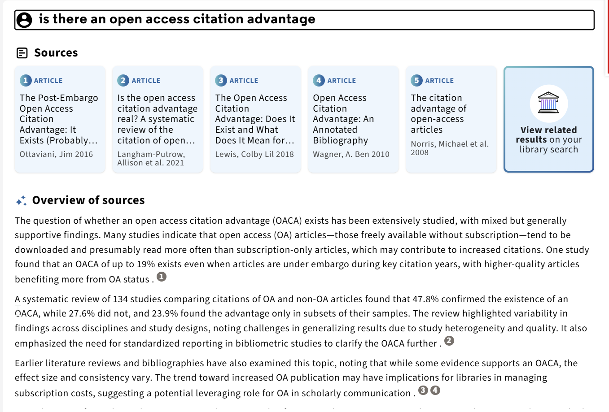
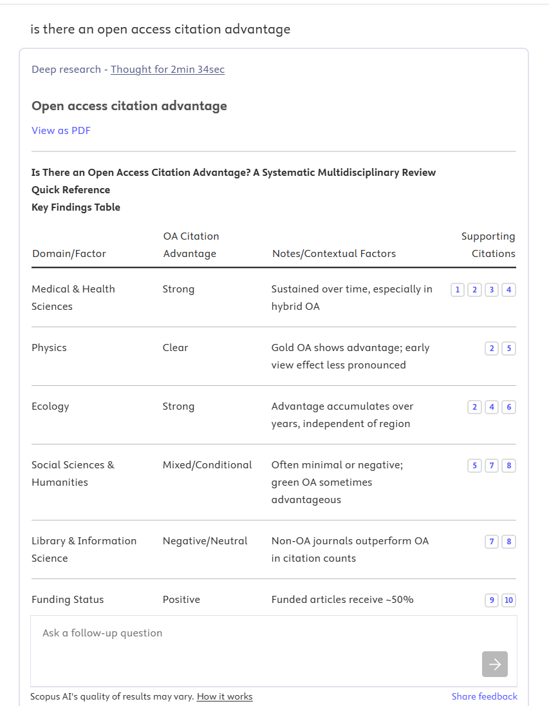

Preface
Why this book exists
When a search system hands you a ranked list — or an answer with citations — two questions are hiding inside it, and they are almost always blurred together: why did this record get into the candidate set at all, and why did it rank where it did? This book exists to teach you to keep those two questions apart. By the end, you should be able to look at any search tool your library licenses — Boolean, “semantic,” “AI-powered,” or all three at once — and ask which decision happened at which layer, what the vendor has actually documented, and what nobody outside the company can know. That is a smaller skill than building a search engine, and a more durable one.
It took me three years to acquire it the slow way. Here is why.
Years ago, in library school, I was taught information retrieval for maybe five minutes in a course called Information Searching & Sources. TF-IDF got those five minutes and a formula. Vector search (Vector Space Model) got one slide near the end. I remember someone in class asking the lecturer to explain it because they didn’t understand.
Don’t worry about it. You won’t be examined on it.
I remember that moment because it captured how unimportant the whole thing seemed. And, to be fair, for a long time it was. I went on to spend years as an academic librarian, teaching classes, studying discovery systems and blogging about them, and nothing in the job really required me to understand the retrieval mechanics under the hood.
Then, around 2022, it stopped being unimportant. I have spent the years since learning this material the slow way: introductory retrieval courses taught online, engineering blogs from the companies that build search infrastructure, conference talks, vendor documentation, and peer-reviewed papers on the latest Transformer-based retrieval techniques. It is a steep climb — not because the individual ideas are especially difficult, but because the material is scattered across communities that rarely cite one another, much of it is pitched at readers with a mathematics or computer-science background, and almost none of it is written with a librarian’s questions in mind. The questions I actually had were far more fundamental. How is this different from Boolean or lexical search? How should I enter my queries now? What are the pros and cons of the new approaches? And, ultimately, how does this change which papers my researchers find? Answering any of them usually meant reading three things that were mostly about something else.
This book is that climb, compressed. It is what I wanted in 2022 and could not find. If it does its job, you will reach a higher vantage point than I did, for a fraction of what it cost me to get there.
What it does not include is any account of what the machine is doing at the moment it decides.
For most of the period in which our search training took shape, it did not have to. Academic databases behaved alike underneath: words as admission rules, and a ranking assembled from how often a term appears and how rare it is. When every engine works the same way, knowing the engine buys you nothing and knowing the syntax buys you everything. Attention went where it paid, and that was the right call — not a failure of the curriculum but a correct reading of the world it was preparing people for. I argued this at more length in “‘We’re Good at Search’… Just Not the Kind That the AI Era Demands,” which ended by calling for real information-retrieval competence in the profession. This book is my attempt to answer my own provocation.
That old division of labour made sense for a long time. I’m not sure it does anymore.
Two products can both claim to offer “semantic search” while doing quite different things under the hood. One might be BM25 with query expansion. Another might use dense-vector retrieval, learnt sparse retrieval, lexical–dense fusion, or a neural reranker over a lexical shortlist. Those are not implementation details in the trivial sense. They affect how you should enter your search query, which papers even make it into the candidate set and which ones rise high enough for the user to see.
The words on the box stopped meaning anything#
Since pretrained Transformer models entered text ranking around 2019, the field has moved unusually quickly, and it still feels a little like the Wild West. No single neural architecture has simply replaced lexical retrieval.1 Instead we have an expanding pile of overlapping labels from researchers and vendors alike: neural search, vector search, embedding search, semantic search, agentic search, and the least helpful of all, AI-powered search.
The problem is not the number of labels; it is that they are used interchangeably while describing entirely different things — a representation, a matching method, a stage in a pipeline, or simply a capability someone wants to market. (Appendix D, A librarian’s map of search terminology sorts some of this out.) The words on the outside of the box no longer tell you much about what is inside it.
Six of these collapses recur often enough to be worth naming, and the book names each one where you can check it rather than in a list here. One is catchable early, from behaviour on a result screen: a record can come back missing one of your words while the system is still scoring on nothing but words, which is why lexical does not mean Boolean. That one is settled at the end of Part I. The other five turn on words—vector, embedding, dense, top-k, neural—that have no mechanism behind them until Part II, so they wait for its opening. All six survive for the same reason: each lets a vendor say something true and have it heard as something stronger.
That matters for libraries. We are used to evaluating discovery products on coverage, interface, support and price. Those questions still matter, but they now stop short of something important: how the system decides what comes back. This does not mean librarians need to become retrieval engineers. It means somebody in the library needs to understand enough of the whole stack to ask sensible questions, compare systems, and work out which layer a problem actually belongs to — the case I made in “AI Search Is Rebundling Everything Libraries Know About Discovery.” Chapter 15 sets out what that takes in practice.
The half nobody is watching#
There is a second reason for this particular book, and it is the one that decides what is in it. Ask an AI search tool a question and two quite separate things happen: something selects a handful of papers, and something else writes about them. Almost every conversation I hear about these tools—in the profession, in the press, in the fast-growing literature on hallucination—is about the writing.
That attention is not misplaced so much as unbalanced, because the two steps do not fail in the same way. When the writing goes wrong you can generally tell: check the reference and it either exists or it does not. When the selection goes wrong there is nothing to check. The answer is just as fluent, just as neatly cited, and quietly built on the wrong papers—or on a set that is missing the one everybody in the field would name. One of these two failures announces itself and the other does not, and it is the silent one that decides whether a search was any good.
There is also a division of labour worth noticing. The generation half already has a crowd around it: computer scientists measuring fabrication rates, journalists stress-testing chatbots, an ethics literature several years deep. The retrieval half has almost nobody—and it is the half libraries license, configure, evaluate and pay for. If we do not ask which papers a system was able to reach, it is not obvious who will.
Who this is for#
Librarians are genuinely expert searchers, though that expertise takes different forms, and this book is written for three of them:
- Information literacy librarians, who teach people to turn questions into workable searches and to understand what different interfaces invite them to do;
- Evidence synthesis librarians, who build high-recall strategies across databases, controlled vocabularies and platform syntax, then document them so somebody else can rerun them;
- Systems and discovery librarians, who see search from the other side—configuration, indexes, integrations, and the questions vendors do or do not answer.
There are many ways to be expert in search. This book assumes that professional knowledge and begins where those forms of expertise meet the retrieval machinery under the interface. The first two audiences are primary; the third will find the procurement and evaluation chapters written with them in mind.
What this book is, and what it is not#
Because it is written for the readers described above, this is not a typical Information Retrieval 101 text. It follows three deliberate principles.
- Understanding before detailed mechanism. The inverted index is explained in enough detail to show why it is fast and what it structurally can and cannot do, but not enough for you to implement one. You will get a sense of the latency and other trade-offs involved in different indexing and retrieval choices, but building these systems would require further study. Where the fuller machinery matters, it lives in the appendices rather than interrupting the main argument.
- Examples familiar to librarians. Wherever possible, I tie a concept or principle to what a named library or academic search system is documented to do, together with the date I checked it. When the documentation runs out, I say so rather than infer what is happening. This is the part of the book that will age fastest, and it is dated so you can see it ageing.
- Formulas only where they carry an argument. A formula is a kind of compression: useful if you already read formulas fluently, an obstacle if you do not. A librarian assessing a search system needs to understand what BM25 responds to and what it is blind to, not how to calculate it by hand.
Equally, three things this book is not. It is not an implementation guide — you will not come out able to build a retriever. It is not a product review — named systems appear as dated illustrations of mechanisms, not as recommendations. And it is not a verdict on whether any particular search was good. It establishes how to ask, which is a smaller claim and a more durable one.
Of course, this is a crash course, not a substitute for a graduate course in information retrieval, and specialists will find simplifications throughout. It is meant to give you a floor to stand on: enough to follow a technical conversation, interrogate a vendor claim, and recognise when one of your own search problems is really a retrieval problem.
Where to go deeper lists what to read for readers instructed to go beyond.
Now, to the machine itself.
Part I
Retrieval foundations and lexical search
The retrieval problem, words as admission rules, words as weighted evidence, and the difference between a lexical system and a Boolean one.
First sitting: about 60 min, including the Preface
Chapter 1
The retrieval problem
Central questionWhen an academic AI search tool hands you an answer with citations, what decided which papers it was allowed to cite?
An answer appears#
As documented in September 2026, a student signs into the library discovery layer, opens Primo Research Assistant and asks, in plain English, “Is there an open access citation advantage?” The panel shows five article cards under Sources, followed by an Overview of sources with numbered inline citation markers—the visible answer assembled from the selected records.
Primo Research Assistant: five sources and an overview

Ask Scopus AI the same question and the furniture changes. In the supplied screenshot, Scopus AI presents a Deep research report headed “Open access citation advantage”, with a quick-reference/key-findings table, supporting citation links and a follow-up question field. The offer is identical—natural-language question in, synthesised cited answer out.
Scopus AI: a deep-research report with cited findings

These tools are where most librarians now meet “AI search”, and where most professional discussion begins and ends: is the summary accurate, are the citations real, did it invent a paper?
Those are reasonable worries—but they concern the last thing the tool did. This book is about everything it did first.
Every AI search product contains two machines. One decides which records exist as far as your question is concerned, and in what order they are placed. The other turns some of those records into prose. Almost all public discussion of AI search concerns the second machine. This book is about the first.
Anatomy of a cited answer#
For once, we do not have to guess. Ex Libris documents the Primo Research Assistant pipeline in unusual detail. As documented in September 2026, the sequence is:
- Query conversion. The user’s natural-language question is sent to an LLM, which converts it to a Boolean query containing several variations connected with
OR. - Retrieval. That query runs against the Central Discovery Index (CDI) and returns up to 30 results.
- Reranking. The top results are reranked using embeddings to identify the five sources that best address the query.
- Selection. Those top five sources become the working set.
- Generation. GPT-4.1 Mini writes an overview from the five abstracts and supplies inline citations.
Read that list again. Only the final step writes prose. Steps 1–4 are all search: four-fifths of this documented pipeline is retrieval.
Scopus AI is documented more thinly. As documented in September 2026, it expands a question into multiple query variants, fuses the retrieved lists using what Elsevier calls “RAG Fusion”, and generates a Topic Summary or Expanded Summary in which every claim must carry a reference. The same two-part architecture is visible, with a different index and a fusion step; where the documentation runs out, so does this description.
Strip away the product names and a general shape emerges. The strip below shows the stages an AI search pipeline can contain, in the order they run. No product uses all of them, and no stage is guaranteed to be present: Primo Research Assistant fills five of the six boxes and skips fusion; Scopus AI’s documented “RAG Fusion” fills precisely the box Primo skips. Reading a product against this map—which stages exist, which are absent, which are documented and which are guesswork—is the core skill this book teaches.
- Query transformation
- The words you typed may be rewritten, expanded, translated into filters or split into several queries before retrieval ever sees them.
- Analysis & execution rules
- Text becomes index terms, and the rules decide which records are eligible to be returned at all.
- First-stage retrieval
- One pass fast enough to run against the entire collection, producing the candidate set. It may be lexical, dense or both.
- Fusion
- Several candidate lists — from different retrieval methods or different queries — are combined into a single list.
- Reranking
- A shortlist is compared again, more carefully than collection-scale retrieval could afford. Nothing excluded earlier can be recovered here. In the tool dissected above, this is where 30 candidates became 5.
- Presentation
- What the reader is finally shown, in what order and with what explanation — and what a library can record about it.
Table 1.1 — The six pipeline stages mapped onto Primo Research Assistant’s documented steps. Fusion is the only stage this product skips.
| Pipeline stage | Primo Research Assistant step (documented September 2026) |
|---|---|
| Query transformation | LLM Boolean conversion |
| Analysis & execution | Query executed against CDI |
| First-stage retrieval | Up to 30 results |
| Fusion | Not present (contrast: Scopus AI RAG Fusion) |
| Reranking | Embedding rerank, top 5 |
| Presentation | Five sources plus generated overview |
In both tools dissected above, the controller is a fixed workflow scripted by an engineer; a later chapter asks what changes when a model takes that seat.
Two machines, one product#
Two different problems sit inside every AI search product:
- Retrieval decides which records exist as far as your question is concerned, and in what order they are placed.
- Generation turns some of those records into prose.
Four things follow from that split, and together they are why this book spends fifteen chapters on the first machine and none on the second.
Most of the pipeline is retrieval. In the anatomy above, four of the five documented stages run before a word is written. The Boolean conversion decided what was findable, the index what was eligible, the first pass which 30 records existed, and the rerank which five survived. Generation was the last step and the shortest.
Retrieval sets a ceiling generation cannot raise. That overview was written from the abstracts of exactly five papers. Nothing the generation half produces can discuss a paper the retrieval half never surfaced—the shortlist bottleneck examined later in this book. Whatever shape a tool takes, the ordering holds: a quick answer is retrieval followed by generation,2 and deep research is many rounds of retrieval followed by generation.
Only one of the two failures is visible. A fabricated citation is a generation failure, and you can catch it: look the reference up and it either exists or it does not. A missing paper is a retrieval failure, and nothing in the answer signals its absence. Call it the silent failure, because it is the asymmetry to carry through the rest of the book. An answer built from the five best papers on a question and an answer built from the five the system happened to reach look identical on the screen: fluent, correctly formatted, properly cited. The second is simply wrong about the state of the literature, and says so nowhere.
A better model does not repair it. No amount of prompt engineering or model upgrading reveals what was never retrieved. The improvements arriving fastest, and attracting the most scrutiny, are all in the machine whose failures were already visible.
Four shapes of AI academic search
![A two-by-two matrix of AI academic search tools. The horizontal axis, primary user-facing output, runs from ranked records or search results on the left to a synthesised answer or report on the right. The vertical axis, degree of retrieval iteration, runs from single-pass or limited retrieval at the bottom to iterative, multi-step retrieval at the top. Bottom left, quick search: Scopus, Google Scholar, Web of Science Smart Search, Primo Natural Language Search in NDE, EBSCOhost Natural Language Search. Bottom right, quick answer: Scopus AI, Web of Science Research Assistant, Primo Research Assistant, Consensus Pro Mode. Top left, iterative search: Ai2 Asta Find Paper, Google Scholar Labs. Top right, deep research: Undermind.ai, SciSpace Deep Review and Agents, Consensus Deep Search.](images/2x2.png)
The diagram sorts current academic tools along two axes. Horizontally: what the tool hands you—a ranked list of records, or a synthesised answer or report. Vertically: how much retrieval it performs—a single pass, or repeated, multi-step searching. That produces four recognisable shapes: quick search, quick answer, iterative search and deep research.3
Primo Research Assistant and the core Scopus AI experience sit in the quick-answer quadrant: a single or limited retrieval pass, followed by generation. The deep-research tools in the upper right differ from them not mainly in how they write, but in how much they retrieve.
The important point for this book is that the two axes describe different things. The horizontal axis describes output format. The vertical axis is entirely a retrieval property: how extensively the system retrieves—a single or limited pass, or repeated multi-step searching. Half the design space of AI academic search is therefore retrieval design.
Agency is a separate question: who decides what to search for next? Neither axis records that choice. A tool in the upper half may follow a workflow fixed by an engineer, or may let a model choose each subsequent action from what the previous round returned. That third property—agency—is examined near the end of this book, once there are enough retrieval components for a controller to choose among.
So this book does not cover how language models generate text, how to detect a fabricated citation, how to write prompts, or how general-purpose agent architectures and planning algorithms work. It covers what happens before any of that: how text becomes searchable, how a system decides which records are eligible, how it ranks them, and how much of that you can establish from the outside. It does examine one narrow slice of agent behaviour—how an agent selects, repeats and stops retrieval actions—because that slice is retrieval design.
Key distinction
What does “relevant” actually mean?#
Most of us carry an unexamined assumption into searching: a relevant document is one that matches the query, and the more strongly it matches, the more relevant it is. The assumption has served librarians well—it is what makes a Boolean search explicit, inspectable and reproducible. It is also wrong, or rather, half right in a way that matters.
A match is not relevance. A match is evidence.
Behind every query stands a person who wants something—an answer, an overview, the five studies that settle a question. That fuller purpose is the information need. The system never sees it. What the system sees is a representation: the analysed query terms, perhaps some headings, fields, citations or embeddings. The query is not the information need; it is one imperfect expression of it. Everything a retrieval system does, it does to the expression. Chapter 11 returns to this once you are choosing between expressions—a phrase, a question, a whole seed paper—and the choice starts to matter.
From a need to a relevance judgement
Suppose someone types AI academic libraries. What they actually need is narrower: empirical studies, published since 2024, on academic libraries implementing generative-AI services for research support. Now watch the gap open in both directions.
A record containing all three typed words can still fail the need—an opinion piece, a study of public libraries, a paper from 2019. It matches perfectly and helps not at all. Meanwhile the ideal paper—an implementation study that says large language models, research consultation and university library—shares not one word with the query. It matches nothing and helps completely.
Matching the expression and satisfying the need can come apart in either direction. That gap is where every retrieval mechanism in this book lives.
“Relevant”, then, can mean at least four different things, and it pays to keep them apart. Each level asks a harder question than the one before—and only the first can be computed.
- System (algorithmic) relevance—how strongly the system estimates that an item fits the representation it was given. A BM25 score or a similarity score lives here. This is the only level a machine can compute; everything after it requires a person.
- Topical relevance—is the item actually about the subject? Our opinion piece about AI in libraries passes this test; the 2019 paper about pre-generative AI arguably does not.
- Cognitive relevance (pertinence)—is the item informative to this reader, given what they already know? The same paper can be exactly right for a specialist and useless to a newcomer, without either judgement being wrong.
- Situational relevance (usefulness)—does it help this person accomplish this task, here and now? A topically perfect, personally informative paper can still be useless because the task needed studies since 2024.
These four levels are a deliberate simplification. The research literature offers richer accounts—Mizzaro maps the term’s contested history, and Saracevic sets out the fuller framework these levels compress—but one point survives every version of the theory: relevance is a relationship, not a property. No document is relevant on its own. It is relevant to someone, for something.
Everything that follows in this book—Boolean conditions, BM25 scores, embedding similarity, neural rerankers—is a machine for generating evidence about relevance. None of them is the judgement. Keep that in mind for twelve chapters, and no vendor claim will ever again sound quite as impressive as it is meant to.
When Primo Research Assistant selects five sources “that best address the user’s query”, it has computed system relevance—nothing more. Whether those five are topically right, informative to this reader and useful for this task is a judgement the pipeline cannot make and the generated prose can quietly obscure. A confident, cited paragraph looks like a relevance judgement has been made. It has not. It has been estimated, by machinery—and this book is about that machinery.
That machinery is what the rest of this book takes apart. Before building any of it, though, it is worth being puzzled by three ordinary searches—because each of them behaves in a way that the account of searching most of us carry around does not predict.
Most librarians understand Boolean searching. That understanding predicts certain behaviour: add a required word, and the result set shrinks; add an impossible word, and it empties. Here are three searches—all real, all screenshotted below—where that prediction fails or falls short.
Three familiar search results—and three puzzles#
Puzzle 1. Take a genuine question—is there an open-access citation advantage?—and append a string of invented nonsense, a word that appears in no paper anywhere. Run it in scite. Under Boolean logic, that one impossible term should empty the result list. Instead, nothing breaks: useful papers still appear near the top, and the interface still reports millions of results. Why didn’t the impossible term kill the search?
Puzzle one: the nonsense term did not empty the result list

Puzzle 2. Search open access in Google Scholar and it reports about 9.4 million results. Now try to see them. The interface stops at page 100—one thousand records—and Google’s own help documentation confirms that no more than 1,000 results will ever be shown for a single query. So what are the other 9,399,000 “results”? Were they ranked? Were they even scored?
Puzzle two: the reported result set is much larger than the viewable list

Puzzle 3. The name Semantic Scholar promises search by meaning—so a natural-language question ought to be exactly the query it handles best. It is not. In August 2026, Is there an open access citation advantage returned just 13 results, for a topic with hundreds of relevant papers. Strip the question down to its keywords—open access citation advantage—and the same system returned about 35,300. Same information need, same words at its core, a 2,700-fold difference in results. Why did the more natural query retrieve dramatically less?
Puzzle three: a natural-language question retrieved fewer papers than a short keyword query
Natural-language question
Short keyword query
Hold on to all three. This book will not resolve them immediately—part of the point is discovering which of them can be resolved from the outside at all. By the end of Part I you will know how far the first two can be taken, and Part II settles what can be settled about the third. The outcome is not the one most readers expect. What the puzzles share, though, can be named right now, and the end of this chapter collects it into a map of everything the book is going to argue.
The puzzles now carry extra weight because systems like these can sit underneath an answer-generating layer. Primo Research Assistant converts questions to Boolean queries, so Puzzle 3—natural language meets a query parser—is not academic. A reranker chooses five survivors from thirty, so Puzzle 2—which fraction of the reported results was ever scored—is not academic either.
These screenshots establish visible behaviour, not the products’ complete internal architectures. We will return to these examples after building the necessary machinery from the ground up.
A map of the arguments ahead#
Each of the three puzzles tempts you into a mistake, and naming those mistakes now is most of what the rest of Part I and Part II are for. A hit count of 9.4 million beside a thousand viewable records tempts you to read a reported total as a set of ranked results. A record that came back without one of your words tempts you to conclude the system stopped matching words at all. A product named Semantic Scholar tempts you to read a label as an architecture.
Two of those three are the same mistake in different clothes: each reads a property of the display as a property of the machinery, and four chapters of ordinary lexical retrieval are enough to correct them—the end of Part I settles both. The third is a different kind of error altogether. It mistakes vocabulary for architecture, and no amount of squinting at an interface will ever settle it; it needs mechanisms that do not arrive until the opening of Part II. Between them they cover a great deal of what a product description can say truthfully and still have heard as something stronger than it is. Appendix D collects the wider terminology overlaps.
Vendor behaviour checked September 2026 against Ex Libris and Elsevier documentation; expect it to age—that is why it is dated.
Check yourself
Primo Research Assistant’s answer to your question cites five real, accurately summarised papers—but misses the one paper everybody in the field would name. Which machine failed, and how would you tell?
The retrieval machine failed. Search for the missing paper directly in the same tool, then trace the four possible exclusion points: the Boolean conversion may not express it; CDI may lack it or represent it poorly; it may fall below the 30-record cut; or the embedding rerank may place it outside the final five. A supported summary of the surviving sources does not reveal which exclusion occurred.
A vendor says its discovery tool “uses a large language model”. Which half of the product does that tell you about?
Neither, on its own. An LLM can sit in the retrieval half—writing a Boolean query (as Primo Research Assistant’s does), generating a pseudo-document, reranking a shortlist, choosing the next action—or only in the final generation step. Naming the model locates no component.
In the documented Primo Research Assistant pipeline, identify each stage that could exclude the ideal paper from the final answer.
There are four: the Boolean conversion can mismatch the need; the index can lack or poorly represent the paper; the first retrieval can place it below the top 30; and the embedding rerank can leave it outside the top 5. Generation cannot exclude it from the working set, only fail to use a source that survived. Every exclusion happened before writing began.
The opening diagram has two axes. Which one is a retrieval property, and what third property does neither axis record?
The vertical axis is the retrieval property: how extensively the system retrieves, in one pass or many. The horizontal axis is output format. Neither records agency — who decides what to search for next — which is why a fixed workflow and an agentic one can occupy the same quadrant.
A search returns forty records, every one of which contains all three of your search terms. A colleague says the search worked. What has been established, and what has not?
That forty records satisfy the representation you supplied. Not that any of them helps with the need behind it — a record can match every term and still be an opinion piece, the wrong population or the wrong decade. And not that the database holds nothing better: the records your wording never reached are not in the set to be judged. Matching is evidence about relevance. The judgement is still yours, and it can only be made about what came back.
Chapter 2
Boolean admission and the inverted index
Central questionHow does a system decide which records are eligible?
Strict Boolean retrieval is the oldest answer to the retrieval problem and still the clearest. A query states conditions; a record either satisfies them or it does not. There is no notion of a better or a worse match, only membership of an eligible set.
That simplicity is worth understanding precisely, because everything later in this book is a departure from it. This chapter follows a document from raw text through tokenisation, stemming and indexing, then shows how Boolean conditions are evaluated over the resulting structure—and why the answer arrives so quickly.
Strict Boolean search: words as admission rules#
Consider the query:
delulu AND job
A Boolean system requires a record to satisfy both conditions.
Boolean operators create hard decisions:
ANDrequires conditions to occur together.ORallows alternatives.NOTexcludes records.
Boolean logic decides whether a record satisfies the query. A record that passes all of the query’s hard conditions is eligible to enter the result set.
Boolean retrieval tells us whether a record meets the conditions the searcher expressed, not whether it is relevant to the underlying need. This does not make Boolean retrieval inferior: explicit eligibility rules remain valuable when a task requires inspectable, reproducible control over who may enter the result set.
This is not a historical curiosity. It is the model behind the advanced-search interfaces librarians use most: PubMed’s Advanced Search with its search-history builder and MeSH terms, Web of Science Advanced Search with its field tags, and the equivalent screens in Scopus, EBSCOhost and Ovid. Conventional bibliographic database strategies for systematic reviews typically combine Boolean logic with controlled vocabulary, free-text terms, fields, proximity operators and other database-specific syntax. These explicit admission rules can be inspected and rerun, but they are only one part of systematic study identification; Appendix F treats the wider process as a high-recall retrieval problem.
Boolean logic does not by itself assign graded ranking scores. Once several records are eligible, Boolean alone supplies no rule for deciding which should appear first.
Boolean decides who gets into the competition. Ranking decides who finishes first.
This distinction matters when query expansion goes wrong.
Suppose an LLM expands delulu into:
delulu OR unrealistic OR irrational OR foolish
If foolish is a poor alternative, records containing it may enter the result set. Ranking may push them down, but Boolean has already admitted them.
A poor synonym expansion changes which records can enter

The reverse error is more serious. If a relevant record fails a compulsory AND condition, ranking cannot rescue it. It never enters the competition.
This is why LLM-generated synonyms require particular care in formal Boolean strategies. A weak suggestion is not merely given a low weight. It changes which documents can be returned.
The admission decision is now clear, but the ordering problem is still open. First we need to see how a search engine finds the eligible records without rereading the entire collection.
How Boolean search uses an inverted index#
Large academic indexes like OpenAlex, Semantic Scholar, Ex Libris CDI span hundreds of millions of records. To answer queries as quickly as possible, Boolean search does not normally reread every record whenever a query arrives.
It instead uses an inverted index: a structure that starts with searchable terms and points to the records containing them. Before examining how Boolean operators use that structure, we need to see how text becomes searchable terms.
Before the index: text becomes tokens#
A computer does not begin with an intuitive understanding of words. It needs a rule for dividing a string of text into units it can process. Tokenisation is that division, and each resulting unit is a token. A token is often a word, but it can also be punctuation, part of a word, a character or another unit chosen by the system.
For a simple English lexical index, the analysis might proceed as follows:
Table 2.1 — Stages of lexical analysis, and what a sample string looks like after each.
| Stage | Illustrative output |
|---|---|
| Original text | Delulu about jobs! |
| Tokenisation | Delulu · about · jobs · ! |
| Case normalisation | delulu · about · jobs · ! |
| Optional stop-word and punctuation removal | delulu · jobs |
| Optional stemming | delulu · job |
| Terms entered in this index | delulu · job |
There are different ways to do tokenisation. A different analyser might retain about, keep jobs unchanged, treat the exclamation mark as a token or preserve the complete string in a keyword field. Languages without spaces between every word require different boundary rules, while names, apostrophes, hyphens, URLs and identifiers create choices even in English.
Tokenisation is only the first step. Lowercasing, stemming, stop-word removal and synonym or controlled-vocabulary mapping are separate operations. The broader sequence is often called text analysis. Its final output supplies the terms that can enter a lexical index.
At search time, the query is also tokenised and analysed. Lexical matching becomes possible when a resulting query term corresponds to an indexed document term. Query and document analysis need not be identical in every system, but incompatible choices can create missed or unexpected matches.
Text becomes tokens; analysis turns selected tokens into searchable terms.
After tokenisation: stemming and lemmatisation#
Tokenisation decides where one unit ends and another begins. Stemming and lemmatisation are later analysis steps that may transform some of those units before matching. Their practical purpose is to let related grammatical forms share searchable evidence even when the user and the document do not contain exactly the same surface form.
Table 2.2 — Stemming and lemmatisation compared: how each reduces a word, and what to remember about the difference.
| Method | How it works | Illustrative output | What to remember |
|---|---|---|---|
| Stemming | Uses rules or heuristics to remove or replace common endings. | studies, studying and studied might become studi. | The stem is a matching key and need not be a valid word. |
| Lemmatisation | Uses vocabulary and morphological analysis, often including part of speech, to identify a dictionary form. | The same forms might become study; adjectival better may become good. | The output is a word, but the analyser must still choose the correct grammatical interpretation. |
These outputs are illustrative rather than guaranteed. Algorithms, dictionaries and languages differ, and a product may use neither method or may apply different analysers to different fields. A title-and-abstract field might reduce jobs to job, while an exact-name, code or identifier field deliberately preserves the original string.
The benefit is usually recall. If both query and document analysis reduce jobs and job to the same term, either form can retrieve the other. The risk is lost precision through over-stemming, when unrelated words collapse to the same term. The reverse problem is under-stemming: related forms remain separate and a potentially useful match is missed. Lemmatisation uses more linguistic information than stemming, but it is not automatically correct, semantic or superior for every collection.
Compatibility matters. If the document index stores job but the query analyser searches only for jobs, the forms may still fail to meet. When forms do converge, the analysed term determines which indexed-term entry is consulted, how occurrences are counted and how many documents contain that term. These choices affect Boolean matching and the collection statistics used by ranked lexical methods introduced later.
Neither technique is the same as user-entered truncation such as librar*, whose expansion depends on database syntax. Nor are they synonym expansion, controlled-vocabulary mapping, semantic query rewriting or dense retrieval. Those operations can connect different expressions or concepts; stemming and lemmatisation primarily normalise grammatical form within a lexical analysis pipeline. For a fuller technical account, see Manning, Raghavan and Schütze, “Stemming and lemmatization”, in Introduction to Information Retrieval.
Whatever analysis choices are made, their final terms become the keys used to build the inverted index.
From analysed tokens to a term-first map#
A collection is naturally organised document first: open a record, then read the words inside it. An inverted index reverses that direction for searching. It starts with an analysed term and points to the documents in which that term occurs.
Imagine four tiny records:
Table 2.3 — A miniature four-record collection, used throughout this chapter and returned to in Chapters 3–4 and Appendix C.
| Record | Text |
|---|---|
| D1 | Delulu job interview expectations |
| D2 | Job interview preparation guide |
| D3 | Unrealistic job expectations |
| D4 | Delulu about my dream job |
After the analysis described above (without the optional stemming step), the index maintains a dictionary of searchable terms. Each dictionary term points to a posting list: an ordered list of entries identifying the documents that contain it. A selected part of the dictionary for these records might look like this:
Table 2.4 — The same four records as an inverted index: each term paired with its posting list.
| Indexed term | Posting list |
|---|---|
delulu | D1, D4 |
job | D1, D2, D3, D4 |
interview | D1, D2 |
expectations | D1, D3 |
unrealistic | D3 |
preparation | D2 |
A posting is one entry in such a list. Real postings normally store more than a document identifier. They may also record how often the term occurs, which field contains it and the positions at which it appears. Those additions support later relevance scoring, field weighting, phrase searching, proximity scoring and result highlighting.
The earlier analysis choices determine which dictionary term and posting list a query consults. They can therefore change which records match even before any ranking method is applied.
An inverted index is best understood as a term-to-document map built from analysed text.
Boolean treats postings as sets#
For the query:
delulu AND interview
the engine does not need to reread all four records. It looks up two posting lists and intersects their ordered document identifiers:
delulu → D1, D4
interview→ D1, D2
intersection → D1OR combines lists, while NOT removes documents found in an excluded list. At this level, Boolean retrieval is largely set processing over postings.
Why inverted indexes can be so fast#
The first advantage is selective access. The engine goes directly from each analysed query term to its posting list rather than scanning every document. Rare terms are especially selective because their lists are short.
The second advantage is ordered access. Posting lists are normally sorted by document identifier. For a Boolean AND query, this makes it quick to find identifiers that appear in more than one list: the engine can work forwards through the lists instead of repeatedly searching earlier entries. A worked two-list example appears in the advanced appendix.
The inverted index gets us quickly to the eligible set. But if several records pass, the posting lists do not inherently say which one deserves first place. What is missing is a graded ranking rule.
Check yourself
A truncated search for librar* returns records containing “library” and “librarian” but not “libraries”. Which layer would you look at first, and why is it not the Boolean operator?
Analysis — how the truncation is expanded, and which surface forms the index actually holds as terms. Boolean operators only combine whatever posting lists analysis produced. AND, OR and NOT never decide which forms of a word map to which term.
A query analyser stems jobs to job, but the index stored jobs unstemmed. What happens, and why is this failure easy to miss?
The query consults a dictionary entry that does not exist, finds no posting list, and the term contributes nothing. It is analyser incompatibility between the query and document sides. It is easy to miss because there is no error — only a smaller result set than expected.
Why can a Boolean system answer a query over two hundred million records in under a second without reading any of them?
Two properties of the inverted index. Selective access: it goes straight from each analysed term to that term’s posting list rather than scanning documents. And ordered access: posting lists are sorted by document identifier, so an intersection moves forward through both lists without ever going back.
Chapter 3
BM25 and ranked lexical retrieval
Central questionHow does matching evidence become a relevance ranking?
Boolean retrieval treats every matching term as equally informative and every eligible record as equally good. Neither is true. A term occurring in three records is far more discriminating than one occurring in three hundred thousand, and a record using a term eight times is usually more about it than a record using it once.
This motivates ranked retrieval. Rather than leaving every retrieved record tied, a ranked retrieval system assigns candidates graded scores and orders them from higher to lower scoring. Ranked retrieval does not specify how those scores are calculated: they may come from lexical evidence, as with TF-IDF or BM25; from dense-vector similarity; from learnt sparse representations; or from combinations of several signals.
In academic search interfaces, the same idea often appears under user-facing labels such as Relevance or Best Match. Those labels do not name a particular retrieval method. PubMed, for example, calls its default relevance sort Best Match, while its documented architecture combines an initial BM25 ranking with a learning-to-rank stage.
Once candidates have scores, the system can completely order them or retain only the highest-scoring results. The latter is a top-k request: a result boundary, not a scoring method.
BM25 is a standard way of turning those intuitions into a score. This chapter explains what it measures, why repetition saturates rather than counting linearly, and how it runs over exactly the same inverted index the previous chapter built. The ranking is added; the index is not replaced.
BM25: words as weighted clues#
Most academic databases allow a relevance sort. Scopus and Web of Science, for example, let a searcher choose relevance rather than date or citation-based ordering. The label tells us that records will be ordered, but not how.
A common academic-search pattern has two controls. A Boolean expression first defines the eligible set; a separate scoring method then orders the records that survive. Strict Boolean logic can decide who passes, but it cannot distinguish among records that all pass.
The ranking stage need not be plain BM25. Production systems may combine lexical scores with field weights, phrase and proximity boosts, citations, recency, resource type or peer-review status, and may rerank a shortlist later. “Relevance” or “Best Match” therefore names an ordering, not a formula.
BM25 is one standard lexical answer to the ranking problem: it turns matching terms into unequal, graded evidence. Chapter 4 will show another valid architecture—BM25 retrieving and ranking candidates directly, without a strict Boolean AND gate.
An introduction to BM25#
BM25 is a lexical scoring function: it ranks documents by adding up weighted evidence from the analysed terms they share with the query. A record that matches more of your terms, rarer terms, or terms repeated at a sensible rate scores higher, and higher scores rank first.
It is also, quietly, one of the most consequential algorithms a librarian never sees named. BM25 is the default text-scoring model in Apache Lucene, and therefore in Elasticsearch, Solr and OpenSearch—the engines beneath a large share of the search tools libraries license. It remains the standard baseline that newer retrieval methods are still measured against.4
If you have met TF-IDF, you already know BM25’s central intuition: a matching word is evidence, and a rare word is stronger evidence than one that appears throughout the collection. The word delulu matching tells you far more than the word the matching.
BM25 scores are made from four observable things: whether a term occurs, how rare it is, how often it appears, and how long the document is. The score orders candidates well. But it is not relevance, and it is not a probability of relevance—it is lexical evidence, added up.
A caution for the historically minded: BM25 shares TF-IDF’s practical intuition, but it is not a revision of the TF-IDF formula. It grew out of a different line of research—the probabilistic relevance tradition—and the resemblance is convergent, not genealogical.5
Like TF-IDF, BM25 can only see terms the query and the document share: no shared term, no evidence. Unlike strict Boolean, it does not stop at yes-or-no. Every match contributes to a graded score, and the grades are what produce the ranking.
In simplified form, BM25 adds a contribution for each matching query term, and each contribution answers four questions:
- Did the term match at all? A term that does not appear in the document contributes nothing.
- How rare is the term in the collection? A term found in relatively few documents usually contributes more (higher score) than one found almost everywhere. This is inverse document frequency.6
- How often does it occur in the document, with diminishing returns? Repeated occurrences provide more evidence that the document concerns the term, but each additional occurrence adds progressively less evidence. Seeing
delulutwice may be more informative than seeing it once. Seeingdelulu100 times does not make a document 100 times more relevant. But how much should it be? In BM25 this term saturation is handled by a parameter conventionally written k1.7 - Is that frequency unusually high given the document’s length? Five occurrences in a short abstract may be stronger evidence (higher score) than five occurrences in a very long document. This is document-length normalisation and, like term saturation, the strength of this normalisation is controlled by a second parameter, conventionally written b.
None of these four ideas is exclusive to BM25—TF-IDF variants can use all of them. What makes BM25 BM25 is how it answers the last two: repetition saturates rather than counting linearly, and document length moderates term frequency in a particular, tunable way. Typical defaults are k1 = 1.2 and b = 0.75, the values used in the worked example in the appendix. A librarian inspecting a search engine’s ranking configuration will meet these two letters.
The four questions BM25 asks about each matching term

Try it: the formula is easier to understand when you can interfere with it. The BM25 Evidence Lab lets you change one source of evidence at a time — term rarity, repetition, document length — and watch a six-record ranking respond. It takes about five minutes and needs no prior knowledge of the equation.
This description uses the standard single-field form of BM25 as a simplifying reference; related variants adapt it to structured records and very long documents.8
BM25 and lexical ranking in academic search#
BM25 and lexical ranking in academic search

PubMed offers an unusually clear documented BM25 example. Its published multi-stage architecture for Best Match first retrieves and orders matching records with BM25, then uses LambdaMART9 to rerank the top 500. PubMed’s current help still describes a weighted term-frequency stage followed by machine-learning reranking. It therefore shows both BM25’s continuing role and why a production ranking pipeline should not be reduced to one formula.
Two product descriptions show how lexical evidence is usually embedded in richer ranking. Scopus describes term frequency and inverse document frequency alongside field, position and proximity signals. Primo’s Central Discovery Index combines field and rare-term weighting, term frequency, field length, phrase and proximity boosts with static signals such as resource type, recency, peer-review status and citations.
One discovery index documents its ranking signals

Only the PubMed example identifies BM25 directly. The Scopus and Primo descriptions establish that lexical evidence is active in current academic search, but not that either user-facing ranking is plain BM25.10
How BM25 uses the same inverted index#
The earlier Boolean explanation introduced the dictionary and posting lists as a term-to-document map. BM25 can use the same structure. Boolean operators treat postings mainly as sets; BM25 uses term frequency, document frequency and document length to calculate graded scores.
A common two-stage pattern: Boolean eligibility, then BM25 ranking

In this two-stage arrangement, query processing has five conceptual steps:
- Look up each analysed query term. The dictionary points to the corresponding posting lists.
- Gather the eligible records. Boolean operations over those posting lists determine which records satisfy the query.
- Obtain the scoring evidence. Postings can supply within-document term frequency, the dictionary supplies document frequency, and document metadata supplies length.
- Add the contributions. BM25 combines the evidence for each matching query term into a document score.
- Choose the output boundary. The engine may completely order the scored candidates or retain only a top-k.
The Boolean admission rule, BM25 scoring rule and top-k output boundary remain separate controls, even when a product executes them in one request. In direct BM25 retrieval, the second step changes: the engine gathers the union of records matching any analysed query term and scores them without first enforcing a strict Boolean AND.
Why the same index remains fast for ranked retrieval#
Selective access still matters. The Boolean query obtains its eligible records from posting lists rather than scanning every document, and BM25 can read the scoring evidence stored with those same postings. Ordered postings also help the engine bring together the score contributions belonging to the same document while moving forwards through the lists.
Production indexes add further engineering to store posting lists compactly and avoid unnecessary work. Compression and blocks reduce storage and memory traffic, while score upper bounds and safe pruning methods such as MaxScore, WAND and Block-Max WAND can avoid scoring candidates that cannot enter the leading results. These techniques change how efficiently the same term-to-document map is stored and traversed; they do not turn BM25 into semantic retrieval. The advanced appendix provides a complete worked scoring example and explains these techniques in more detail. The classic Introduction to Information Retrieval provides another introduction to dictionaries, postings and basic query processing.
As a broad practical rule, lexical retrieval over an inverted index is generally fast and often less computationally demanding than dense retrieval at a similar scale. That is not a universal benchmark result: hardware, index design, query mix and accuracy settings all matter. The different candidate-generation machinery used for dense vectors is explained in the later dense-retrieval section, after vectors and embeddings have been introduced.
Check yourself
Two documents of the same length contain the same query term. It appears once in Document A and ten times in Document B. Does BM25 give Document B ten times as much credit? Why or why not?
No. BM25 applies term-frequency saturation: repeated occurrences add evidence, but each additional occurrence contributes progressively less than the previous one. Ten occurrences therefore do not produce ten times the contribution of one occurrence.
The same query term appears five times in a short abstract and five times in a much longer document. Under BM25, should those five occurrences contribute the same amount? Why or why not?
Usually no. BM25 normalises term frequency by document length, so five occurrences in a short document will generally provide stronger evidence than five occurrences in a much longer one. How strongly length matters depends on the setting of the parameter b; if length normalisation is turned off, document length has no effect.
A database says it uses BM25 for relevance ranking. What does that tell you about how the eligible records are ranked, and what remains unknown?
It tells you that matching records receive graded lexical scores based on matching analysed terms, with rarer terms contributing more, repeated occurrences showing diminishing returns, and document length affecting the contribution. It does not tell you the k1 and b settings, how different fields are weighted, what phrase, proximity or other ranking signals are added, or whether a later stage reranks the results.
Chapter 4
Lexical search beyond strict Boolean
Central questionHow can a search remain lexical without behaving like strict Boolean?
Librarians routinely treat lexical and Boolean as synonyms. The reasoning feels natural: if a system returns records that lack one of my words, it can’t be matching words—so it must be doing something semantic. That inference is wrong, and correcting it is the most important thing this book does early.
Here is the correction in one sentence: a lexical system can require every term, require only some of them, or require none at all—and still be scoring on nothing but words. This chapter separates four things that the word “search” usually blurs together—query analysis, execution rules, understanding and transformation—and then uses them to show exactly how far the first two opening puzzles can be taken — and where the interface stops answering. The third stays open, on purpose: by the end you will see why no amount of squinting at the screen could ever settle it.
Key distinction
Lexical search does not have to mean Boolean search#
Lexical retrieval is any retrieval that draws its evidence from words: from how the analysed query terms relate to the indexed document terms. Boolean retrieval lives in this family. So does BM25. What separates them is not the evidence—both look only at words—but what they do with it: Boolean uses words as gates, BM25 uses words as weights.
The arrangement librarians know best combines the two: a Boolean expression decides who is eligible, then a ranker orders the survivors. That arrangement is common, but it is a choice, not a law. A keyword box or natural-language box may instead require only some of the terms—or none of them.
Suppose the analysed query is:
apple orange banana
A familiar academic-search interpretation is:
apple
ANDorangeANDbanana
Under that model, the implied AND admits only records containing every term, and a ranker orders the survivors. But here is the trap: a relevance-ranked result list looks exactly the same whichever rule produced it. The same vocabulary, the same analysis pipeline and the same inverted index support at least three different rules:
- All terms required (implied
AND, then ranking). A record missingbananais out before the ranker ever sees it. - Some terms required (minimum match). The system sets a threshold—say, two of three terms—and a record clearing it becomes a candidate.
- Any term suffices (any-match ranked retrieval). One matching term makes a record a candidate; every further match adds weighted evidence. BM25 commonly runs this way, gathering candidates from the union of the posting lists rather than waiting at an
ANDgate.11
All three are lexical. Not one of them needs embeddings, neural networks or “semantics”. A record returned without one of your words tells you the rule wasn’t strict AND—it does not tell you the system understood meaning.
Same analysed terms. Same inverted index. Different rules for admission and scoring.
Three admission rules over one inverted index

An admission rule, a ranking function and a top-k output boundary therefore solve different problems: who may compete, how candidates are ordered, and how many leaders are retained. A production system can control all three independently.
A bad term: exclusion under AND, distortion under BM25#
Consider this query, where foolish is someone’s weak attempt at a synonym for delulu:
delulu job interview expectations foolish
The same bad term does different damage under different rules.
Under implied AND, foolish is compulsory. Relevant records that never use the word are excluded before ranking begins—and nothing downstream can recover them, because no ranker can rank what it never received.
Under any-match BM25, those records survive. But the bad term does not become harmless; it changes jobs. BM25 has no way of knowing foolish is a poor substitute for delulu—and if foolish happens to be rare, IDF does precisely the wrong thing: it treats rarity as importance and hands the weakest term in the query extra influence. Irrelevant records containing foolish rise. The bad term stops deciding who competes and starts distorting who wins. The Evidence Lab demonstrates the effect.
Notice that neither system malfunctioned. Both handled the query exactly as designed; the query itself was a flawed representation of the need. Good retrieval over a bad representation is still a bad search.
Rare query terms contribute stronger lexical evidence through IDF

foolish is a weak substitute for delulu. The bad term stops deciding who competes and starts distorting who wins.Term-frequency saturation cannot identify a weak query term; it only limits the benefit of repeating that term inside a document. BM25 is lexical evidence made less binary, not semantic understanding.
What might have happened to a missing query word#
So a result comes back without one of the words you typed. What happened to the word? Four stories are consistent with what you can see:
- It was removed during analysis—discarded as a stop word or punctuation before retrieval began.
- It was removed or changed during rewriting—an upstream component shortened, expanded or reformulated the query. This is the only one of the four that changes the query itself; a section below takes it up.
- It survived, but was optional—matching it would have improved a score; nothing required it.
- It survived, but matched nothing—the term reached the index, found no posting list, and contributed silently nothing.
Four stories, one screen—and the screen looks identical under all of them. They are not even mutually exclusive: a system may discard some terms, require only a subset of the survivors, and rank by weighted matches, all in one search. This is the scite puzzle in miniature, and it is why that puzzle stays unresolved: the question is not hard, it is undecidable from the evidence the interface provides.
Early Google: a useful counterexample#
The words sent to retrieval may not be the words you typed#
One of those four stories deserves its own section, because it is the only one that changes the query itself. Until now this book has quietly assumed that the words reaching the index are the words you typed. Drop that assumption: many systems first interpret what you typed, and then build a different internal query—one better suited to the index behind it.
That puts four distinct jobs between your keyboard and the posting lists. Each has now appeared in this book; here they are side by side.
- Query analysis—the routine plumbing of Chapter 2: tokenisation, normalisation, stemming and lemmatisation, stop-words. It prepares strings for matching. It implies no AI and no understanding of meaning.
- Query execution rules—this chapter’s dial: are the resulting clauses required, optional, or subject to a minimum match?
- Query understanding—interpreting the request: spotting a phrase, an entity, a date, an intent. Understanding can inform a decision without altering a single word of the query.
- Query transformation (query rewriting)—actually changing what retrieval receives: correcting, mapping, expanding, restructuring or splitting what you entered.
Understanding and transformation travel together but are not the same thing: understanding is what the system concludes, transformation is what it does about it—the observable change to the retrieval input. And note what transformation is not: query transformation is not a kind of retrieval. It hands a changed input to whatever engine sits behind it—and that engine may be exactly the Boolean and BM25 machinery of the last two chapters. A system can rewrite your query with a large language model and still search with 1970s mathematics.
Interpretation may lead to transformation before lexical retrieval
A contemporary interface may accept a natural-language question, identify its dates or proposed filters, and use a parser or language model to construct a Boolean expression. Natural-language input therefore does not imply a non-lexical engine: the transformed query may still go to Boolean admission and BM25 ranking.
This closes the list offered a few paragraphs ago. A typed word can disappear because analysis removed it, execution made it optional, no posting matched it, or transformation rewrote the query. Understanding alone does not remove the word; it matters when its interpretation causes one of those later changes. Chapter 11 returns to these operations with multi-query, routed and feedback-based retrieval available.
Returning to the first two opening puzzles#
Scite: the invented string in the opening screenshot was not compulsory. It may have been removed during analysis, removed or changed by an upstream rewrite of the query, retained as optional evidence, or retained without matching a posting. The screen cannot distinguish those explanations or identify BM25, dense retrieval or any other architecture.14
Google Scholar: the reported hit count, relevance ordering and viewable set are different properties. Google Scholar reports millions of matches but documents a display limit of 1,000 results. That is an observable output boundary, but it does not reveal the scoring signals, whether every match received a final score, or whether the displayed records are a global top-k.
Semantic Scholar remains unresolved: the August 2026 result counts tell us what happened, not where meaning entered the pipeline. We do not yet have the distinctions needed to ask whether retrieval itself was lexical, retrieval itself used dense representations, semantic processing occurred only after retrieval, or several stages were combined. The third puzzle therefore has to wait for Part II.
A search system can therefore be non-Boolean without being non-lexical or semantic.
What Part I settles, and what it hands on#
Chapter 1 named three temptations and left them standing, on the grounds that you had not yet watched a lexical system behave. You have now, and two of the three fall here. Both are the same kind of error—reading a property of the display as a property of the machinery—and both are settled by four chapters of ordinary lexical retrieval, with no appeal to meaning at all.
The third temptation is not of this kind. A product named Semantic Scholar tempts you to read a label as an architecture, and nothing visible on its interface can confirm or refute the reading—which is precisely why the remaining five wait for the opening of Part II instead. Two of its instances already matter for what follows: semantic search does not mean dense retrieval, since semantic names a goal while dense retrieval names one technical route towards it; and vector does not automatically mean dense, learnt or semantic, since BM25 scores can be held in sparse, vocabulary-aligned vectors while contemporary bi-encoders usually produce learnt dense ones. Related claims, but not the same claim.
The remaining problem is vocabulary mismatch: a paper about unrealistic expectations may stay out of reach of a search for delulu. A system can bridge that gap in two places:
- Change the query, keep the index. Correct, expand or map the query, then match terms as before.
- Change the representation. Encode queries and documents so that texts expressing the same idea are placed near one another whether or not they share any words, and retrieve by proximity rather than by matching.
The next chapters examine the second route while keeping the first in view.
Check yourself
A result lacks one of the words you typed. Name the four lexical explanations to exhaust before reaching for a semantic one.
Analysis removed it, a transformation stage rewrote it, it survived but was optional, or it survived but matched no posting list. Query understanding alone is not a fifth explanation unless its interpretation triggered one of those changes. None of these observations identifies the complete retrieval architecture.
What are the three independent controls in a ranked lexical search?
The admission rule decides who may compete, the ranking function orders the candidates, and the top-k output boundary decides how many leaders are retained.
An interface accepts a natural-language question and produces an editable Boolean query. What changed?
Query understanding may have recognised concepts or constraints; query transformation produced the changed Boolean retrieval input. The retriever may still use Boolean admission and lexical ranking over an inverted index.
End of Part I
Application exercise I — Explain a result list without invoking meaning
Part I claims that a great deal of apparently intelligent search behaviour is lexical. This exercise tests that claim against a system you actually support.
- Choose a discovery layer or database your library licenses. Run a natural-language query of six to eight words—a real question, not a keyword string.
- Record four observations: the reported result count; how many records you can actually page through; whether every query term appears somewhere in the first result; and what happens to the count when you add one invented word to the query.
- For each observation, list plausible explanations from Chapters 2 to 4. State what evidence supports each, what alternatives remain, and which product details would be needed to decide among them; if query understanding may have mattered, name the later change or decision it could have triggered.
- Repeat the query with every term quoted and joined by
AND. Note what changes and explain what the difference suggests about the execution rule or analyser, without treating the probe as proof of either.
Deliverable. A one-page note setting out the leading explanation for each observation, supporting evidence, plausible alternatives and remaining uncertainty—and, importantly, listing any observation you could not explain lexically. That residue is what Parts II and III have to account for.
Part II
Representations and retrieval pipelines
What changes when a system compares learnt representations instead of strings, and how several components are assembled into a pipeline.
Reading time: about 99 min
transformationCh 11Analysis &
execution rulesCh 8First-stage
retrievalCh 5–8FusionCh 10RerankingCh 9PresentationPart III
Part II builds the pipeline from the middle outwards. Chapters 5 to 8 move from learnt geometry to a retrieval encoder, collection-scale search and the indexed units underneath them; Chapters 9 and 10 divide the later work between reranking and combining candidate lists; and Chapter 11 returns to what happens to your query before any of it starts. Who decides to run the pipeline this way is held over to Part III.
Chapter 5
Embeddings: what the learnt geometry encodes
Central questionHow does a model learn to place related texts near one another?
Every method so far has compared strings. If two texts share no analysed terms and no expansion introduces overlap, a purely lexical retriever has no direct matching evidence connecting them. Dense retrieval attacks that limitation directly: instead of matching terms, it converts text into a vector of numbers and compares positions in a space where proximity encodes the query–document relationships that training taught the model to reward.
Before any of that can be searched, something has to produce the vectors. This chapter builds that encoder in three moves: from one stored vector per word, to representations that depend on the words around them, to the training without which proximity in the resulting space means nothing in particular. What it takes to run the result against a whole collection—including its top-k boundary—is the next chapter.
From Word2Vec to retrieval embeddings#
Before comparing kinds of vectors, it helps to separate three related terms. A representation is any form a system uses to stand for an item. In this chapter, the representations of interest are usually vectors: ordered lists of numbers. In a simple diagram, two numbers could give an object horizontal and vertical coordinates. Machine-learning vectors usually have hundreds or thousands of dimensions, so we cannot draw them directly, but the same idea remains.
An embedding is a mapping that places an item—such as a word, query or passage—into a vector space. In modern NLP, that mapping is usually learnt from data during model training. By common shorthand, the resulting vector is also called an embedding. Items placed near one another are treated as similar according to whatever patterns the model learnt.
That difference in provenance is the real break between Part I and Part II, and it is worth pressing on. A BM25 weight can be recomputed by hand: the formula is published, the inputs are term frequencies, document lengths and collection statistics, and two people working over the same collection will arrive at the same number. The values in an embedding have no such formula behind them. They are the parameters of a neural network, settled during training, and nobody writes them down in advance.
Training, though, is not a matter of instructing a network to learn meaning. It works by comparing what the model currently produces against what it was supposed to produce, then adjusting the parameters to make the gap smaller. That requires a target for every example, and nobody has labelled the meaning of every word in English. The question that has to be settled before any of this can begin is therefore an awkwardly practical one: what target can a body of text supply for itself?
Where the numbers come from, on each side of the break
![A two-panel comparison. On the left, a BM25 weight is assembled from query and document terms, term frequency, document length and collection statistics through a published formula, producing example weights of 1.28, 0.74 and 0.31 for heart, treatment and attack; the panel notes that the result is deterministic once the collection and parameters are fixed. On the right, a word or short text passes through a neural model to produce an embedding vector, and the panel notes that no hand-written formula supplies each value and that nobody writes the numbers down in advance. A lower panel shows the six-step training loop — take an example, predict, compare with the target, measure the gap, adjust the parameters, repeat — beside the question of what target a body of text can supply.](images/05%20Embeddings%20-%20what%20the%20learnt%20geometry%20encodes/calculated-weights-and-learnt-parameters.png)
The answer comes from linguistics rather than from machine learning. Firth’s formulation is the one usually quoted—“You shall know a word by the company it keeps”—and the claim beneath it, the distributional hypothesis, is that words appearing in similar contexts tend to be used in similar ways; Harris had argued much the same in 1954. Its value here is that it replaces an unanswerable question with an answerable one. Rather than asking a model what a word means, ask it to predict which words occur around it. The text already contains the answers, so no human labelling is required.
Text supplying its own training targets
![A five-part diagram. The first part quotes Firth, “You shall know a word by the company it keeps”, and notes Harris’s 1954 argument that words used in similar contexts tend to be used in similar ways. The second replaces the question of what the word heart means with the question of which words occur around it, noting that the corpus already contains the answers. The third shows two sentences in which heart and cancer appear in the same frame of surrounding words, with overlapping context circles. The fourth shows a context window over one sentence and the two prediction directions, context-to-centre and centre-to-context. The fifth notes that the model is never told explicit meanings and that the vectors are a by-product of reducing prediction error.](images/05%20Embeddings%20-%20what%20the%20learnt%20geometry%20encodes/distributional-hypothesis-training-signal.png)
Word2Vec acts on that hypothesis directly. It is trained on exactly that prediction task—recovering a word from the words surrounding it, or the surrounding words from the word—across a large corpus, and on nothing else. Predicting context is not itself the point: the vectors are a by-product, kept once training ends and put to work elsewhere. Earlier neural language models, recurrent ones among them, had thrown off word vectors the same incidental way while being trained to predict the next word. The Illustrated Word2Vec works through the mechanism step by step; what matters here is that the training target came out of the text itself.
The prediction task is the training; the vectors are what is kept
![A four-stage diagram. The first stage states the distributional hypothesis. The second shows a sliding context window of size two over the sentence “The patient received heart treatment after the attack”, with heart as the target word, and sets out the two training arrangements: CBOW, in which the context words predict the centre word, and Skip-gram, in which the centre word predicts the context words. The third shows the resulting embedding matrix as a table of words against short example vectors. The fourth shows the prediction head crossed out and discarded after training while the word vectors are kept, with heart, cancer and treatment clustered apart from job and interview in a two-dimensional plot.](images/05%20Embeddings%20-%20what%20the%20learnt%20geometry%20encodes/word2vec-predicting-context.png)
The individual dimensions of a Word2Vec vector are not normally labelled occupation, emotion or age. The learnt pattern is distributed across many dimensions, most of whose values are non-zero. That is why it is called a dense word embedding.
What the learnt geometry appears to encode#
What came out of that training was more than the expected result that words used alike end up near one another. The positions carried regularities nobody had specified. Words related to each other in a consistent way turned out to be separated by a consistent direction, so that arithmetic performed on the vectors tracked the relationship between the words.
The familiar demonstration is the one about royalty. Take the vector for king, subtract man, add woman, and the vector nearest the result is queen. Read geometrically, the step from man to woman and the step from king to queen are close to the same move through the space. The behaviour was first reported for vectors taken from a recurrent language model, and the Word2Vec papers then demonstrated it at much larger scale.
The same relationship as the same move through the space

king minus man plus woman lands nearest queen, what the space holds is a direction that can be reused, not four unrelated positions. The drawing is a schematic: the axes are anonymous, the positions are illustrative rather than plotted from a trained model, and a real word embedding has hundreds of dimensions that cannot be drawn at all. Open the full-resolution figure.The regularity is not confined to one hand-picked pair. Projecting the trained vectors for a set of countries and their capital cities down to two dimensions produces a set of roughly parallel country-to-capital arrows. The model was given co-occurring words and nothing else; the relation it appears to have picked up was never stated anywhere in what it was trained on.
Countries and their capitals, projected down to two dimensions

“Appear to” is the right strength of claim. The model was optimised to predict co-occurring words; the relational structure is a consequence of having done that well, not something it was asked for and not something it can be relied upon to get right.15 What the demonstrations establish for retrieval is narrower, and more useful, than the arithmetic suggests: a training target with no notion of meaning in it can still produce a space whose geometry is worth measuring distances in. That is the bet dense retrieval makes.
Word2Vec is only a stepping stone to modern dense retrieval. Classic Word2Vec gives a word essentially the same stored vector wherever it appears and represents individual words rather than complete information needs. Modern encoders can instead read a whole query or passage in context and be adapted, through pooling and task training, to produce one vector for that complete text unit.
Context changes the representation#
Consider bank in the river bank and in the bank refused the loan. Classic Word2Vec holds one stored vector for that string, so both uses begin from the same location and nothing in the model separates them. A contextual encoder instead computes a fresh representation for each occurrence from the sequence it appears in. The two instances of bank receive different vectors because the words around them differ.
These context-dependent vectors are often called contextual embeddings. More precisely, the encoder transforms its initial token embeddings into contextual token representations; obtaining one embedding for a complete query or passage requires a later pooling step.
The architecture that made this practical at scale is the Transformer, whose self-attention mechanism allows each token’s representation to draw on the other tokens in the sequence instead of being fixed in advance. ELMo, published in 2018, produced contextual representations using stacked bidirectional recurrent networks. Transformer-based encoders subsequently became dominant because self-attention made sequence processing more parallelisable and scalable for large-scale pretraining.16 The appendix on the Transformer sets out what self-attention does, why nearly every model named in this book is built from it, and what each of its two halves was trained to do.
What the model was trained to predict#
Self-attention describes how a model reads. It says nothing about what the model was scored on while it was learning to read that way, and that is the other half of the account. Every encoder named in this chapter arrives already pretrained, and what it was pretrained to predict shapes the representations it produces long before any retrieval training is applied to them.
Word2Vec, BERT and the GPT family share one arrangement, and it is the arrangement this chapter opened with: part of a text is hidden, and the model is scored on recovering what was hidden. Only the shape of the blank differs. Word2Vec hides a word and recovers it from its neighbours. Masked language modelling, the objective BERT is pretrained with, hides tokens anywhere in the sequence and recovers each one from the words on both sides of it. Next-token prediction, the objective behind GPT-style models, hides everything to the right of a position and recovers the next token from the left alone.
In all three the text supplies its own answers, so nothing has to be labelled by hand for pretraining to proceed. The name for that arrangement is self-supervised learning, and it is worth holding on to because it marks a boundary inside this chapter. Pretraining is self-supervised; the retrieval training described a few sections further on is not. That training needs pairs somebody decided were relevant, which is why the provenance of those labels becomes the argument there.
One training arrangement, three shapes of blank
The difference between the second shape and the third is not an implementation detail. A blank that may be filled from both sides lets a model read bidirectionally; a blank at the right-hand edge does not, because a model allowed to look rightwards would simply read off the answer it was meant to predict. That single constraint is what divided Transformer research into two strands, and why encoders became the basis for retrieval models while decoders became the basis for generation. Appendix A traces the two strands and sets out what each half was trained to do.
What BERT is, and what it still needs#
BERT is a Transformer encoder pretrained to learn general language patterns, chiefly by masked language modelling: predicting masked tokens from both sides of their context.17 That produces a general-purpose language model, not a search system.
Turning a pretrained encoder into a classifier, named-entity recogniser or retriever requires task training on labelled examples. Generic BERT is a poor retriever because masked-word prediction gives it no reason to place independently encoded questions near relevant passages. Models such as Sentence-BERT change the architecture and training for that purpose.
Domain pretraining is a separate lever. BioBERT continues pretraining on biomedical literature,18 BiomedBERT starts from biomedical text and vocabulary,19 and SciBERT does the same across scientific literature.20 This changes what the model knows, not what it should rank; each still needs retrieval-oriented training.
“Uses BERT” therefore leaves two decisive questions unanswered: was it trained for retrieval, and where does it sit in the pipeline? The same family can interpret a query, produce first-stage vectors or compare a shortlist as a reranker.21
Contextualisation supplies information a model could use. Task training decides what it becomes good at.
Check yourself
BERT produces contextual representations. Why does that not make generic BERT a retriever?
Contextualisation lets a token representation depend on surrounding words, but masked-language pretraining does not teach independently encoded queries and passages to rank together. Retrieval needs an architecture and task training whose positives, negatives and labels reward the relationships the search should recover.
A vendor says its search “uses BERT”. Which two questions remain unanswered?
Ask how the model was trained for the retrieval task and where it sits in the pipeline. The same model family can interpret or transform a query, encode first-stage candidates, or compare an existing shortlist as a reranker.
Chapter 6
From language model to retrieval encoder
Central questionHow does a language model's internal representation become something a search index can use?
Chapter 5 ended with a contextual language model and two unanswered retrieval questions: what should one vector represent, and what training makes nearby vectors useful for search? This chapter follows those decisions from model tokens through pooling, separate query and document encoding, similarity, and retrieval-oriented examples.
The delulu example remains a teaching case, not evidence that a pretrained model already understands the query. Its point is to make the desired ranking explicit. Positive pairs, hard negatives and labels must teach the encoder that the relevant passage addresses unrealistic expectations while the superficially similar passage does not. Only then can the resulting vectors become retrieval infrastructure that a collection-scale index can use.
Model tokens are not indexed terms#
Classic Word2Vec uses a fixed word vocabulary, so an unseen complete word may map to an unknown token.22 Modern encoders usually divide unfamiliar strings into reusable subwords, characters or bytes. This improves coverage but does not imply understanding: a tokeniser can split a string even when the encoder has learnt little about its use. Appendix B gives the detailed worked example.
The word token is also used in lexical indexing, but the units perform different jobs:
Table 6.1 — Lexical index terms and dense model tokens are produced by different processes and are not interchangeable.
| Lexical index | Dense encoder |
|---|---|
Analysis produces indexed terms such as delulu or job. | The model tokeniser produces vocabulary IDs for words, subwords, characters or bytes. |
| An indexed term can point directly to a posting list. | A model token is processed with surrounding tokens inside the encoder. |
| Exact overlap can provide transparent lexical evidence. | Token information contributes to a learnt representation and may not remain separately inspectable after pooling. |
| The collection determines which analysed terms have postings. | The pretrained model has a fixed input-token vocabulary or byte inventory. |
For a conventional single-vector dense retriever, the path from text to one stored vector runs like this:
From text to one stored vector: what the encoder does in order
The model tokens are therefore inputs to the encoder. They are not the dimensions of the final pooled vector, and they are not automatically searchable terms in an inverted index.
A contextual encoder combines these input units and pools them into one representation for the complete query or passage. The next section explains the training that makes distances between those representations useful for retrieval.
How a contextual encoder becomes a retrieval encoder#
It is tempting to say that dense embeddings represent “meaning”. That is useful shorthand, but it leaves out the most important question: meaning for what task?
A dense retriever commonly starts with a pretrained language model. Producing one vector for a whole text requires a pooling step that combines the contextual token representations—commonly by averaging them, or by taking the representation computed at the sequence-opening position. Pooling on its own is not enough. Pretraining gives the model broad linguistic patterns, but a model that predicts masked or next tokens does not automatically arrange its pooled vectors well for search, and two texts can sit close together for reasons that have nothing to do with one answering a search for the other. Retrieval training changes the representation so that labelled relevant texts receive higher similarity scores than competing texts.23
Two influential examples make that transition concrete. Sentence-BERT (SBERT) adapted BERT so that independently encoded sentences could be compared efficiently. Dense Passage Retrieval (DPR) applied the bi-encoder approach directly to retrieval: a question encoder and a passage encoder are trained so that relevant passages score above competing passages. The important step in both cases is not simply using BERT, but training the independently produced representations for the comparison the system needs to make.
Pretraining gives language patterns; retrieval training teaches what should rank together

Suppose the query is:
Am I being delulu about getting this job?
A training dataset might label this passage as relevant:
How to recognise unrealistic expectations during a job search
It might contrast that passage with an easy negative:
A history of agricultural employment
and a hard negative:
Ten signs that you performed well in your job interview
The hard negative shares the broad topic and several important words, but it does not address whether the searcher’s expectations are unrealistic. Training encourages the model to score the labelled positive above both alternatives. Different systems implement this intuition with objectives such as triplet loss or contrastive softmax, and the selection of negative examples materially affects what the model learns.242526
Retrieval training pulls labelled positives closer and pushes negatives away

Where did those labels come from? They might be based on human relevance judgements, clicked results, questions paired with answer passages, titles paired with abstracts, citations, automatically generated queries or neighbouring passages from the same document.
Those sources teach different ideas of relevance. Clicks can reward popularity and ranking position. Question–answer pairs favour answer-bearing passages. Citations may teach scholarly relatedness rather than direct relevance. Titles and abstracts may mainly teach topical similarity.
Where the training data came from matters as much as what it taught. Training pairs are drawn from some particular literature, genre and style of question, and the model learns an operational model of relevance from the proxies available there. A retriever trained on web question–answer pairs has learnt what a good answer to a general-knowledge question looks like. That is not the same as what a useful paper looks like to a systematic reviewer, what a relevant record looks like to someone tracing a chemical compound, or what a good match looks like in a language or discipline barely present in the training data. The same architecture, trained on different material, becomes a different retriever.
This can be exploited deliberately. SPECTER trains document-level embeddings of papers on the citation graph, so that papers citing one another are pulled together—a definition of relatedness drawn from scholarly practice rather than from web behaviour.27 It can also be a trap: a model that performs well on the benchmark it was tuned for may transfer poorly to a different collection, query population or retrieval task, which is what the discussion of out-of-distribution transfer examines once the whole pipeline is in view.
“Positive” and “negative” are training labels, not universal truths.28
A retrieval embedding therefore preserves the similarities and differences that its starting model, training pairs, negative examples, loss function and optimisation process taught it to preserve. If exact identifiers rarely matter during training, it may blur them. If negatives rarely contain contradictions or specialised senses, it may fail to preserve precisely those distinctions.
Every retrieval embedding space embodies an operational model of relevance: its training data and objective determine which kinds of query–document relationships it learns to reward. Clicks, answer pairs, citations and other labels are proxies for a useful result, not direct observations of relevance itself.
Check yourself
Two products both say they use BERT. What are the two questions that actually determine how they behave?
Was it trained for retrieval at all — a pretrained encoder is a poor retriever until task training rearranges its space. And where in the pipeline does it sit: as a bi-encoder, a cross-encoder, a query rewriter or a reranker. The arrangement fixes what the system can afford and what evidence survives to the comparison.
A retriever trained on web question–answer pairs is deployed over a chemistry collection and performs poorly. Which lever was pulled, and which was not?
Retrieval training was pulled, but on the wrong material: the model learnt what a good answer to a general-knowledge question looks like. Domain pretraining — what the model knows about the literature — is a separate lever, and neither one on its own guarantees a fit to the target collection.
Why is a model token not an indexed term?
They are produced by different processes and do different jobs. An indexed term comes out of analysis and points straight at a posting list. A model token is a vocabulary ID fed into an encoder, combined with its neighbours and then pooled away — it has no posting list and is usually not separately inspectable in the final vector.
Chapter 7
Dense retrieval at collection scale
Central questionWhat does it take to search a whole collection by vector, and where does the result list stop?
The previous chapter ended with an encoder that can turn a query or a passage into a vector—one trained so that promising candidates land nearby. That is not yet a search system. Something has to hold hundreds of millions of those vectors, compare a query against them fast enough to be worth using, and decide where the result list stops.
This chapter deploys that encoder. It covers how vectors are stored and compared, how nearest-neighbour indexing keeps the comparison affordable, and what a top-k boundary is and is not. Along the way it resolves the first of the two distinctions Part I left open: semantic search is not synonymous with dense retrieval. The second—that a vector need not be dense, learnt or semantic—is the next chapter’s opening business.
Single-vector dense retrieval: compress first, compare later#
A conventional dense bi-encoder uses a query encoder and a document or passage encoder. They may share weights or use distinct parameter sets; either way, they are normally trained jointly on the retrieval objective. Dense Passage Retrieval is a well-known example of this dual-encoder pattern.29
Each indexed unit is encoded without seeing the query, so its vector can be calculated in advance and stored. At search time, the system encodes the query and needs a rule for comparing that vector with the stored ones. The comparison may be exhaustive, or a large collection may use an approximate nearest-neighbour index to reduce the work.
Begin with a toy space that has only two unnamed dimensions, so it can be drawn on a page. The query becomes an arrow, and each candidate becomes another arrow from the same starting point. One candidate points in nearly the same direction as the query; another turns further away. Similarity here simply means a numerical comparison rule that gives a higher score to the relationship it treats as more alike.
Cosine similarity is one common rule. It compares the angle between two arrows: a smaller angle means greater directional alignment. Their lengths do not matter. Arrows pointing in the same direction have cosine similarity 1, perpendicular arrows have 0, and angles greater than 90° produce negative values, reaching −1 for exactly opposite directions.
Dot product is another common rule. It multiplies matching coordinates and adds the results. Direction still matters, but unless the vectors have first been normalised, their lengths matter too: a longer candidate can outscore one that is better aligned. If the query and candidates are all normalised to length one, dot product and cosine similarity become numerically identical and give the same ranking.30
The same vectors can rank differently under cosine and dot product

Adding a third coordinate turns a two-number vector [x, y] into a three-number vector [x, y, z]. The same comparisons still work. Real text embeddings may have hundreds or thousands of coordinates and cannot be drawn directly, but cosine and dot product extend without needing a new idea: they apply the same operation across more matching coordinate pairs.
From a drawable two-dimensional vector to many dimensions

[x, y] to [x, y, z] and then to an n-coordinate embedding. The axes are anonymous toy coordinates rather than interpretable semantic labels.The resulting number is meaningful only within the representation and comparison rule that produced it. It is not a calibrated probability that a record is relevant, and scores from different models or searches need not be comparable. The Vector Similarity Lab begins with the two-dimensional toy and lets you watch each step of the comparison.
Like the ranked retrieval introduced in Chapter 3, dense retrieval assigns candidates scores and orders them; what changes is where those scores come from.
Key distinction
Semantic search is a goal, not an architecture#
Semantic describes what the search is trying to achieve: matching by meaning rather than only literal words. It is usually contrasted with lexical search, which draws its evidence from matches between analysed query and document terms. BM25, ontology or query expansion, dense retrieval and neural reranking describe mechanisms a system might combine in trying to achieve the semantic goal.
“Semantic search” is not another name for “dense retrieval”. Dense retrieval is one technical approach to semantic search that is very popular as of the mid-2020s. Natural-language input does not imply dense retrieval either: it tells us what the search box accepts, not how a retrieval stage builds its candidates.
Dense retrieval over vector embeddings is the most familiar contemporary implementation of the semantic goal. This is why semantic search, dense retrieval, vector search and embedding search are often used as if they were synonyms. They are not: semantic names an intended capability, dense describes the shape of a representation, vector names a kind of representation, and embedding names a learnt mapping into a vector space or, by shorthand, the vector it produces.
Those mechanisms do not contribute in the same way. BM25 by itself remains lexical, but it may supply candidates that a meaning-aware model later reranks. An ontology can add controlled concepts, synonyms and relationships to a lexical query. A dense retriever can compare learnt representations without requiring word overlap. A neural reranker can make a richer semantic comparison only after an earlier stage has retrieved a shortlist. A product may use one or several of these arrangements. The word semantic does not tell us which one, or where in the pipeline meaning enters.
Semantic similarity is not relevance. A document can express meaning very similar to the query and still be unsuitable for the user’s task, context or inclusion criteria.
What dense retrieval gains—and compresses#
The bi-encoder pipeline: encode independently, then compare vectors

The benefit is vocabulary bridging. A suitably trained model may place:
Am I being delulu about getting this job?
near:
How to recognise unrealistic expectations during a job search
even though the important expressions do not overlap lexically.
Dense retrieval can bridge different phrasings without lexical overlap

The trade-off is compression: one vector must stand for everything in the passage. Topic, named entities, claims, qualifications and terminology are all squeezed into one point before the passage knows which query will arrive. Shorter chunks reduce that pressure, but each chunk is still represented by one pooled vector. Independent encoding therefore creates an information bottleneck as well as making precomputation possible.
The compression bottleneck in single-vector dense retrieval

Broad similarity may consequently dominate a small but decisive detail. A model can recover the general meaning while blurring an exact code, a rare name, a negation or the difference between a question and its opposite.
How nearest-neighbour indexing makes dense retrieval practical#
The earlier lexical sections separated Boolean eligibility from direct BM25 candidate retrieval. In both routes, an inverted index can jump from analysed query terms to matching records without scanning the complete collection.
A dense embedding does not provide an equivalent term-to-document pointer. Most vector dimensions are active, the dimensions do not correspond directly to recognisable words, and a relevant document need not share any query term. There is therefore no posting list for delulu that can directly identify all vectors expressing unrealistic expectations.
The exact baseline is a flat or exhaustive vector search: compare the query vector with every stored document or passage vector. The engine can then construct a complete ranking or select only the leaders. This route is exact, but its work grows with the collection size and vector dimensionality.
At scale, dense-retrieval systems typically use an approximate nearest-neighbour index, or ANN, to reduce the number of comparisons. Rather than examining every vector, an ANN structure searches promising regions or navigates through selected neighbours. HNSW, which organises vectors as a navigable multi-layer graph, is one widely used example. Other approaches partition the vector space, compress vectors or combine several strategies. ANN changes how the engine searches and may miss a true nearest neighbour; it does not define the number of results returned.
Candidate boundaries in lexical and dense retrieval#
A candidate boundary decides who can receive a score. Strict Boolean admits only records satisfying its processed conditions; direct BM25 normally requires at least one analysed-term match. Both use posting lists, although either candidate set can still be very large.31
Dense retrieval has no comparable term-match floor. Unless a filter narrows the collection, every stored vector can receive a similarity score. Even an unrelated document will be nearest if everything else is farther away.
Nearest means best available, not necessarily relevant.
Key distinction
Top-k: complete rankings are possible—but often unnecessary#
Information retrieval uses k for the requested number of leaders. A top-k request asks for the k highest-scoring candidates rather than a complete ordering. Ten highest BM25 scores and ten nearest vectors both have k = 10; only the scoring evidence differs.
Top-k is therefore an output boundary, not a retrieval method. It is separate from the admission rule that forms the candidate set and from the ranking function that scores it.
Nor does top-k mean that only k candidates were examined. An exhaustive method may score every candidate while retaining only the current leaders. Exact BM25 pruning can safely skip candidates that cannot enter the leaders, while approximate nearest-neighbour search may inspect only part of the vector collection and miss a true neighbour. Exactness is another independent choice; Appendix C explains exact lexical pruning.
Visible counts and cut-offs reveal little about that execution. Google Scholar’s 1,000-result display limit does not prove that the interface shows an exhaustively ranked global top 1,000.32 In multi-stage systems, different values of k can govern different transitions: Chapter 9 shows a 30-record reranker budget and a five-abstract generation budget in Primo Research Assistant.
A top-k result can be Boolean-filtered, lexical, dense or hybrid, and exact or approximate. k says how many leaders were requested—not who could compete, how relevance was calculated or how much work was done.
Lexical retrieval can jump from a term to its matching documents. Dense retrieval must search for nearby vectors.
The inverted index described earlier and a dense-vector index provide two different routes to a candidate set:
Table 7.1 — How the candidate set is bounded on the lexical route and on the dense-vector route.
| Lexical route | Dense-vector route |
|---|---|
| Analyse the query into indexed terms. | Encode the query as a dense vector. |
| Follow each term to its posting list in an inverted index. | Use flat comparison or a nearest-neighbour index to search the stored vectors. |
| Strict Boolean requires its hard conditions; direct BM25 normally requires at least one analysed-term match. | Unless metadata or other filters narrow the candidates, every stored vector can receive a similarity score; flat search examines all, while ANN searches selected regions or neighbours. |
| Boolean alone supplies no ranking score; BM25 and related rankers use term-match evidence. | Vector similarity provides the initial retrieval score. |
| The output may be a Boolean eligible set, a complete lexical ranking or a lexical top-k. | The output may be a complete flat ranking, a thresholded range or a dense top-k. |
This is a comparison between indexing and retrieval routes, not necessarily between two mutually exclusive kinds of product. A product described as a vector database may store dense vectors and provide a nearest-neighbour index, but it may also support metadata filters, lexical fields or an inverted index. Likewise, contemporary search engines can combine lexical and vector retrieval: both Elastic and Weaviate document hybrid search that combines keyword or full-text evidence with vector evidence.
Returning to Puzzle 3: why did the keyword query retrieve more?#
Puzzle 3 began with an expectation created by a name and an interface. Semantic Scholar sounds as though it searches by meaning, perhaps through dense retrieval over embeddings, so a natural-language question seems like the query the system should handle best. Yet in August 2026, Is there an open access citation advantage returned only 13 results—far fewer than the hundreds of relevant papers expected for this established topic—while the compact keyword query open access citation advantage returned about 35,300. Why did the supposedly more natural query retrieve dramatically less?
The strongest architectural clue comes from Semantic Scholar’s documented 2025 main relevance-search pipeline:
Semantic Scholar’s documented main relevance search (2025)
query → Elasticsearch keyword retrieval over titles, abstracts and author names → up to 1,000 candidates → LightGBM reranking
The product name and natural-language-looking search box do not establish dense first-stage retrieval. The living technical account, revised 25 April 2025, documents lexical first-stage retrieval rather than embedding-based first-stage retrieval in this pipeline.33 On a lexical route, conversational words such as is there an may affect query analysis or execution, whereas the shorter query concentrates the vocabulary likely to occur in titles and abstracts. Depending on rules that the result screen does not expose, those extra words could narrow or otherwise alter the candidate set.
This is the strongest documented explanation for why the dense-retrieval intuition is unsafe, but it is not proof of the exact August 2026 cause. The architecture was documented in 2025, the current interface may have changed, and the two result counts alone cannot reveal the query parser or execution rule. Nor does the larger count prove that every returned paper is relevant. It shows only that keyword-style input produced a result-set size more consistent with the known breadth of the topic.
The point is not that Semantic Scholar lacks semantic capabilities. The platform also uses SPECTER embeddings for author disambiguation and recommendations. Their presence elsewhere still does not tell us which mechanism forms the candidates for main relevance search or where semantic capability enters that pipeline. Chapter 9 returns to the LightGBM stage once reranking is in view.
OpenAlex Alice semantic search supplies a deliberately stark contrast in which the documentation does identify dense first-stage retrieval. OpenAlex says Alice shipped in February 2026; its current documentation describes this route:
OpenAlex Alice semantic search (2026)
query → query embedding → comparison against stored work embeddings → nearest works by cosine similarity
OpenAlex embeds work titles and abstracts with GTE Large EN into 1,024-dimensional vectors, embeds the query with the same model, and returns the closest works by cosine similarity. Its 25 April 2026 Alice account describes a custom Elasticsearch vector index containing 413 million embeddings, including title-only embeddings for works without abstracts. The API treats search, search.exact and search.semantic as alternatives and permits only one per request, so this documented Alice route should not be relabelled as a hybrid query.
Table 7.2 — Semantic Scholar and OpenAlex Alice place candidate retrieval on different architectural routes.
| Question | Semantic Scholar documented main search (2025) | OpenAlex Alice semantic search (2026) |
|---|---|---|
| Candidate retrieval | Lexical candidate retrieval | Dense-vector candidate retrieval |
| Core comparison | Elasticsearch keyword matching | GTE Large EN embeddings compared by similarity |
| Ranking after retrieval | LightGBM reranking after the candidate boundary | Cosine similarity supplies the retrieval ranking |
| What the label reveals | The product name does not reveal the architecture | The documentation explicitly reveals a dense architecture |
Two systems can therefore both be discussed under the broad goal of semantic search while placing semantic capability in completely different parts of the pipeline. One begins with lexical candidates and applies a learnt ranker afterwards; the other retrieves candidates directly by dense-vector similarity.
The search box tells you how the user can express the query. “Semantic search” tells you what kind of matching the system aspires to provide. Dense retrieval, lexical retrieval and reranking tell you how particular stages may actually do the work.
Check yourself
The same query and the same two candidate vectors are compared twice. Under cosine similarity A ranks first; under an unnormalised dot product B ranks first. What changed, and what would make the two rules agree?
Nothing about the vectors changed—only the comparison rule. Cosine divides the comparison by both vector lengths, so it ranks on directional alignment alone and A’s smaller angle wins. An unnormalised dot product also responds to magnitude, so B can be long enough to overtake a better-aligned but shorter candidate. Normalising the query and every candidate to length one removes magnitude from the comparison; the two rules then give numerically identical scores and the same ranking. Neither ordering is a statement about relevance—both are scores produced by a rule the searcher did not choose and the interface does not usually name.
A vendor says its product provides “semantic search”. What has it told you, and what must you still ask?
It has stated a goal or capability claim: the search is meant to match by meaning rather than only literal words. It has not specified an architecture. Ask whether meaning enters through ontology or query expansion, learnt-sparse or dense retrieval, neural reranking, or a combination; where BM25 or another lexical stage sits; and which stage forms the candidate boundary.
A search for a rare gene identifier returns plausible but wrong near-miss compounds. Name two structural reasons that is likely under single-vector dense retrieval.
Dense retrieval has no term-match floor: unless a filter narrows the candidates, every stored vector can be scored, and nearest means best available rather than relevant. And pooling compresses a passage into one vector before it knows what will be asked, so broad similarity can dominate an exact identifier.
Chapter 8
Representations and indexed units
Central questionWhat is actually stored, and what does one stored item stand for?
The previous chapter compared stored vectors without saying what one of them contains. It also used indexed unit as though the phrase were self-explanatory. Both are load-bearing: a claim about what a search system can find is really a claim about what was stored and how finely it was cut up.
This chapter opens the stored object. It builds a lexical vector one decision at a time, from binary presence through term frequency and TF–IDF to BM25. That progression is enough to show that vector names the numerical object, while sparse, learnt and semantic name three independent properties. It then separates the source document from the indexed unit, the indexed unit from its representation, and both from the result a reader is finally shown.
Key distinction
A vector does not have to be dense or semantic#
Dense text embeddings are now the most visible vectors in search, but they are not the only kind. Long before dense retrieval, lexical systems could already represent a document as an ordered list of numbers. The easiest way to see this is to build the representation one decision at a time.
Step 1 — Fix the coordinate system: one vocabulary term per dimension#
Suppose a tiny collection contains three documents:
- D1: heart attack treatment
- D2: job interview tips
- D3: cancer treatment
After the text has been analysed, the collection vocabulary is [attack, cancer, heart, interview, job, tips, treatment]. That ordered vocabulary defines a seven-dimensional vector space. Coordinate 1 always means attack, coordinate 2 always means cancer, and so on. A real collection may have millions of vocabulary dimensions; the ordering is arbitrary, but it must remain consistent.
This first choice determines what the coordinates mean. It does not yet determine what numbers to put in them.
Step 2 — Binary presence: a Boolean-like starting point#
Put 1 in a coordinate when the term is present and 0 when it is absent:
- D1:
[1, 0, 1, 0, 0, 0, 1] - D2:
[0, 0, 0, 1, 1, 1, 0] - D3:
[0, 1, 0, 0, 0, 0, 1]
These are vectors. They are also sparse: each vector is defined over all seven vocabulary dimensions, but most coordinates are zero. In a million-term vocabulary, a short document might activate only a few hundred coordinates. Implementations therefore store the non-zero term–weight pairs rather than writing out every zero.
The word Boolean-like needs care here. A binary vector records the same presence or absence evidence used by Boolean retrieval, but the vector does not itself specify AND, OR or NOT. For the query heart treatment, the query vector is [0, 0, 1, 0, 0, 0, 1]. Counting shared ones gives D1 two overlaps, D3 one and D2 none. That is a simple graded overlap score. By contrast, the strict Boolean query heart AND treatment admits only D1, while heart OR treatment admits D1 and D3. The coordinates supply term evidence; the retrieval rule decides how that evidence is used.
The same three documents in a full collection vocabulary
![A two-stage worked example. First, a collection dictionary is built from a corpus, running alphabetically from a and aardvark through attack, cancer, heart, interview, job and treatment to zygote, with an example vocabulary size of 2,345,678 terms. Second, the same three documents — heart attack treatment, job interview tips and cancer treatment — are written as binary vectors across that vocabulary: one column per term, a 1 where the term occurs and 0 everywhere else, so almost every entry is zero. Side panels note where the binary values come from, that documents match a query through overlapping ones, and that an inverted index stores only the terms that actually occur.](images/08%20A%20vector%20does%20not%20have%20to%20be%20dense%20or%20semantic/binary-sparse-lexical-vector-space.png)
Step 3 — Term frequency: replace “is it present?” with “how much is present?”#
Binary presence treats one occurrence and ten occurrences alike. A term-frequency or TF vector keeps the same vocabulary dimensions but replaces the ones with counts or count-derived values. If D1 were heart attack treatment treatment treatment, its raw-TF vector would be [1, 0, 1, 0, 0, 0, 3]. The coordinate meanings have not changed; only the weighting rule has.
TF captures repetition, which is often useful evidence that a document is about a term. Raw counts also create a problem: repetition can grow without limit, and longer documents have more opportunities to accumulate large counts. A better lexical weighting scheme should decide both how much repeated use helps and how document length should affect the score.
Step 4 — TF–IDF: let distinctive terms count more#
Term frequency looks only inside one document. Inverse document frequency, or IDF, looks across the collection. A term that appears in nearly every document is usually less discriminating than one that appears in only a few. A common schematic form is TF–IDF(t,d) = TF(t,d) × IDF(t), with IDF(t) increasing as the term’s document frequency decreases.
In the toy collection, treatment occurs in D1 and D3, whereas heart occurs only in D1. TF–IDF therefore gives the rarer heart dimension more collection-level emphasis. The result is still a vocabulary-aligned sparse vector: absent terms remain zero, present terms receive calculated non-zero weights, and every coordinate can still be named.
Step 5 — BM25: add saturation and document-length normalisation#
BM25 develops the same lexical idea further. It retains IDF, but repeated occurrences show diminishing returns: the tenth occurrence of a term adds less evidence than the first. It also adjusts term-frequency evidence in relation to document length, so a long document does not receive an automatic advantage merely because it contains more words. Parameters control the strength of saturation and length normalisation.
BM25 can therefore be viewed as a calculated sparse vector representation. Query terms activate vocabulary dimensions, document coordinates contain BM25-style term contributions, and the final score can be expressed as a dot-product-style sum over matching dimensions.34 This is a mathematical view of the score, not a claim that a search engine writes millions of zeros or performs dense nearest-neighbour search. In practice, an inverted index jumps directly to the postings for active query terms and accumulates their contributions.
One vocabulary space, progressively richer lexical weights

Table 8.1 — The lexical progression keeps vocabulary dimensions fixed while enriching the values and retrieval rule.
| Representation or rule | What a document coordinate stores | What this adds | Important limitation or qualification |
|---|---|---|---|
| Binary presence | 1 if the term occurs; otherwise 0 | A compact record of term presence | Does not distinguish one occurrence from many |
| Strict Boolean retrieval | May use the same presence evidence | AND, OR and NOT impose hard admission conditions | The operators are retrieval logic, not properties of the vector itself |
| Term frequency | A count or count-derived value | Repeated use can provide more evidence | Raw repetition and document length can dominate |
| TF–IDF | Term frequency weighted by collection rarity | Distinctive terms contribute more than ubiquitous ones | Exact TF and IDF formulas vary; basic forms do not provide BM25’s full saturation and length treatment |
| BM25 | A calculated term contribution using IDF, saturated TF and length normalisation | A strong ranked lexical score | It remains lexical: normally at least one analysed query term must match |
The progression is therefore not “Boolean vectors become semantic vectors”. The dimensions remain lexical throughout. What changes is the value stored in each vocabulary coordinate and the rule that turns active coordinates into an eligible set or a ranking.
A dense embedding is built the other way round. Nobody assigns its coordinates to stated vocabulary terms. They are latent dimensions, settled during training, and what any one of them contributes is spread across the representation rather than readable from that coordinate alone. That is the contrast the next figure draws.
What vector dimensions mean in lexical and dense spaces

Now separate four questions that are often collapsed#
- Is it a vector? A vector is an ordered list of numbers. Binary presence, TF–IDF, BM25-style weights and dense embeddings can all be written as vectors.
- Is it sparse or dense? Sparse means that relatively few dimensions are active; dense means that most are active. This describes shape, not quality or meaning.
- Were the numbers calculated or learnt? TF–IDF and BM25 weights are calculated from formulas and collection statistics. Neural models learn their weighting or mapping from training data.
- What evidence do the dimensions preserve? Dimensions may stand for words, metadata fields, locations, colours, citation patterns or distributed latent features. Their design and training—not density alone—determine whether the representation supports meaning-oriented matching.
The same text could be represented by a sparse lexical vector such as [1.6, 1.4, 2.2, 0, 0] over [open, access, citation, advantage, embargo], or by a toy dense embedding such as [0.14, −0.37, 0.81, 0.05, −0.21, 0.63, −0.12, 0.28]. In the first, each coordinate has a recognisable term label. In the second, most coordinates are active, but latent 3 = 0.81 does not mean “citation” by itself. These values are illustrative of structure, not output from a named model.
Sparse and dense vectors compared

Density still says nothing by itself about semantics. An article described by [year, pages, references, citations] = [2026, 14, 32, 87] has a fully active—and therefore dense—feature vector. Its coordinates are explicit bibliographic facts, not a semantic text embedding.
The converse case: learnt weights in vocabulary coordinates#
The converse is also possible, and it is the case the four questions were separated for. A representation can keep BM25’s vocabulary coordinates and its sparsity while having every number in it produced by neural training. This is learnt sparse retrieval, and SPLADE is its principal example in this book.
The coordinate system does not change. Each dimension still stands for one vocabulary term, and almost all of them are still zero. What changes is where the value comes from. BM25 reads a count off the document and adjusts it using collection statistics. A learnt sparse model instead predicts a weight for each term in its vocabulary, having read the passage. The prediction ranges over the whole vocabulary, not only the words present, so a term the text never contained can still receive weight. A training penalty then drives the overwhelming majority of the remaining predictions to zero. That penalty is what keeps the representation sparse enough to hold in an inverted index.35
A toy representation of heart attack might therefore activate heart, attack, myocardial and infarction while leaving almost the whole vocabulary at zero. The last two were never typed and need not appear anywhere in the passage. They are still named coordinates, so the representation can be read back: an analyst can list which terms received weight and how much, which a pooled dense embedding does not permit.
A learnt sparse model expands within the vocabulary

Judged by the four questions above, the representation is learnt, like a dense embedding; sparse and vocabulary-labelled, like BM25; and more meaning-aware than literal typed-term matching. Knowing only its density would have predicted none of this. The arrangement is also the main alternative to running a lexical and a dense retriever side by side: what that buys a pipeline is Chapter 10’s subject, and what the expansion costs at query time is worked through in Appendix C.
Table 8.2 — Representation shape, provenance and evidence are independent properties.
| Method or case | Shape | Where the numbers come from | What the dimensions or conditions represent |
|---|---|---|---|
| Boolean conditions | Not primarily a graded vector ranking | Searcher-specified logic over indexed terms | Hard lexical admission requirements |
| BM25 | Sparse | Calculated formula and collection statistics | Vocabulary terms and their lexical evidence |
| Explicit bibliographic features | Potentially dense | Measured or recorded values | Named fields such as year, pages and citations |
| SPLADE-style retrieval | Sparse | Neural training with sparsity constraints | Vocabulary terms, including learnt expansions |
| Dense bi-encoder | Dense | Neural training | Distributed latent features |
Density and learning are separate axes of a representation

How vectors are compared is one more independent choice. Dot product can combine sparse lexical weights or dense latent features; cosine similarity can likewise be applied to different numerical representations. Neither operation makes the underlying vector dense, learnt or semantic. The earlier single-vector similarity explanation and the Vector Similarity Lab work through that arithmetic. Here the lesson is simply: the representation supplies the evidence, the comparison rule supplies a score, and the retrieval rule decides how the score is used.
Terminology varies across fields and systems. This book uses representation as the broad term and vector for the numerical object. Embedding refers to a learnt mapping into a vector space and, by common shorthand, to the vector it produces. BM25 is therefore a calculated sparse representation, SPLADE a learnt sparse representation, and a dense bi-encoder a producer of learnt dense embeddings. Other sources may call SPLADE-style outputs sparse embeddings.36
One document, one chunk and one vector are not the same thing#
Dense retrieval also forces us to stop using document as though it meant only one thing.
A source document might be an article, paper, report, webpage or book. The retrieval system may index its abstract, sections, paragraphs, sentences or overlapping token windows. Those are the indexed units.
A 20-page article might therefore produce one indexed abstract, ten section units or 50 overlapping passages. In a conventional dense bi-encoder, each of those indexed units receives one pooled vector.
The same article indexed under different chunking strategies

These are separate choices:
- Source-document granularity: the object a person thinks of as the document.
- Indexed-unit granularity: the text unit the system searches.
- Representation granularity: how each indexed unit is encoded.
- Result aggregation: whether matching passages are displayed separately or combined into one article-level result.
Chunking a paper into 50 passages creates 50 searchable units and, with a conventional bi-encoder, 50 independently searchable vectors. The units stay separate: no single vector captures the complete paper, and nothing automatically combines evidence spread across different chunks.
A paper split into many searchable chunks and vectors

This is not a theoretical distinction, and current products sit at very different points on it. The Wiley AI Gateway returns chunks of the full text that may be relevant to a query, alongside the paper’s metadata—so the indexed unit is a passage, and evidence buried in a methods section is reachable. A discovery layer built over records described by their metadata and abstracts is working with a much coarser unit. Both may describe themselves as searching articles.
The consequence is blunt: a system cannot retrieve evidence from text it never indexed. If a claim appears only in a paper’s results section, and the retrieval system holds only that paper’s abstract, no encoder, reranker or generated summary downstream can recover it. This is the same bottleneck logic that governs shortlists, applied one level earlier—at the point where the collection itself was defined.
For librarians evaluating semantic search, the immediate questions are therefore more practical than architectural: what text was embedded, how large was each unit, and how are several matching passages turned back into an article-level result?37 In RAG systems the same decision reappears downstream: the indexed unit is also the unit that reaches a model’s context, so a chunking choice silently becomes an answer-quality choice. Appendix G follows the chunk that far.
Check yourself
A vendor says its product “uses vectors, not keywords”. What has that ruled out?
Almost nothing. A vector is an ordered list of numbers, and the lexical representations in this chapter are vectors too—BM25 term weights can be written as one. The claim describes the numerical object, not whether the dimensions are vocabulary terms or latent features, not whether the numbers were calculated from collection statistics or learnt from training data, and not whether the comparison is meaning-aware. Those are three further questions, and the phrase answers none of them.
BM25 and SPLADE both produce sparse representations. What separates them, and what does that tell you about the word sparse?
Provenance. BM25’s weights are calculated from a formula and collection statistics; SPLADE’s are learnt under a sparsity constraint, which also lets it activate terms the document never contained. Sparse therefore describes only the shape—few active dimensions out of many—and settles neither where the numbers came from nor whether the representation is meaning-aware.
A product advertises “semantic search over full text”. What two things must you establish?
What the indexed unit actually is — titles, abstracts, sections or passages — because no encoder or reranker can recover evidence from text that was never indexed. And how several matching chunks from one paper are turned back into a single article-level result.
Chapter 9
Reranking and multi-stage retrieval
Central questionHow are several retrieval and ranking components assembled into a pipeline?
No production search system is a single retriever. Comparing a query against every document in a collection rules out any expensive comparison, so real systems retrieve cheaply and broadly first, then spend computation on a shortlist small enough to afford it.
The decision to retrieve cheaply first and compare carefully later explains cross-encoders, LLM rerankers and the place of late interaction. It also explains result diversification, which judges what a candidate adds to the items already selected. And it explains hybrid retrieval, which runs more than one retriever at once and must then decide how to combine what they return. These ideas only become meaningful now that the first-stage methods exist.
Rerankers: compare more carefully after retrieval#
A reranker is a second-pass scorer. It does not search the collection; it receives a list of candidates that an earlier stage already retrieved and decides how they should be ordered. Everything it can do is therefore bounded by what that earlier stage handed it.
“More carefully” means using richer evidence to make a better task-specific relevance estimate within that shortlist. It does not mean that a later stage discovers objective or true relevance.
That constraint is the whole reason rerankers exist in the form they do—and the reason they cannot fix certain problems at all. This section explains why systems accept the constraint, then works through the three arrangements that do the reordering: cross-encoders, late interaction, and large language models.
Why search systems use multiple stages#
Many production search systems are pipelines rather than one scoring formula. Query understanding and transformation may first interpret or rewrite the input, while retrieval control may route it. Once retrieval begins, fast methods search the full collection, while progressively more expensive methods examine progressively fewer records. Applying the most detailed query–document comparison to millions of records for every search would usually be too slow and costly.
Table 9.1 — The stages of a multi-stage pipeline, and why each belongs where it does.
| Stage | Main job | Why it belongs here |
|---|---|---|
| First-stage candidate retrieval | Use Boolean, BM25, dense, learnt-sparse or another indexed route to search the full collection and produce a manageable shortlist. | Speed and recall matter most: the aim is to retain as many potentially relevant records as practical without examining every record deeply. |
| Fusion and deduplication (optional) | Combine and reconcile candidates supplied by parallel lexical, dense or other retrievers. | Different routes may recover complementary records, but their lists and scores must be merged before later comparison. |
| Reranking | Apply a richer model to the shortlist and distinguish the strongest candidates from plausible but weaker ones. | More computation can be spent on each query–candidate pair because only a small portion of the collection remains. |
| Display or answer generation | Present the leading records or use selected sources to ground a generated response. | This stage works only with surviving results. Presentation or generation does not search the omitted records again. |
A reranker therefore usually does not search the complete collection. A fast first-stage retriever—perhaps BM25, a dense bi-encoder, ColBERT or a hybrid combination—first produces a shortlist. The reranker then spends more computation deciding how those candidates should be ordered.
This division of labour creates both an efficiency gain and a ceiling. First-stage retrieval normally balances speed with recall; reranking concentrates on precision near the top. Every shortlist is also a bottleneck: a reranker, fusion stage or answer-generating model cannot rescue a relevant document that no earlier route allowed into the candidate set. Chapter 14 gives recall and precision their exact meanings, and explains why only the first of them is settled here.
Chapter 7 resolved the misleading semantic/dense assumption behind Puzzle 3. We can now see the rest of the documented architecture. Semantic Scholar’s 2025 technical account describes an Elasticsearch keyword search over titles, abstracts and author names, capped at 1,000 matches, followed by a trained LightGBM reranker that emphasises direct title matches, citation counts and recency. The first stage determines which papers the learnt ranker ever gets to reconsider. The second stage changes the order within that boundary.
This is machine-learned reranking, but not dense retrieval or an LLM reranker. LightGBM cannot retrieve a paper excluded by the first stage, and its presence does not by itself explain why the August 2026 natural-language query returned 13 results. Appendix E reconstructs the earlier documented 2020 version in depth; the architecture itself belongs in the main chapter.
Retrieve broadly, then rerank a shortlist more carefully

Cross-encoder reranking#
A bi-encoder encodes the query and candidate independently. Document or passage vectors can therefore be calculated in advance, and search reduces to comparing the query vector with stored vectors. That is what makes large-scale dense retrieval practical. The cost is that the query and document do not interact until after each has already been compressed into its representation.
A cross-encoder does the opposite. It places the query and one candidate into the model together, typically as a single input sequence. Attention then runs across all their tokens before the model produces a ranking score—its estimate of task-specific relevance. The model can therefore examine whether a particular query term aligns with a particular passage, whether a qualifier changes the claim, or whether two otherwise similar texts differ in negation, entity or intent. Cross-encoder is an arrangement rather than a model: the same pretrained encoder that a bi-encoder trains for independent encoding can be trained to score query–candidate pairs jointly instead. Putting BERT to work this way is how the arrangement became prominent in retrieval (Nogueira and Cho, 2019).
The training example from Chapter 6 shows what that buys, because the difficulty it was built to illustrate does not go away once training ends. The query was:
Am I being delulu about getting this job?
A dense retriever of the kind Chapter 7 deployed returns a shortlist, and near the top of it sit both the passage that answers the question:
How to recognise unrealistic expectations during a job search
and the hard negative it was trained against:
Ten signs that you performed well in your job interview
Both are about job-seeking, both are advice, and both share vocabulary with the query. That is exactly why they are hard to separate once each has been pooled into a single vector. The compression happens before the passage knows what will be asked of it, and at that resolution the two look much alike. A cross-encoder is not making a better guess about the same evidence. It is reading the query and one candidate in the same sequence, so it can weigh whether the expectations are unrealistic against you performed well—a difference in what the passage does with the topic rather than in the topic itself. Chapter 5 used that pair to explain what training has to teach a model. It is the same pair, and the same difficulty, at query time.
The price is computation. The candidate representation cannot be precomputed and reused, because its encoding depends on the query. Reranking 100 candidates requires roughly 100 query–candidate model evaluations. This is usually affordable for a shortlist, but not for millions of records. Cross-encoder scores also reflect their training data, text truncation and definition of relevance; joint attention makes finer comparison possible, not infallible.
Bi-encoders precompute; cross-encoders compare query and candidate together

Where ColBERT-style late interaction fits#
ColBERT sits between the pooled bi-encoder and the full cross-encoder. Like a bi-encoder, it encodes the query and document independently, so document token vectors can be prepared before the query arrives. Unlike a conventional bi-encoder, it does not reduce each indexed unit to one vector. Its late-interaction score compares query-token vectors with document-token vectors after encoding.
This preserves more local matching evidence than a single pooled vector without paying the full cost of jointly encoding every query–document pair. ColBERT-style models can be used for first-stage retrieval or to rerank a shortlist, depending on the implementation and scale. They require more storage and computation than single-vector retrieval, but normally less query-time work than a cross-encoder over the same candidates.38
Where late interaction sits between bi-encoders and cross-encoders

Two consequences matter to a librarian, and they pull in opposite directions.
The storage bill is real. Keeping one vector per token rather than one per passage multiplies the index by roughly the number of tokens in a passage—two orders of magnitude is a fair mental estimate before compression. This is why late interaction is an infrastructure decision rather than a model swap. ColBERTv2 reports cutting the footprint of earlier late-interaction systems by six to ten times through residual compression—and the fact that such work was necessary tells you how large the untreated figure is. A vendor who has deployed late interaction has spent something to do it.
The interpretability is the best available in neural retrieval. Because the score is a sum of per-query-token maxima, it decomposes: for each word in the query, the system can name the document token that matched it most strongly. That is an inspectable alignment, not a post-hoc rationalisation, and it is closer to the evidence a lexical system can show than anything a pooled vector offers. The limit is that the token vectors themselves remain latent: you can see which tokens aligned, not why the model considered them similar. ColBERT is therefore inspectable at the scoring layer without being transparent end to end. Chapter 15 returns to what that distinction buys. For a visual, in-depth introduction, see Amélie Chatelain’s multi-vector search lecture.
All three arrangements are now on the table, and they answer the question the section on BERT had to leave open. A single pretrained encoder can be deployed in any of them: encode query and candidate independently and compare two pooled vectors, encode them jointly in one sequence and score the pair, or encode them separately as sets of token vectors and compare those. The choice is not a detail of implementation. It fixes what the system can afford: independent encoding scales to a collection, joint encoding does not. And it fixes what evidence survives to the comparison, because pooling discards the local detail that the other two keep.
Naming the model identifies the family it came from. What determines behaviour is which of these arrangements it was placed in, and what it was trained to rank.
LLMs as rerankers#
A general-purpose or specially trained large language model can also act as a reranker. Instead of merely comparing embeddings, it receives the query, candidate text and sometimes explicit relevance instructions. This makes it possible to ask the model to consider criteria such as population, method, date, study design or whether a passage actually answers the question rather than merely sharing its topic.
LLM reranking is commonly framed in three ways:
- Pointwise: judge or score each candidate independently. This scales linearly with the shortlist, but the scores may require calibration and the model does not directly compare candidates.
- Pairwise: compare two candidates and choose which is more relevant. Direct comparison can help with subtle distinctions, but many comparisons may be needed and preferences can be inconsistent.
- Listwise: present several candidates together and ask the model to return an ordering. This gives the model comparative context, but long lists exceed context limits, so systems often use sliding windows or repeated partial rankings. Input order can influence the result.
Pointwise, pairwise and listwise LLM reranking

These are not merely prompting details. They create different costs and failure modes. Research has demonstrated both listwise and pairwise LLM reranking, including zero-shot listwise reranking (Ma et al., 2023) and pairwise ranking prompting (Qin et al., 2024).
The words pointwise, pairwise and listwise also occur in classical learning-to-rank research, where they describe what the training objective learns from. Here they describe how an LLM is asked to judge candidates at reranking time. The shared vocabulary does not make the two arrangements identical; Appendix E separates them.
LLM rerankers can use richer instructions and longer textual context than many conventional rankers, but they are usually slower and more expensive. They may also be sensitive to prompt wording, candidate order, context-window limits, model updates and sampling settings. A generated explanation can make a decision easier to inspect, but a plausible explanation is not evidence that the ranking is correct.
The practical questions are therefore: what produced the shortlist, how many candidates reached the reranker, what text and metadata the reranker saw, which ranking formulation it used, and how the complete pipeline was evaluated.
A sophisticated reranker can reorder only what the retriever allowed it to see.
Ranking a useful set, not only relevant items#
A ranking can be strong item by item and poor as a list. Suppose the first six papers are all highly relevant reviews of the same subtopic, using similar evidence and reaching much the same conclusion. The sixth may add less to an exploratory search than a slightly lower-scoring paper on another aspect. A conventional relevance ranker scores each query–document relationship. Result diversification also asks how much the next candidate adds to the set already selected.
Relevance asks how well each item fits the query. Diversity asks what it adds to the items already selected.
This changes the optimisation target. The system is no longer simply sorting independent relevance scores; it is constructing a list or subset whose members should be both useful and not needlessly repetitive. Diversification names that objective; a reranker names a pipeline position, and deduplication removes records judged equivalent under a separate rule.
For academic search, diversification is most attractive for exploration: mapping several interpretations of an ambiguous term, exposing different methods or disciplines, and choosing less redundant passages for a generated answer. Its meaning still depends on what the system represents as different—topic, method, geography, viewpoint, publication type, author community or merely wording. Topical dissimilarity does not automatically produce viewpoint diversity, fairness or balanced evidence.
Where high recall is required, diversity-aware selection does not replace formal candidate retrieval. It may reorder a pool, but it can push a highly relevant near-neighbour below the displayed cut-off; in a systematic review, similar papers remain separate evidence. Appendix E compares the main diversification methods and the metrics used to evaluate aspect coverage.
Reranking in two documented academic pipelines#
Two systems already mentioned in this book document their reranking stage precisely enough to see the pattern, and they use different machinery for it.
PubMed Best Match retrieves and orders records with BM25, then applies LambdaMART to the top 500. Primo Research Assistant retrieves through CDI’s largely lexical ranking, then reranks the top 30 with embeddings. These values of k are stage-specific candidate budgets: they set what each reranker can see, not what is relevant.
Learning to rank (LTR) names the broader supervised approach behind LambdaMART. Instead of manually fixing the final influence of every ranking factor, a system is trained on examples to combine signals into an ordering. Those signals can include lexical evidence such as BM25 and field matches alongside document or query properties such as recency, publication type or past usage. They need not be embeddings, and the model learns only from the features and relevance evidence it is given. Appendix E develops the idea without requiring the algorithmic detail.
The two numbers are budgets, not statements about relevance. Everything below the line is ordered by the first stage alone, and everything outside the first stage’s results is unreachable regardless. When a vendor says its search “uses AI reranking”, the useful follow-up is not which model but how many candidates reached it.
One product, every stage in this book
Primo Research Assistant repays tracing end to end: its documented pipeline uses almost every mechanism this book has described, and each stage constrains the next.
Table 9.2 — One discovery product mapped to every stage described in this book, with the chapter that explains each. Vendor documentation checked August 2026.
| Stage | What the documentation describes | Explained in |
|---|---|---|
| 1. Query transformation | An LLM converts the user’s question into an OR-connected Boolean query, and can auto-refine a limited set of filters such as date range, peer-reviewed status and resource type. | When a system writes the Boolean query |
| 2. Candidate retrieval | That query goes to CDI, whose retrieval is largely lexical over an inverted index. | Inverted indexes |
| 3. First-stage ranking | CDI’s proprietary ranking combines rare-term and field weighting, term frequency, field length, phrase and proximity boosts with static signals—resource type, recency, peer-review status, citations. | BM25 in academic search |
| 4. Reranking | Up to the 30 leading results are reordered with embeddings. | This section |
| 5. Result boundary | The abstracts of the top five (k = 5) are passed to the LLM for generation. | Top-k as a result boundary |
Two things follow from reading Figure 9.5 as a chain. The embedding stage is fourth, not first: a paper CDI’s lexical ranking never placed in the top 30 is not reordered, it is simply absent. And the evidence reaching generation is five abstracts, not five papers, so anything stated only in a full text was never in play. A tool can be accurately described as using AI at three separate stages and still be governed, at the point that matters most, by lexical retrieval and a pair of cut-offs.
Key distinction
Neural information retrieval is broader than dense retrieval#
Neural information retrieval names an umbrella category, not a dense representation or a single pipeline stage. A neural model may retrieve with one dense vector, retain several token vectors for late interaction, produce sparse vocabulary-aligned weights, or rerank candidates retrieved by another method. The cross-encoders and LLM rerankers above are therefore part of neural IR even when the first-stage retriever is lexical.
Most contemporary examples in this book use Transformers, but neural IR is older and broader than that architecture: earlier systems used feed-forward, convolutional and recurrent networks, and a Transformer model is not inherently a retriever.39
Late interaction, described above, is one of two arrangements that sit awkwardly between the simpler lexical–dense categories this book has used. The other is learnt sparse retrieval, which runs the other way: lexical in shape but learnt throughout. Chapter 8 built the representation; this is where it earns its place in a pipeline. It sits immediately before hybrid retrieval because it is the alternative to one: a single model carrying both lexical and semantic evidence, rather than two retrievers and a rule for combining them.
The lexical floor survives the learning. A purely lexical scoring model must match at least one term, and that has not changed. What changes is that the floor now applies to the expanded term set rather than the words as typed. That is how a sparse system running on an inverted index can retrieve a document sharing no typed word with the query—without becoming dense. As a concrete literature-review example, Elicit uses SPLADE: model-suggested related terms enrich the query before they are sent to regular full-text search.
It can use familiar inverted-index technology. Because the representation stays sparse and vocabulary-aligned, learnt sparse retrieval can be served by Lucene-family inverted-index machinery and does not inherently require a separate dense-vector index. That is an architectural distinction from dense retrieval, not a claim that every library operates its own index: many libraries license hosted discovery systems and manage neither technology directly.
The cost reappears as query latency. Expansion is not free: adding terms to a query lengthens the posting lists the engine must traverse, and the terms a model adds tend to be common ones with long lists. “Runs on an inverted index” therefore means the infrastructure is familiar, not that the query is as cheap—Appendix C gives the measured size of the gap and what is known about closing it.
The two variants are not equally visible in this sector, and the asymmetry itself tells you something. Learnt sparse retrieval has a named academic deployment in Elicit. Late interaction does not appear to have a comparable publicly documented deployment in a major academic search product—it is well represented in the research literature and in general-purpose retrieval infrastructure, less so on a vendor’s architecture page. The storage cost described above is the usual explanation offered. Absence of documentation is not evidence of absence, and this is exactly the kind of claim that dates, so treat it as a description of what is currently inspectable rather than of what exists.
Both SPLADE and ColBERT remain dependent on model vocabulary and training data, and neither escapes out-of-distribution transfer.40 Both are nevertheless among the more inspectable neural approaches. SPLADE exposes weighted vocabulary terms and ColBERT exposes token alignments, which provide more scoring evidence than a single pooled dense score. Those artefacts do not explain how every contextual representation was formed or make either model transparent end to end.
Check yourself
A vendor says its product uses “neural information retrieval”. What architectures might that label cover, and what does it leave unknown?
It may mean dense bi-encoder retrieval, learnt sparse retrieval, ColBERT-style late interaction, or a neural cross-encoder or LLM reranking candidates from another retriever. The label does not identify whether the representation is sparse or dense, whether the neural model retrieves or only reranks, what supplied its candidates, or how many candidates reached it.
Why can a stronger reranker improve precision without raising the recall ceiling set by the first stage?
The reranker receives a fixed shortlist and can only reorder its members. Better comparisons may move relevant candidates upwards, improving the visible ranking, but a relevant record omitted by every candidate-generation route is unavailable to every later stage.
Chapter 10
Hybrid retrieval and rank fusion
Central questionWhen a system runs more than one retriever, how are their answers combined—and what does the combination hide?
Choosing retrievers and combining their answers are separate design decisions. A lexical route may preserve an identifier that a dense representation blurs; a dense route may recover a paraphrase that shares no useful indexed term. Running both creates two candidate lists, not one answer. The system must still decide which routes run, how deep each list is, how duplicate records are treated, and how evidence from unlike scoring scales becomes one order.
This chapter separates blending from routing. A blend runs prescribed routes and combines their outputs; a route chooses which path or paths to use for this query. It then treats reciprocal rank fusion as a deliberately simple baseline: RRF uses positions rather than incompatible raw scores, rewards agreement near the top, and exposes the cut-offs and weighting choices that a label such as “hybrid search” otherwise hides.
Why hybrid retrieval remains attractive#
The pipeline table above quietly introduced something the text has not yet named. Its second stage combines candidates supplied by parallel retrievers—and a system that draws on more than one retrieval method at once is a hybrid. Every method needed to build one has now been described, so this is the point to ask why anyone would.
The cleanest summary is more complicated than keywords versus semantics:
A lexical system may preserve the word and miss the meaning.
A single-vector dense system may recover the meaning and blur the exact word.
Hybrid retrieval protects against systems with different and partly complementary blind spots.
Boolean can provide explicit control. BM25 can preserve analysed lexical term evidence, including rare identifiers. Dense retrieval can bridge different formulations in a compact latent space. Rerankers and less common neural architectures may add further signals, but the main reason for combining lexical and dense retrieval is already clear: each can recover relevant material the other may miss.
Hybrid and multi-stage are not synonyms. In this book’s operational definition, hybrid combines candidates or scores from multiple candidate-generation routes. Multi-stage means that later operations process candidates supplied by an earlier stage. One is about combining retrieval routes; the other is about the order in which work is done. Vendors use hybrid less consistently, so their architecture still has to be inspected.
A system can be hybrid, multi-stage, both or neither. Lexical and dense retrievers running in parallel, followed by fusion and reranking, form both a hybrid and a multi-stage pipeline. BM25 followed by a cross-encoder reranker is multi-stage without being hybrid under this definition because it has one candidate-generation route. A single scoring stage that combines lexical and dense candidate-generation scores can be hybrid without using a reranking cascade.
The arrangement and the combination method both matter. A system may merge ranked lists with reciprocal rank fusion (RRF), combine normalised scores, or combine parallel retrieval with a later reranker. Routing is a different decision: it chooses which path or paths run. If several lists result, a later fusion rule still has to combine them. RRF gives each record a contribution based on its position in every input list, so it can combine, for example, a BM25 ranking and a dense ranking without pretending that their raw scores share a scale. It rewards high placement and repeated appearance, but discards the size of the score gaps inside each list. It is a fusion rule, not a relevance model or reranker. The formula and a worked example follow.
How reciprocal rank fusion combines ranked lists#
Reciprocal rank fusion (RRF) is an unsupervised rule introduced by Cormack, Clarke and Büttcher (2009). It ignores the raw score produced by each retriever and uses only each record’s rank position. For a document d, its fused score is:
$$ \operatorname{RRF}(d)=\sum_{r \in R}\frac{1}{k+r(d)} $$
R is the set of input rankings, r(d) is the position of document d in one ranking, and a document absent from a supplied list contributes nothing from that list. The constant k softens the advantage of the very first positions; the original paper fixed it at 60 after pilot testing. Sixty is therefore a conventional setting, not a universal law.
Suppose a lexical and a dense retriever each return three records. With k = 60, the calculation is:
Table 10.1 — A worked reciprocal rank fusion example over two short result lists.
| Record | Lexical rank | Dense rank | RRF score | Fused rank |
|---|---|---|---|---|
| A | 1 | 2 | 1/61 + 1/62 = 0.03252 | 1 |
| C | 3 | 1 | 1/63 + 1/61 = 0.03227 | 2 |
| B | 2 | — | 1/62 = 0.01613 | 3 |
| D | — | 3 | 1/63 = 0.01587 | 4 |
A wins because both retrievers place it near the top; C follows because it is first in one list and third in the other. Agreement is rewarded without requiring a BM25 score and a vector-similarity score to be made numerically comparable.
That convenience is also the trade-off. Once scores have become ranks, RRF cannot distinguish a narrow first–second gap from an overwhelming one. Results below each input cutoff contribute nothing, so the depths of the supplied lists matter. The lists also contribute equally unless the implementation adds explicit weights. RRF is therefore a strong simple baseline, not proof that fusion will improve every query; it must be evaluated on the collection and tasks that matter.
RRF has also travelled beyond hybrid retrieval. Scopus AI’s “RAG Fusion” applies exactly this formula—not to lexical and dense lists for one query, but to the ranked lists returned by several generated variants of the same question, before a summary is written from the merged top results. Nothing about RRF changes when it moves inside a generative product; the composition is worked through in Appendix G.
Two hybrids that combine differently#
The difference between blending and routing is easiest to see in two current products.
Web of Science Smart Search blends. An NLP parser first builds a structured Boolean query; document search can then run a Boolean keyword path and a semantic-vector path and combine their results. One interface, one question, two kinds of evidence contributing to a single ranking. This is the parallel arrangement described above. Its query-parsing stage is not the hybrid part: parsing changed the query; the blend is what makes it hybrid.
Scopus AI routes. Rather than always running both paths, it can decide per question whether to search lexically, to search over vector embeddings, or to do both. The design space is the same, but the combination rule is a decision rather than a fixed blend. The answer to “is this a lexical search or a vector search?” may therefore differ from one query to the next, and neither answer is wrong.
That second pattern is doing something the first is not. A blend runs and combines prescribed paths; a route is a retrieval-control decision made at query time. A rule, classifier or model may make that choice; routing alone therefore does not establish agency. Chapter 11 separates the interpretation that may inform a route from the route itself, and Chapter 12 asks who chooses subsequent actions.
“Hybrid” is therefore not one architecture or a guarantee of quality. It is a design space—and, as those sections will add, it still says nothing about who decided to search this way in the first place.
Check yourself
Give an example of a pipeline that is multi-stage but not hybrid, and one that is hybrid but not multi-stage.
BM25 followed by a cross-encoder reranker is multi-stage without being hybrid under this book’s definition: one candidate-generation route supplies a set that a later stage reorders. A single scoring stage that blends lexical and dense evidence is hybrid without being multi-stage.
Two products call themselves hybrid. One blends both routes on every query; the other picks a route per query. What follows for explaining an individual result?
With a blend, the same evidence sources contribute every time, so the explanation has a fixed shape. With routing, “was this a lexical or a vector search?” may have a different answer for each query — so the routing decision itself has to be exposed before any single result can be accounted for.
Chapter 11
Understanding, transforming and routing queries
Central questionWhat are you giving the system, what mechanism receives it, and what can happen before the next retrieval pass?
Chapter 4 separated interpreting a request from changing its retrieval input. Chapters 9 and 10 then added several retrievers, fusion and route selection. Together they allow a system to do more than rewrite one lexical query into another.
This chapter starts one step earlier: not every search begins with a string. A controlled term, seed paper, citation edge, relevance judgement, API predicate or task brief addresses a different mechanism. Only after identifying that object does phrasing become the useful question. The chapter then follows what the system inferred, what retrieval inputs it created, which paths used them, and how an initial ranking can construct a later query.
We can now return to the distinction introduced during the lexical sections. Query understanding interprets the request and may leave the retrieval input unchanged. Query transformation changes or creates retrieval inputs. Retrieval control chooses where those inputs go, whether several paths run, and whether another search happens.
These operations are often grouped loosely under query understanding, but they do not occupy one pipeline stage. Interpretation may trigger transformation, a routing decision or both. Most transformations occur before a retrieval pass, while feedback methods construct a later query from the results of an earlier one.
Key distinction
Before phrasing: identify the query object#
Advice about keywords, questions and prompts often treats them as three ways to fill the same box. They are still strings. The consequential choices come earlier: what mechanism will the search address, and what object stands for the information need? Phrasing comes last, after both.
A query represents some aspect of the need in a form a retrieval system can act on. Depending on the system, that representation might be keywords, a natural-language question, a seed document, a citation, an embedding, retrieval feedback or another object.
Table 11.1 — The query object determines which retrieval mechanism the search addresses.
| What the searcher supplies | Mechanism addressed | What changes in practice |
|---|---|---|
| Free-text string | Lexical, dense or hybrid retrieval | Terms, phrases or prose become the retriever’s input. The visible box does not reveal whether the system will analyse words, encode a vector, rewrite the text or run several routes. |
| Controlled term or structured expression | Subject headings, named fields, proximity, filters or Boolean logic | The query addresses the record’s annotation and database structure. A MeSH heading, field tag or tested search hedge is not merely a more formal keyword. |
| Citation edge | Backward and forward citation traversal, co-citation or bibliographic coupling | The relation is the route. It can reach work whose vocabulary the searcher did not anticipate, but it inherits gaps and delays in the citation graph. |
| Seed document | Query by example using text similarity, citation relations or both | The known paper stands for the need. For example, PubMed Similar Articles compares title, abstract and MeSH words with a word-weighted algorithm; another system could instead use embeddings or a citation graph. |
| Relevance judgement | Explicit retrieval feedback or pseudo-relevance feedback | A later retrieval input is constructed from records accepted or rejected after an initial search, so the next pass may add candidates. Pseudo-feedback makes the unverified assumption that highly ranked records are relevant, so it can strengthen either a useful signal or an early mistake. |
| Browse or monitoring target | Journal, author, subject or collection browsing; saved-search alerts | The search follows collection structure or a continuing relationship. It can surface a record the searcher could recognise but could not yet name. |
| Programmatic predicate | API filters, identifiers, sorting and pagination | The request becomes reproducible and composable. The OpenAlex API, for example, documents attribute–value filters, intersections, negation, ranges and identifier lists. |
| Task brief | An agentic controller that generates and sequences later queries and tool calls | Scope, inclusion and exclusion criteria, sources, coverage, stopping conditions and output requirements belong here. They instruct the controller; they are not all terms that each underlying retriever knows how to obey. |
Eight categories are a lot to hold at once, so run one need through all of them. Take the question behind Puzzle 3—is there an open access citation advantage?—and the eight rows stop being alternative phrasings. They become eight different doors.
One information need, eight ways in
open access citation advantage and let the retriever—lexical, dense or hybrid—do what it does.Active-learning screening in systematic reviews uses relevance judgements too, but it is screening feedback rather than the retrieval feedback shown in Table 11.1. Inclusion and exclusion judgements repeatedly reprioritise the remaining records inside an existing candidate pool; they do not construct a later retrieval pass or inherently add candidates. See Appendix F.
These objects cooperate. Free-text and controlled-vocabulary searches can find seeds; citation traversal can expose missing terminology; accepted records can drive a feedback pass; an API can make the resulting procedure repeatable. This is especially important when recall matters.
In one audit of a single review of complex evidence, Greenhalgh and Peacock traced 495 included sources: only 30% came from the protocol-defined database and hand searches, while 51% were found by snowballing. That result is not a universal estimate for every review. It is a concrete demonstration that one well-phrased database query may still cover only one route to the literature.
Seed-based methods also differ from one another. Direct citations follow an explicit edge. Bibliographic coupling finds papers that share references; co-citation finds papers cited together; text similarity compares their language or representations. Sjögårde and Ahlgren’s 2024 evaluation found that combined citation approaches generally retrieved more relevant publications than any one citation relation, and that adding PubMed’s text-based related-article score improved the combination on some measures. The lesson is mechanism diversity, not that one citation method always wins.
This wider view also explains why real searching is iterative. Bates called the pattern berrypicking: the need and the useful query develop as the searcher encounters documents, authors, citations and terminology. What changes between steps may therefore be the words, the seed, the graph edge, the judged examples or the source being browsed. Calling every step a reformulated query erases the evidence the searcher actually used.
Phrase for the mechanism, not the box#
When a string really is the query, its useful form depends on what will read it. A polished paragraph is not intrinsically more semantic than a short term list, and a keyword string is not intrinsically more reproducible than a visible structured expression.
Table 11.2 — The useful form of a text input depends on its receiver.
| Receiver | Useful input | Do not assume |
|---|---|---|
| Lexical or Boolean retriever | Observable concepts, variants, phrases, controlled terms, fields and tested operators | Extra explanation becomes background understanding. It may simply add optional or required words. |
| Dense retriever | A concise description resembling the information need the model was trained to match | Longer prose is always better. Verbose queries can dilute the central signal, and effectiveness depends on training and domain (Gupta and Bendersky, 2015). |
| LLM query translator | Concepts, constraints and enough context to produce inspectable retrieval inputs | The generated syntax is valid or complete. Validate fields, controlled terms, logic and recall in the target database. |
| Agentic controller | A brief specifying goal, scope, criteria, sources, coverage, limits, stopping and required record | Every retriever receives or follows the whole brief. Ask for the generated queries, chosen routes and stopping trace. |
| Undisclosed pipeline | Queries varied systematically against known relevant records | The shape of the input box identifies the mechanism. Test short terms, a question, fielded syntax and a known-item title separately. |
Research on automated query construction reinforces the distinction. In systematic-review screening, Wang and colleagues found that converting Boolean strategies into natural-language queries could improve a neural ranker, while fusion with the original Boolean results helped in some settings and not in others. In a separate evaluation of LLM-generated Boolean strategies, outputs varied and could contain invalid MeSH terms. Meanwhile, the FollowIR benchmark found that existing retrieval models often treated detailed relevance instructions as basic keywords and struggled with the long-form information; instruction-following improved after targeted training.
None of these results licenses the rule “write naturally” or “write more.” Each says the same three things: match the expression to the component that receives it, inspect any transformation, and test the resulting route on the actual task.
The box shows an interface. It does not tell you what object the system will construct from your input, which mechanism will receive it, or which other search method should run alongside it.
For a text input, interpretation can change retrieval inputs or retrieval decisions
What a system can do with your query#
When a system writes the Boolean query
A search interface can use an NLP parser41 or a language model to turn a natural-language request into fields, filters and Boolean clauses before retrieval. For example, Web of Science Smart Search makes its interpretation visible:
Web of Science Smart Search makes the transformation visible

PY=(2020-2024) AND OG_SMART=(university of california) AND TS=(apple) AND TS=(oranges) AND TS=(bananas). Dates and organisation become filters; the topics become separate conditions.Primo NDE Natural Language Search likewise documents classifying the input, generating a Boolean query and expanding it into OR-connected permutations. In both products, the generated query remains visible and editable.
The transformation changes what is sent to retrieval, not necessarily the retriever. Natural-language input may still lead to Boolean admission and lexical ranking; visibility matters because an omitted concept or misread constraint changes the candidate set before ranking.
The useful questions are what the system changed and when. The operations below can be combined, and they are not mutually exclusive.
Table 11.3 — What a system can do with a query, when it happens and the main risk it introduces.
| Operation | Typical effect or examples | When it happens | Main risk |
|---|---|---|---|
| Interpret the request (example above) | Recognises phrases, entities, dates, languages, document types, intent or proposed constraints. The interpretation may inform a later step without changing the retrieval input. | Before retrieval | A misclassification can trigger the wrong transformation or retrieval decision. |
| Correct, map or expand (met earlier) | Correction may replace autsim with autism; mapping translates a term into controlled vocabulary or another representation; expansion adds variants, synonyms or related concepts. |
Before retrieval | A wrong replacement changes the request; weak additions cause topic drift. |
| Create alternative retrieval inputs | Decomposes a request, generates several reformulations, or creates pseudo-document text through Query2doc or HyDE. | Before retrieval | Relationships may be lost, one formulation may dominate, or generated details may steer retrieval. |
| Use retrieval feedback | Pseudo-relevance feedback runs an initial search, selects terms from highly ranked records and uses them to construct a second search. | After an initial retrieval | Off-topic initial results can reinforce the mistake. |
| Route retrieval | Chooses one keyword, Boolean, dense or hybrid path for the request. | Around retrieval | A hidden choice can make a relevant route—and its records—unreachable. |
| Coordinate retrieval | Runs several queries or retrievers, then combines their lists through the fusion machinery of Chapter 10. | Around retrieval | One path may be overrepresented, while hidden fusion rules obscure why a record moved. |
Pseudo-relevance feedback breaks an upstream-only picture. It is retrieval-dependent because the second query cannot be constructed until the first ranking exists. Yet a workflow that always performs those two passes can still be fixed and non-agentic: the query contents adapt to the results, while the sequence was prescribed in advance. Chapter 12 separates that content adaptation from the question of who chooses the next action.
A system might identify a date filter, generate three reformulations, send each to lexical and dense retrievers, fuse their candidate lists and rerank the result. Calling the interface “natural-language search” reveals none of those internal decisions.
Query2doc and HyDE: generating text to retrieve text#
Query2doc prompts an LLM to generate a pseudo-document and uses its language to expand the original query. The expanded text can help a sparse retriever such as BM25 by supplying vocabulary likely to appear in relevant documents, and it can also be used with dense retrieval.
HyDE, short for Hypothetical Document Embeddings, uses a related idea differently. An LLM writes a hypothetical document that might answer the query. A dense encoder embeds that generated document, and the system retrieves real documents whose vectors are nearby.
HyDE searches from the vector of an imagined relevant document. The imagined document is a retrieval aid, not evidence.
The distinction matters. Query2doc uses generated language to enrich a query; HyDE uses a generated document as a pivot into a dense vector space. Both can bridge vocabulary gaps, but both can also import unsupported assumptions. Retrieval grounds the search in real indexed documents, but it does not retroactively make every detail in the generated text true. Multi-query generation is also the front half of the RAG Fusion pipeline examined in Appendix G: there the generated variants are all retrieved against, and their ranked lists fused, rather than one being chosen.
Query interpretation and transformation in current discovery products#
Current research products illustrate different combinations of interpretation, transformation and retrieval. In each case the useful question is what the system inferred, what retrieval input it produced and what machinery received that input.
Table 11.4 — Query interpretation and transformation in current discovery products, and what each case illustrates. Vendor documentation checked August 2026.
| Product | How it interprets or transforms the input | Retrieval arrangement | What it illustrates |
|---|---|---|---|
| Web of Science Smart Search | An NLP parser identifies entities and constructs a structured Web of Science Boolean query. | Document search can run a Boolean keyword path and a semantic-vector path, then blend their results. | One interface can combine conventional query parsing, Boolean retrieval and vector retrieval. |
| EBSCOhost and EDS AI-Assisted Search (formerly Natural Language Search) | AI parses the input into keyword and noun phrases. | The parsed query is sent to EBSCO’s established search engine, which applies its usual relevance ranking and specialist search functions. | AI query parsing can be added upstream of an existing retrieval engine; EBSCO’s public product page does not identify the model as an LLM. |
| Primo VE NDE Natural Language Search | ChatGPT 4.1 Mini identifies fields and filters, generates a basic Boolean query, then creates six related OR-connected permutations. | Primo’s Advanced Search receives the resulting structured Boolean query; users can inspect and edit the generated query. | Generative AI can produce an auditable Boolean search rather than directly replacing lexical retrieval. |
Natural-language filter extraction is useful but limited
Some academic search tools can also recognise a limited set of constraints in a natural-language request, then turn them into fields, filters or refinements. Recognition is query understanding; constructing the fielded or filtered input is transformation. Neither operation is equivalent to supporting every filter, field tag or complex Boolean relationship available in the underlying database. A comparative review in Katina Magazine illustrates these differences, while the product documentation defines the currently supported controls:
Table 11.5 — Natural-language filter extraction across products, with the documented boundary in each case. Vendor documentation checked August 2026.
| Product | Constraints it can infer from natural language | Documented boundary |
|---|---|---|
| Web of Science Research Assistant | Document requests can include constraints such as an institution, country or region, publication year or recency, and requests for highly cited or seminal papers. | Its guidance treats these as supported query patterns, but lists complex field-tagged Boolean queries as unsupported. Natural-language filter handling is therefore useful without being a replacement for the complete advanced-search language. |
| Primo VE NDE Natural Language Search | It can recognise identifiers, author and title-related fields, resource type, online availability, peer-reviewed or open-access status, holdings, creation date and requested language. | The recognised fields and facets come from a defined list. Ex Libris also documents known failures in author detection and cases where fields may be joined with OR instead of the intended relationship. |
| Primo Research Assistant | A question can request online availability, books, journal articles or peer-reviewed material, and a preset or custom date range. | Auto-refinement is confined to these supported categories. If a user manually changes a refinement, that field switches to manual mode and is no longer inferred automatically for the query. |
The practical lesson is to distinguish query-derived filters from filters the user selects explicitly after retrieval. Evaluators should test which natural-language formulations activate each supported constraint, whether the generated filter is visible, and what happens when the request contains an unsupported or ambiguous limit.
Primo VE NDE Natural Language Search is distinct from the Primo Research Assistant discussed earlier, which documents an LLM converting a question into Boolean variations before CDI retrieval and embedding reranking in a multi-stage pipeline.
These examples are not one natural-language architecture. A product may interpret with a conventional parser or generative model, transform the input into a structured query, and then use Boolean, lexical, vector or hybrid retrieval. The interface label alone does not reveal which operations occurred.
Understanding interprets the request. Transformation changes what a retrieval pass receives.
This is especially important for evidence searches. A rewrite, compulsory clause, filter or route can exclude a relevant document before ranking; feedback can also reinforce an unrepresentative first ranking. Evaluation and reporting should therefore distinguish the original input, every transformed input, the selected routes and any intermediate results used to construct a later query.
All of these operations can appear in a non-agentic workflow. A designer can prescribe five reformulations, two retrievers, one fusion rule and one reranker in advance. Even a two-pass PRF workflow can be fixed in its sequence while adapting the contents of its second query. Chapter 12 asks the separate question: who chooses what happens next?
Check yourself
A researcher types a polished question, follows a citation from one relevant paper, and asks an agent to search until three named databases have been covered. Which three different kinds of input are involved?
The question is a text query, the citation is a graph edge used for traversal, and the coverage instruction is part of a task brief to the controller. Treating all three as phrasing styles would hide the different mechanisms they address.
Why can pseudo-relevance feedback not be described as an entirely upstream stage? Does using feedback make the workflow agentic?
PRF needs an initial ranking before it can select terms and construct a second query, so it includes a retrieval-to-transformation feedback loop. No: a system can be programmed to run those same two passes every time. The second query adapts to the first results, while the control sequence remains fixed.
Is SPLADE’s expansion the same kind of operation as an LLM generating three reformulations of a query?
No. The LLM produces explicit alternative retrieval inputs that could be printed and inspected. SPLADE activates vocabulary-aligned dimensions inside a learnt sparse representation: untyped terms receive weight inside the retriever, not as a separate rewrite handed to another engine.
Query2doc and HyDE both generate text. How do they differ, and what risk do they share?
Query2doc uses the generated language to expand a query for a lexical or dense retriever; HyDE embeds the generated document and retrieves real documents near that vector. Both can import invented details that steer retrieval, so the generated text—not only the user’s question—belongs in the search record.
End of Part II
Application exercise II — Map a product onto the pipeline
Across Chapters 5 to 11, Part II assembled a pipeline: query interpretation and transformation, first-stage retrieval, fusion, reranking and presentation. This exercise asks how much of it a vendor will tell you.
- Choose one product your library licenses that advertises semantic, natural-language or AI search.
- Using vendor documentation, release notes and help pages only—not marketing copy—fill in each of the six pipeline stages for that product, and separately note any routing or feedback decision.
- Mark every stage as documented (the vendor states it), inferred (you deduced it from observed behaviour), or unknown.
- For the indexed unit, develop and test a hypothesis about whether the product retrieves titles, abstracts, passages or full text. Search for a claim known to appear only in a paper’s full text, then record what the result supports, what alternative explanations remain and what only vendor documentation could establish.
Deliverable. A completed six-stage map with each stage labelled by evidence type, plus the single question you would put to the vendor about the stage you could least determine. Bring the map to your next renewal conversation.
Part III
Control, failure and professional judgement
Who chooses the next retrieval action, where retrieval goes wrong, and what libraries must record, inspect and require.
Reading time: about 76 min
Chapter 12
Agentic search
Central questionWho chooses the next retrieval action?
Everything to this point has been a pipeline: an arrangement of stages, possibly with branches, all decided before the search ran. Agentic search removes that guarantee. A model inspects what came back and decides what to do next.
That is a change in control, not in retrieval. The retrievers, rerankers and fusion rules are the ones already described. This chapter separates fixed, adaptive and agentic arrangements and shows where current academic tools sit. It is candid about what agency costs, including two retrieval problems that iteration makes worse rather than better. It ends with what agency is genuinely for. That turns out to be narrower than the marketing suggests—and more useful to a library.
Chapters 9 to 11 showed a system generating several queries, routing them to different retrievers, fusing the results and reranking the candidates. None of that is necessarily agentic. The whole sequence may have been fixed before any user arrived. A separate question is whether the system can look at what came back and choose what to do next.
Chapter 11 also separated a task brief from the queries it produces. The brief is the controller’s input: it defines scope, criteria, sources, coverage, stopping conditions and the required record. The controller turns that specification into retrieval inputs and tool calls. Calling the brief a query hides the layer that interprets it.
Pseudo-relevance feedback is a useful boundary case. Its second query depends on the first ranking, so its content adapts to retrieval. But if the system always runs the same two passes, its control sequence is fixed. A rule that decides whether to search again makes the control flow adaptive. A model free to choose the next query, route, tool or stopping point from what it observes may make it agentic.
Fixed, adaptive and agentic are not the same thing#
Three control arrangements, distinguished by who chooses the next action
Table 12.1 — Fixed, adaptive and agentic control arrangements, distinguished by how the next action is decided.
| Control arrangement | How the next action is decided |
|---|---|
| Fixed workflow | The system always follows a predetermined sequence: generate five queries, run BM25 and dense retrieval, fuse the lists, rerank a hundred candidates. It may also always run two-pass PRF; the second query changes with the first results, but the next action does not. |
| Adaptive workflow | Intermediate observations select among constrained branches that the workflow designer explicitly enumerated. The chooser may be a written rule, classifier or model, but it selects a branch rather than planning a new sequence of actions. |
| Agentic search | A model plans at least part of a multi-action retrieval trajectory from the task and what it has observed, choosing among the tools the harness permits. The tools are predefined; the sequence of actions is not. |
The middle row is the one usually left out, yet it is where a great many products actually sit—including most of the first wave of academic deep search. It is also the row most often mistaken for the third, because a model may well be doing the choosing. The useful question is not whether the operations existed before the query—an agent’s tools did too. It is whether the workflow picks from a fixed menu of branches, or assembles its own sequence of actions. Ai2 describe Asta Find Paper—the tool their earlier Paper Finder became—in close to the adaptive pattern: a semi-rigid flow whose predefined structure is shaped at key points by model decisions. Librarians have made comparable branch decisions by hand for decades: run the search, inspect the yield, broaden or narrow, then search again.
Read the three rows as landmarks on a continuum, not three species. The continuum runs from a wholly handcrafted pipeline to a system given tools and a goal and left to work out the sequence. Real products sit between, and the same product can sit differently in different modes. That is why the rest of this chapter asks where a tool sits, not which box it belongs in.
Agentic search is search in which a model, working within a given set of tools, instructions and limits, plans at least part of a multi-action retrieval trajectory from the task and what it has observed—rather than only selecting among branches enumerated in advance.
That definition deliberately withholds two things. First, it does not say the model is unconstrained. An agent works inside a harness: which tools it may call, which sources it can reach, how many rounds it is allowed, when it must stop. Tool here does not mean a product a library licenses. It means one specific operation the model has permission to invoke—run this search, fetch this record’s references, restrict to these years—described precisely enough that the model can decide when to call it and what to pass in. Second, it does not say the model is reasoning from first principles. The harness is usually where the consequential design decisions live—and it is usually the part a vendor does not describe.
Deep search can still be agentic search#
The opening diagram sorted tools by output format and by how extensively they retrieve. Agency is a third property, and it lies on neither axis.
Table 12.2 — Deep search and deep research compared by search trajectory and by main output.
| Pattern | Search trajectory | Main output |
|---|---|---|
| Scripted deep search | Predetermined repeated retrieval | Records |
| Agentic deep search | Model adapts retrieval actions from intermediate results | Records |
| Scripted deep research | Predetermined retrieval, then synthesis | Report or answer |
| Agentic deep research | Model adapts retrieval actions before or during synthesis | Report or answer |
Deep tells us how far the search goes. Agentic tells us how the next direction is chosen.
This resolves a common misreading. A tool that retrieves repeatedly, revises its searches in response to what it finds, and then hands you a ranked set of papers is doing agentic deep search. That does not make it deep research. It does not have to write a report to qualify as agentic, and writing one would not make it more so. The upper-left quadrant of the opening diagram—iterative search—is exactly where agentic deep search belongs.
The converse matters just as much. A deep research tool that returns a long, fluent, well-cited report may have run an entirely fixed workflow underneath. Length and polish of output are not evidence of agency; they are evidence of generation.
Agentic RAG is narrower than agentic search#
Basic retrieval-augmented generation (RAG) retrieves and then generates: what retrieval returns is placed in the model’s context so the answer it writes is grounded in those sources. Agentic RAG lets a model choose retrieval actions while working towards a generated response. Agentic search is broader than both: it may end with a ranked set of papers, passages or evidence and never generate prose at all.
Keeping these apart matters because, from the outside, RAG, deep research and agentic search look like a single marketing category. They are not. Appendix G gives the RAG family its own short history and a worked product example.
Where current academic tools actually sit#
Do products sort themselves neatly into these distinctions? It is worth testing. The probe I used, written up as “Deep Research, Shallow Agency: What Academic Deep Research Can and Can’t Do”, was deliberately ordinary: find the papers that could have been cited by this article but were not. It needs no specialist knowledge and no capability these tools lack—identify the paper, extract its reference list, find related work on the same topic, then subtract the second from the third. The one thing it does not do is match any product’s predetermined workflow.
Most of the specialised academic tools failed it, and the shape of each failure is more informative than the verdict. Ai2 Asta Find Paper treated the request as a lookup and stopped once it had found the target article. Consensus Deep Search returned papers the article already cited, despite running four sub-agents. Undermind found related work, most of it already in the reference list. Elicit’s screening pipeline—search, set criteria, screen, extract—has no step at which is this one already cited? could be asked. SciSpace Agents came closest, reasoning about the comparison and attempting it, then foundering on matching the metadata. General-purpose assistants with web search passed, and did so with no academic connector at all.
That last result is worth sitting with, because the obvious reading of it is wrong. The academic tools were not out-thought. Several showed every sign of having understood the request. Undermind asked clarifying questions that implied it knew exactly what was wanted—and then had no operation available to perform the subtraction. An agent can only choose among the tools it has. Reasoning does not substitute for a missing capability, and no amount of iteration will invent one: a loop can only re-select from the same menu. From outside, the two failures look identical. A tool that lacked a capability and a tool that had it but reasoned poorly produce the same empty result.
Sorting the tools themselves is a separate exercise, done in April 2026 and written up as “From Fixed Search Workflows to Agentic Academic Search”. It describes how these products were built at that point, and it will date quickly.
Table 12.3 — Where current academic tools sat at the time of testing. The rows are positions on the spectrum, not three species.Tested April 2026; products have changed since.
| Control arrangement | Tools, as built at the time of testing |
|---|---|
| Adaptive workflow | Undermind’s original deep search, Consensus Deep Search and Ai2 Asta Find Paper were built as predefined structures. A model contributes at set points, and those judgements can change the path taken: understanding the query, judging whether to search again, formatting the output. What it does not do is choose an action nobody provided for. The stages, and the moves available at each, were laid out by the designers. |
| Agentic | Elicit Research Agents combine tools and workflows flexibly rather than following one pipeline. A capability may still need to be asked for explicitly before it is reachable: telling Elicit to “search the web” produces behaviour its default academic search tool will not. |
| Agentic, with broader tool access | Undermind Projects runs three agents—Search Architect, Report Writer and Generalist—which select and chain tools dynamically and can call one another. SciSpace Agents takes a comparable approach across a large library of connectors. |
Two things in that table matter more than the names.
First, the same vendor appears at both ends. Undermind’s original deep search ran a predefined structure; Undermind Projects does not. Agency is a property of the mode you are using, not of the brand printed at the top of the page. That is why a vendor’s marketing copy cannot answer the question for you.
Second, Ai2 Asta Find Paper sits in the upper-left quadrant of the opening diagram—iterative search, returning records rather than a report—while running a predefined structure. Repeated retrieval is not evidence of agency: a model may be making calls inside that structure without ever selecting a move its designers had not already provided. The cell exists, and it is occupied.
One caveat about the evidence. That testing used a single task type, probing one kind of multi-step reasoning. A tool could fail it and still perform well on other agentic tasks, or pass it through a lucky sequence of actions rather than robust reasoning. Treat the table as an illustration of the distinction, not a league table.
Agency changes the sequence, not the retrieval#
Every action available to an agent is one this book has already explained. It can construct or revise a Boolean query, run BM25, run dense or learnt-sparse retrieval, follow citations, apply metadata filters, choose a database, fuse result lists, rerank candidates, inspect a shortlist—and decide whether to go round again.
Agency governs which operations run, in what order, and when to stop.
It does not change how BM25 scores a document, how an ANN index finds neighbours or what a cross-encoder does with a shortlist. The retrieval machinery underneath is the machinery described in the preceding chapters.
Scopus AI’s routing is the smallest useful illustration of adaptive control. The system decides, per question, whether to search lexically, over embeddings, or both. That is a single choice among three constrained routes, made before retrieval; it does not compose a multi-action trajectory. The lexical and vector paths are unchanged by being selected. The routing decision can still be right or wrong for a given question, and a librarian may want to see it recorded.
Agentic is not a synonym for dense, hybrid, multi-stage or iterative.
Agency completes a set of three independent properties. Hybrid describes which retrieval signals contribute; multi-stage describes the order in which operations are applied; agentic describes who decided that order. They combine freely. Repeated model-directed BM25 searches are agentic but not hybrid. Fixed parallel lexical and dense retrieval with reciprocal rank fusion is hybrid and multi-stage but not agentic. A production pipeline may be all three at once. A product may advertise one while possessing only that one. As with every other distinction in this book, the interface label settles none of it.
The clearest demonstration that agency and retrieval are separable comes from the products themselves. Scite and the Wiley AI Gateway now expose their search as MCP servers. The Model Context Protocol is a convention for describing a service to a model rather than to a programmer. The server publishes what operations it offers, what each expects and what it returns. A model reads that description while working and decides whether to call it. Wiley’s server returns full-text chunks likely to be relevant to the query, alongside the paper’s metadata. A librarian can point a general-purpose agent at these and assemble a retrieval system whose controller is theirs and whose retrievers are the vendors’.
Notice what does and does not change in that arrangement. Scite’s index, its analysis pipeline, its ranking and its citation-statement evidence are the same whether you use its own interface or call it from your own agent. What changes is who decides when to call it, what to ask it, and whether to ask again. That is the whole of what agency contributes—and it is why an agentic system built on a weak retriever is still a weak search.
Two things MCP is not. It is not a replacement for an API. It is a description layer over a service the vendor already runs—which is why the index and ranking do not change, and why a library’s authentication and entitlements apply exactly as before. An MCP endpoint is not a route around a subscription. Nor is it a rival to RAG. Appendix D separates that pair, which are the two most often confused.
What agency costs, and what it buys#
More agency is not simply better. It is a trade, and for a great many searches it is a bad one.
Table 12.4 — What agency costs and what it buys, against a fixed or adaptive workflow.
| Fixed or adaptive workflow | Agentic search | |
|---|---|---|
| Cost and speed | Cheap and fast. The steps are already decided, so nothing has to be reasoned out at query time. | Slower and dearer. A model is invoked to choose, and often to justify, each successive action—and every round adds latency and tokens. |
| Reproducibility | Comparatively strong. The same input follows the same path, so the workflow can be documented once and applies to every search. | Comparatively weak. The path is chosen per question and two runs of the same question may legitimately differ, so only a trace of the actual run describes what happened. |
| Anticipated tasks | Reliable, and often the better choice. A well-designed pipeline for a known task is hard to beat. | May reach the same place by a longer, costlier route. |
| Unanticipated tasks | Fails. A scripted workflow handles the cases its designer foresaw. Presented with a request outside that set, it does not adapt—it runs the script anyway. | The reason to pay. A model choosing its own actions can attempt a task nobody encoded in advance. |
That final row is the whole argument for agency, and it is a real one. A fixed pipeline is only ever as good as its designer’s imagination, and researchers routinely ask questions no product designer anticipated. But it is worth being honest about how often that applies. A great deal of academic searching is a known task type, and paying an agent to rediscover a procedure a librarian could have specified is a poor bargain.
Three further difficulties are specific to retrieval. The last two are the serious ones.
The menu is invisible as well as the path. A trace tells you what a system did; it does not tell you what it could have done. When a platform can theoretically do anything, a user has no reliable way to discover what it can actually do, or how the vendor has configured its agents. This is not the black-box problem. The issue is hidden capability, not hidden reasoning. A user has no way of knowing that a tool’s academic search cannot extract references from a paper while its web search can. So a capable system fails a task it could have completed—and the failure looks like incapacity.
Recall failures compound across rounds. The shortlist bottleneck now applies once per round, and the rounds are not independent. A reranker cannot rescue a document the retriever never returned. In an agentic loop, round two is chosen from what round one returned. A concept missed at the start may never be recovered, because nothing downstream has any reason to look for it. Iteration compounds recall failures as readily as it repairs them.
The stopping rule is a relevance judgement nobody wrote down. A fixed workflow stops because it has run out of steps. An agent stops because a model decided that what it had was good enough, which means it applied some operationalisation of relevance to results the user has not seen. Chapter 1 separated matching from relevance; the loop is where that separation acquires teeth, because the system is no longer only estimating relevance but acting on its own estimate and closing the search on the strength of it. Nothing in the interface states the criterion, and two runs may apply it differently. Chapter 14 gives this its proper name and Appendix F shows what a defensible stopping rule looks like when the answer actually matters.
None of this is an argument against agentic search. It is an argument for asking which arrangement a task actually needs—and, when the answer is agency, for asking to see the trajectory.
What the loop is for#
This chapter has been careful about what agency does not do. But that leaves the balance wrong, because agency does something nothing else in this book can—and it is not what the marketing claims. Agency does not improve the scoring function inside a retriever. It can improve the overall search process, by observing a weak result and choosing another action.
Consider the query that returns nothing. In a conventional catalogue that is the end of the interaction: the searcher is told there are no results and left to work out why. I tested the alternative by pointing a model, through an MCP server, at my own library’s Primo index. Then I replayed real queries from our search logs that had returned zero results. A user looking for databases on autism gets nothing, because no database is called that. The loop broadens—psychology, medicine, education, disability—and returns PsycINFO, Education Research Complete and SocINDEX. cost of living becomes inflation, household expenditure and consumer prices, and reaches the economics databases. Rolex watches is recognised as a question about luxury goods and produces Statista and Passport. Misspellings resolve on the way past: statis to Statista, refinituv to LSEG.
The comparison that matters is not against a human. It is against Primo’s own Natural Language Search, which converts a question into a Boolean string in a single pass. On simple misspellings it does well. On autism it produced a creditable expansion—(autism) OR (autistic disorder) OR (ASD)—which still returned zero results, because the problem was never the synonyms. One-shot transformation cannot learn from a failure it does not see. The loop can, because it reads the empty result and treats it as information.
What is doing the work here is worth being precise about, because it is not the obvious answer. It is not the embeddings: the retriever underneath is a keyword endpoint. It is not MCP, which is only plumbing—a plain CSV of our database holdings, handed to the same model, reproduced most of the result. It is not even model capability: a much smaller model performed nearly as well as the largest one I tried. What remains is the loop itself, and the freedom it confers to broaden a concept, shift granularity and try again. This is the strongest evidence in the book for a claim Chapters 3 and 4 made on other grounds: lexical retrieval is not obsolete. Wrapped in something that can fail and retry, an ordinary keyword search outperformed a cleverer single rewrite over the same index.
For librarians this lands close to home. Which database should I use? is a question the literature has worried at for twenty years, and it has resisted every interface redesign aimed at it. This is the first mechanism I have seen that looks capable of absorbing most of it. It also moves the design question. The thing to ask of a search system stops being does it return the right result for a well-formed query and becomes does it recover when the query is poor—which is a different property, and one Chapter 14 has to find a way to measure.
The limits fall exactly where a library’s knowledge does. The loop works because the model has read the open web—libguides, vendor pages, reviews—and can therefore guess that autism research lives in PsycINFO. A database the open web has barely heard of gets no such help, and a newly licensed one none at all. Coverage, field quirks, embargo dates, what your institution actually subscribes to this year: these are what a model cannot infer and a library holds. The work does not disappear. It moves from answering the routine question to supplying what the loop cannot know, and to the specialised request—this variable, these companies, 2005 to 2020—where it still runs out.
Agency does not improve the retriever’s scoring function. It can improve the search process by giving a failed attempt somewhere to go.
Check yourself
A tool retrieves repeatedly, revises its searches from what it finds, and hands you a ranked set of papers. Is it agentic? Is it deep research?
Neither is established. Repeated retrieval and result-dependent revision can occur in a fixed or adaptive workflow. To establish agency, you need evidence that a model plans a multi-action retrieval trajectory from the task and its observations, rather than only selecting among branches enumerated in advance. Deep research names an output centred on a report or answer; returning ranked records does not establish it.
A deep research tool returns a long, fluent, well-cited report. What does that establish about agency?
Nothing. Length and polish are evidence of generation. The workflow underneath may be entirely fixed — and in current academic tools it often is.
Which two problems specific to retrieval does iteration make worse rather than better?
The invisible menu: a trace shows what the system did, never what it could have done, so a capable tool can fail a task it was able to complete and the failure looks like incapacity. And compounding recall failure: each round is chosen from the last round’s results, so a concept missed at the start may never be looked for again.
An agentic loop over a plain keyword index beats a one-shot query rewriter over the same index. What does that establish about the retriever?
Nothing at all — and that is the point. The retriever is identical in both cases, so nothing about it improved. What the loop adds is a second chance: it reads the empty result and reformulates, where a single rewrite cannot learn from a failure it never sees. It also explains why a smaller model, or even a plain list of holdings, gets most of the way there. The work is in the loop, not the representation.
Chapter 13
Diagnosing retrieval failure
Central questionWhat kind of retrieval failure does the evidence suggest, and what should a librarian investigate next?
A relevant article uses myocardial infarction, but the search used heart attack. A librarian’s first response is familiar: inspect the record’s language, add synonyms or controlled vocabulary, follow citations and revise the search. Information retrieval gives that familiar problem a standard name: vocabulary mismatch.
You have already encountered most of the machinery behind this diagnosis. This chapter brings it together. It distinguishes vocabulary mismatch from out-of-vocabulary and representation problems, and asks whether a learnt retriever is being used out of distribution. It then examines cases where every word is present but the relationships between them are not preserved. These are diagnostic concepts, not four mutually exclusive members of a taxonomy.
Every stage on the map above is highlighted, because a failure can originate at any of them. The subject throughout is retrieval: whether the right records were found and ranked. Whether a tool then summarises them faithfully is a question about generation, which this book does not take up. The distinction matters for diagnosis, because a fluent summary built on the wrong three records is a retrieval failure, not a writing one.
From the result screen, many retrieval failures look alike: a relevant record is missing, or an irrelevant one sits near the top. The useful question is which evidence would distinguish several possible explanations, because more than one can apply at once.
Before any of that, establish that the record could have been returned at all. A record absent from the collection, still inside an indexing lag, or excluded by a date limit, format facet or access filter was never eligible. No amount of vocabulary work will retrieve it. A record that was retrieved but fell outside the result boundary was matched; a cutoff hid it. Where a system indexes passages rather than whole documents, a claim split across separate indexed units may leave no single unit carrying enough evidence to rank. And when a returned result simply lacks a word that was typed, the four explanations in Chapter 4 apply first: analysis may have removed the term; rewriting may have changed it; it may have survived but been optional; or it may have survived without matching a posting. These checks are cheap, and they eliminate causes that no amount of representation work would address.
Once eligibility is established, the diagnosis works through the missing record’s language, its representation, the retriever’s training and the matching behaviour that produced the result.
Table 13.1 — A diagnostic map for retrieval failures. The rows are prompts for investigation, not an exhaustive or mutually exclusive taxonomy.
| What a librarian might notice | What the evidence points to | Earlier chapter to remember | Likely remedy to test |
|---|---|---|---|
| A known relevant record uses different terminology | Vocabulary mismatch: an observed relationship between query and record | Boolean admission, BM25 and query transformation | Synonyms, controlled vocabulary, query or document expansion, dense or hybrid retrieval |
| A coined term, identifier or specialised string disappears or behaves strangely | OOV or weak representation: a problem relative to a named vocabulary or representation | Index analysis and model tokenisation | Inspect fields, analysis and tokenisation; preserve an exact lexical route; test representation quality |
| A model works plausibly in general but poorly for this discipline, query style, corpus or retrieval purpose | Suspected OOD transfer or distribution shift: a training–deployment relationship | Retrieval training and evaluation transfer | Test locally; adapt, retrain or replace the model; retain lexical or hybrid fallbacks |
| All the words occur, but their direction, negation or relationship is wrong | Negation, relation or composition is not preserved: a matching or model-capability problem | Explicit logic and interaction-heavy reranking | Explicit logic, phrase or proximity controls, cross-encoder reranking or targeted training; late interaction is a weaker token-preserving option |
The four rows are different kinds of claim, which is why they cannot simply be tried in turn. Vocabulary mismatch is a relationship visible between a query and a relevant record. OOV is a property relative to a named vocabulary. OOD is a relationship between training and deployment. A failure of negation, direction or composition is a limit in matching or model capability.
The rest of the chapter takes those diagnostic questions in order, beginning with the problem librarians have always managed. A synonym or controlled term may sometimes work around lexical OOV; it does not by itself address OOD transfer or a failure of logic and relation.
Vocabulary mismatch: a problem librarians already know#
Suppose a search for heart attack recovery misses a relevant article titled:
Rehabilitation after myocardial infarction
The query and the article express sufficiently related concepts using different lexical forms. The vocabulary mismatch problem long predates neural retrieval. Furnas and colleagues (1987) showed how rarely people choose the same words for the same objects and operations; later IR work states the problem directly as lexically different but semantically related query and document terms (Jeong et al., 2021).
Librarians have never needed an embedding to recognise this. They respond with synonyms, spelling and morphological variants, controlled vocabulary, citation searching, pearl growing and iterative reformulation. In strict Boolean search, OR and subject headings make those bridges explicit. Query transformation may add them automatically.
BM25 changes the ranking rule, not the identity of the terms. It can rank a record from partial lexical overlap, and stemming or analysis may connect morphological variants. But BM25 does not itself make heart attack synonymous with myocardial infarction.
A suitably trained dense retriever offers another bridge. It can place the complete query and document representations near one another without exact overlap. That is one modern response to vocabulary mismatch. It is not the origin of the problem, and it is not a guarantee that every paraphrase will be connected.
The earlier delulu example is the same diagnosis in newer clothing: a searcher writes delulu about getting this job while a relevant page discusses unrealistic expectations during a job search. The age or register of the expressions may affect whether a learnt model connects them, but the visible query–document relation is still vocabulary mismatch.
Dense retrieval is a newer response to an old retrieval problem.
Out-of-vocabulary (OOV): missing from which vocabulary?#
Suppose a DOI, gene name or chemical identifier is visibly present in a record, yet searching it returns nothing useful or behaves unpredictably. The first question is not whether the string is simply “too new” for search. It is which component failed to preserve it.
Out of vocabulary is meaningful only relative to a named vocabulary. An analysed query term can be absent from the index vocabulary, a complete word can be absent from an older word-level model’s vocabulary, or a string can be present as model tokens without having acquired a useful retrieval representation. Those are not the same condition.
Table 13.2 — “Out of whose vocabulary?” separates literal OOV from a representation or training-exposure problem.
| Question | What failure means |
|---|---|
| Is there a corresponding term in the index vocabulary? | After lexical tokenisation and analysis, the analysed query term has no corresponding indexed term and posting list. It therefore contributes no direct lexical evidence. |
| Can the model tokeniser encode the string? | A word-level model may lack a complete-word entry; a subword model may divide the string into known pieces; a byte-level model can encode valid UTF-8 input, while a character-level model depends on its supported inventory or fallback. |
| Has the model learnt a useful representation? | The string is technically representable, but its pieces or their contextual use were not learnt well enough for the retrieval task. |
The first two questions concern literal vocabularies. The third does not. It describes a representation or training-exposure gap. Keeping it subordinate to the OOV investigation prevents “the tokeniser can encode the pieces” from being mistaken for “the retriever has learnt a useful representation.”
A query term can therefore be missing from the index but encodable by a model tokeniser. It can be tokenisable but poorly represented. It can appear exactly in the collection while being divided awkwardly by the model. The earlier sections on index analysis, word and subword tokenisation and the difference between model tokens and indexed terms explain why.
rizzlord is partly compositional. A model may infer a plausible meaning if its tokeniser produces useful pieces resembling rizz and lord, and its training gave those pieces informative contextual representations. Another model may split the same string very differently. A pure byte-level model can encode any valid UTF-8 form of iykyk, frfr or skibidi; a character-level model can do so only when its inventory or fallback covers the characters. As Appendix B explains, either may encode the expression without knowing how it is being used.
Tokenising a term is not the same as understanding it.
The reverse case is equally important. Suppose an identifier called DELULU-427 appears in three indexed documents and exact identity matters.
If the query and documents are analysed consistently, a lexical system can match the surface form directly. A keyword field might preserve the complete string; an ordinary text field might split it into delulu and 427. BM25 can give rare matching components substantial weight without ever having encountered the identifier during model training.
A standard single-vector dense retriever can usually encode the string as model tokens, but may blur it with related strings or concepts after contextualisation and pooling. Research on salient-phrase-aware dense retrieval documents this weakness, and shows that better training can mitigate it (Chen et al., 2022).
This is why a lexical path remains important for gene and protein identifiers, chemical strings, dataset titles, model names, article identifiers, product codes, personal names and newly coined terminology. The lesson is not that dense retrieval always fails on identifiers. It is that omitting exact lexical matching creates avoidable risk when exact identity determines relevance.
Out-of-distribution (OOD): when deployment differs from training#
A search tool may look excellent on ordinary questions yet repeatedly miss relevant legal or biomedical papers. It may find one answer-bearing passage but perform poorly when a librarian asks for all studies meeting review criteria. Every word can be familiar while the retrieval behaviour is wrong for the setting or purpose.
In neural IR, out of distribution is used broadly for situations in which deployment differs from the distributions or retrieval conditions represented during training. This can include shifts in queries or corpora and, in some IR work, shifts in retrieval task and relevance pattern.
Domain shift is a familiar case, but the retrieval literature does not settle on one fixed partition. For a librarian investigating a failure, three sites of shift are especially useful:
- Query shift: users ask in a different style, register, length or intent, or submit query types the training data scarcely contained.
- Corpus or domain shift: the collection differs in discipline, genre, language, document type, time period or terminology.
- Task or relevance shift: the deployment rewards a different query–document relationship. A model trained to find answer-bearing web passages may be used for high-recall evidence searching, known-item retrieval or citation discovery. See Appendix F for why this task shift is especially important in systematic-review retrieval.
All the words in the new setting may be familiar. A model can therefore be OOD without encountering an OOV token and without facing a simple vocabulary mismatch. Conversely, a new discipline can create OOD transfer, specialised OOV strings and query–document vocabulary mismatch at the same time.
This is the other side of Chapter 6’s retrieval-training story. That chapter showed that positive pairs, negatives and training labels teach a model what should rank together. Once a model has learnt an operationalisation of relevance from one distribution of queries, documents and judgements, OOD asks how well those rewarded relationships transfer elsewhere.
The retrieval literature operationalises that problem more broadly than subject domain. BEIR (Thakur et al., 2021) was designed to test zero-shot generalisation across heterogeneous retrieval tasks and domains. MS-Shift isolates changes in query semantics, intent and length (Lupart et al., 2023). Work on generative IR additionally tests query variations, unseen query types, unseen tasks and corpus expansion (Liu et al., 2025).
A single poor result cannot prove OOD, especially when a vendor does not disclose the training distribution. The evidence becomes stronger when performance is plausible on familiar benchmark-like queries but degrades systematically for one discipline, collection, query style or retrieval purpose. That is why the practical response is comparative local evaluation, followed where possible by adaptation, retraining or replacement—not simply adding another synonym.
BM25 has a limited kind of robustness here. Its matching rule does not import a learnt semantic interpretation from another dataset, and its principal term statistics come from the target collection. It still depends on analysers, fields, parameters and query formulation, and it cannot bridge different terminology by itself. BEIR found it a robust zero-shot baseline while some more expensive neural and reranking approaches performed better on average. That is evidence about those benchmark tasks, not a law that lexical systems always transfer well or dense systems always transfer badly.
A learnt retriever may transfer its operational model of relevance badly.
OOD is the question of whether what was learnt travels to this retrieval situation.
When every word is known: failures of negation, relations and composition#
Sometimes no vocabulary is missing, the query need not be OOD, and lexical overlap is nearly perfect. What fails is the relationship among the pieces.
Compare three retrieval requirements:
A causes B, not merely a passage saying thatB causes A.The intervention does not increase risk, not one saying that itdoes increase risk.- Two concepts participating in the required relationship, not simply occurring independently in the same passage.
A bag-of-words lexical score preserves the presence of the terms but not necessarily their direction, scope or roles. BM25 may score the opposed passages similarly because the lexical evidence is almost identical. Strict Boolean preserves logic that the searcher states explicitly, but ordinary term conjunction still does not encode who caused what or which proposition a negation governs.
Phrase operators, positional indexes, proximity scoring and n-grams can preserve adjacency and local order. They are valuable callbacks to Chapters 2 and 3, but adjacency alone does not solve causality, negation or relation binding.
Single-vector dense retrieval can also blur a decisive local difference when it pools a whole query or passage into one representation. A cross-encoder reads query and candidate jointly and therefore provides the strongest architectural opportunity to model these relationships. ColBERT-style late interaction preserves more token-level evidence than a pooled bi-encoder, but it still encodes query and document separately and can fail badly on logic and negation. NevIR (Weller et al., 2024) found cross-encoders strongest and late-interaction models next. Most evaluated systems still performed at or below a random ranking baseline. Neither architecture guarantees correct logic, and neither can rescue a record omitted from the first-stage shortlist.
This is a capability failure rather than a formally standard IR category. It is still a useful diagnostic lens, because the intervention it calls for differs from synonym expansion or domain adaptation. BoolQuestions (Zhang et al., 2024) and NevIR document why Boolean-logic and negation tests belong in a retrieval evaluation.
All the terms can be present while the relationship that determines relevance is lost.
Diagnose before choosing a remedy#
A result screen supplies symptoms, not causes.
Work from a known relevant record or a controlled contrast whenever possible. Confirm the record was eligible and inside the result boundary. Then ask:
- Does the relevant record simply use different terminology? Investigate vocabulary mismatch.
- Does an identifier, new coinage or specialised string disappear or behave inconsistently? Ask out of whose vocabulary, and inspect index fields and analysis separately from model tokenisation and representation.
- Does the model work plausibly elsewhere but poorly for this discipline, corpus, query style or retrieval purpose? Investigate OOD transfer, and compare performance on a local query set before adapting or replacing anything.
- Are all the words present but their relationships wrong? Investigate negation, relations and composition.
Table 13.1 gives the remedy worth testing first in each case. Reach for it only after the question above it has an answer. The order matters more than the list: the same remedy applied to the wrong diagnosis is what makes a search look unfixable.
The answers can overlap. A newly coined chemical identifier may be OOV for one component, weakly represented by another and concentrated in a corpus unlike the model’s training data. A specialised query may combine OOD transfer with a logic failure. Diagnosis therefore means accumulating evidence and testing interventions.
What different first-stage approaches preserve#
Every diagnosis above ends at the same place: something the retrieval method did not preserve. That is worth stating directly, because it is what separates the four lenses from a list of complaints about products.
Table 13.3 — Three contrasting first-stage retrieval patterns used throughout this book: what each preserves, its characteristic strength and its blind spot.
| Method | What it preserves best | Characteristic strength | Characteristic blind spot |
|---|---|---|---|
| Strict Boolean | Explicit logic over analysed terms | Explicit, auditable inclusion and exclusion on a fixed database and platform | A weak AND, OR or NOT changes the eligible set completely |
| BM25 | Analysed lexical term evidence, especially rare matching terms | Strong first-stage ranking when wording overlaps | Weak vocabulary bridging and no inherent phrase meaning |
| Single-vector dense retrieval | Overall learnt similarity | Scalable paraphrase retrieval using precomputed representations | Pooling may blur exact identity or decisive local details |
These are three reference patterns, not a complete list of first-stage methods. Learnt sparse retrieval and ColBERT-style late interaction can also operate at the first stage, as Chapter 9 explained. Query transformation changes or creates retrieval inputs; retrieval control routes them. Rerankers compare a shortlist after retrieval. Agentic search describes how subsequent actions are selected and sequenced. A real system may combine all of them.
That is why asking whether a product “uses vectors” tells us very little. The same holds for most of the vocabulary a vendor is likely to use: Appendix D sets out which labels name a representation, which name a matching method, which name a pipeline stage, and which name only an interface or an aspiration.
No first-stage approach preserves everything equally well. Hybrid and multi-stage systems exist partly because there is no single representation that eliminates vocabulary, distribution and composition problems. The practical conclusion is diagnostic: determine what evidence was lost before choosing Boolean expansion, lexical retrieval, dense retrieval, adaptation, reranking or hybridisation.
Check yourself
A known relevant paper uses myocardial infarction while the query uses heart attack. Is either expression necessarily OOV?
No. This is evidence of vocabulary mismatch: query and document use different lexical forms for related concepts. Either expression could be present in both the index and the model vocabulary. OOV asks whether a string is absent from a specified vocabulary, which is a different question.
A subword tokeniser can encode every piece of a new chemical identifier. What has that established—and what has it not?
It has established that the string is not literally OOV for that tokeniser. It has not established that the lexical index preserves the identifier, that the query and document are analysed consistently, or that the retriever has learnt a useful representation. Inspect those layers separately and keep an exact lexical route when identity determines relevance.
A retriever performs well on web questions but poorly on high-recall evidence searches even though every word is familiar. What should you investigate?
OOD transfer, especially task or relevance shift. The training pairs may have taught the model to find short answer-bearing passages rather than the broad set of studies a reviewer would judge eligible. Test that hypothesis on a local query and relevance set; vocabulary familiarity neither proves nor rules it out.
Chapter 14
Measuring whether retrieval worked
Central questionHow would you know whether one retrieval system is better than another—and better at what?
Every chapter so far has described what a system does. None has said how you would know whether it does it well. That is not an engineering detail: it is the question a library actually faces when a vendor claims an improvement, when a discovery layer is updated overnight, or when a colleague asks whether the new search is better than the old one.
This chapter supplies the measurement vocabulary the rest of the book has been using informally. It defines precision and recall, then explains what the metrics quoted in vendor material actually reward—and what a benchmark number is really worth. It ends with the only evaluation a library fully controls: a set of its own queries, judged by its own staff, rerun whenever something changes.
Relevance is a judgement, not a property#
Earlier we separated matching from relevance and the query from the information need. We can now look more carefully at what information-retrieval researchers mean by relevance. A system can register that terms overlap, vectors are close or a reranker assigned a high score. Those observations may be evidence about relevance, but none is the judgement itself.
No record is relevant in itself. It is relevant to someone, for some purpose, at some point in their work. The same paper can be exactly what a researcher tracing a method needs, useless to an undergraduate who wanted an overview, and excluded on sight by a systematic reviewer screening against inclusion criteria. Three verdicts, one record, and none of them wrong.
Those three verdicts are not even the same kind of claim. The first two differ because the readers know different amounts; the third differs because the task imposes criteria the other two do not have. The four levels introduced in Chapter 1 separate them:
- System or algorithmic relevance
- How strongly the retrieval system estimates that an item fits the query or another representation it can process. A BM25 score, vector similarity or reranker score belongs at this level. It is the only level a retrieval system can compute.
- Topical relevance
- Whether the item is actually about the subject being sought. A topically relevant paper can still have the wrong population, method, date or document type.
- Cognitive relevance or pertinence
- Whether the item is informative to this reader, given what they already know. This is the level on which the researcher and the undergraduate disagree, and it is invisible to any system that has no model of who is asking.
- Situational relevance or usefulness
- Whether the information helps this person accomplish this task in this context. The answer may change with the searcher’s stage of work, constraints and purpose. The reviewer’s exclusion belongs here: nothing about the paper changed, only the criteria it was held against.
These levels are a teaching simplification, not a complete taxonomy. Mizzaro’s historical review maps several ways relevance has been defined, while Saracevic’s framework distinguishes system-oriented and user-oriented manifestations and relates algorithmic, topical, cognitive, situational and affective dimensions. The affective or motivational dimension—what the searcher intends and how they feel about the task—is the one this book leaves out. Relevance can also change over time as a person learns or the task develops. The important common point is that relevance names a relationship among information, a representation of a need, a person and a situation—not a substance stored inside a document.
This has a consequence that governs everything else in the chapter. A retrieval system cannot be simply correct in the abstract. It can only be closer to or further from somebody’s judgement under specified criteria. Every number below is downstream of those criteria and inherits whatever the assessors understood the question and task to be.
Librarians are already practised at this. A reference interview is relevance elicitation: establishing what would count as a useful answer before going to look for one. What research evaluation adds is only that the judgements get written down, so that two systems can be compared against the same ones.
It is worth separating two things that both get called relevance. A record can be on topic—about the right subject—and still be no use: it may have been superseded or retracted, study the wrong population, or answer a neighbouring question. Many standard test collections operationalise relevance mainly through topical judgements; other evaluations use detailed task or inclusion criteria. The metric cannot tell which conception was used. It can only score against the judgements it receives.
Retrieval metrics measure performance against an operational definition of relevance encoded in the relevance judgements. Put more simply:
A metric does not measure relevance. It measures agreement with whoever judged relevance.
Precision and recall, and the choice librarians already make#
Given a set of results and a set of judgements, two questions can be asked. Precision is the fraction of retrieved documents that are judged relevant. Recall is the fraction of all judged-relevant documents that were retrieved. What counts as judged relevant depends on the evaluation protocol and the criteria given to the assessors.42
Table 14.1 — Precision and recall: what each counts, what it costs, and which library task leans on it.
| Measure | The question it answers | What a bad score costs | The task that leans on it |
|---|---|---|---|
| Precision | Of what was retrieved, how much was judged relevant? | Wasted screening time; a searcher who stops reading before reaching the good material. | Ready reference, known-item lookup, anything feeding a short answer. |
| Recall | Of everything judged relevant, how much was retrieved? | Evidence that was never seen, and a conclusion drawn without it. | Systematic and scoping reviews, patent and legal searching, due diligence. |
The two errors described in Chapter 2 can now be named. A weak alternative added to an OR admits records that should not have been competing, which costs precision. A relevant record failing a compulsory AND never enters that result set, which costs recall. Screening can remove false positives from what a person ultimately uses, but merely looking farther down a ranking does not improve retrieval precision. Within a fixed candidate set, no downstream reranker or generator can recover an excluded record; an additional retrieval route or round may still add it.
The trade between them is real and unavoidable. Any system can achieve perfect recall by returning the entire database, and near-perfect precision by returning only the one record it is most confident about. Neither is a search. Every practical retrieval configuration is a position taken between those two failures, and the right position depends entirely on the task—which is why the two rows of the table above describe recognisably different working days.
This also settles something left loose in Chapter 9. A first-stage retriever is fast, shallow and broad; a reranker is slow, careful and narrow. Their division of labour is exactly the trade above, split across two stages. A candidate-generating route sets a recall ceiling for everything that processes its fixed output. Parallel routes or a later retrieval round can expand the cumulative candidate set; reranking the existing set cannot.
Within a fixed candidate set, later stages can improve its ordering but cannot recover excluded records. New retrieval routes or rounds can expand the set and increase cumulative recall.
Two arrangements look like exceptions and are not. Hybrid retrieval raises recall because its fusion stage is fed by more than one first-stage retriever, so candidate generation is the union of those routes and the gain arrives before the boundary rather than after it. An agentic loop raises recall for the same reason: each round issues a fresh retrieval, which is a new candidate set rather than a later stage of the old one. The rule names a boundary, not a position in a pipeline diagram. Find where candidate generation ends, and everything downstream of that line is competing for precision.
Where recall is decided, and where precision is competed for
Recall has an awkward practical problem that precision does not. Measuring it requires knowing how many relevant records the collection holds, and in a live database of hundreds of millions of records nobody knows that number. Precision only requires judging what came back. Because of this asymmetry, serious searchers rarely measure recall in the absolute. They compare instead: run two strategies and see what each finds that the other missed, or seed the evaluation with records already known to be relevant and check how many are recovered.43 Both are practical. Neither yields the true denominator. A reported recall figure should always prompt one question: where did its denominator come from?
Rank changes the question#
As Chapter 3 established, ranked retrieval makes position part of the result. Precision and recall treat a result list as a bag: a record is either in it or not, and the order is irrelevant. That is a reasonable description of a Boolean result set exported for screening. It is a poor description of a ranked list. There, position strongly determines what gets looked at, and the difference between first place and fortieth matters enormously even though both are in the set.
The simplest repair is to stop measuring the whole list. Precision@k is precision calculated over the first k results only. Precision@10 is the usual choice, because ten roughly matches a first page. Here k is an evaluation depth: it need not equal the retriever’s top-k output boundary or a reranker’s candidate budget. The measure is easy to explain, and it captures what informal first-page comparisons are usually doing.
Its weakness is that it treats every position inside the cut-off as equal. A relevant record at rank 1 and the same record at rank 10 score identically; anything at rank 11 scores nothing at all. Three conventional relevance-only refinements are common enough that a librarian will meet them in vendor material and research papers. Each encodes a different idea of what a good ranking is.
Mean reciprocal rank (MRR) looks only at where the first result judged relevant appears, and rewards it for appearing early. It suits tasks with essentially one right answer: finding a known paper, resolving a citation, answering a factual question. It is also the natural metric behind a familiar complaint—the right record was there, just too far down. It is blind by construction to everything after that first hit, so it says nothing about whether a system found one judged-relevant record or fifty.44
Mean average precision (MAP) rewards a system for placing many relevant records high, not merely the first one. It is the closer fit for the literature-search tasks librarians support, where the aim is a good set rather than a single answer. Its limitation is that it treats relevance as binary: a record is judged relevant or it is not, and a marginally relevant paper counts the same as a decisive one.45
Normalised discounted cumulative gain (nDCG) removes both restrictions. It accepts graded judgements—highly relevant, partly relevant, not relevant—and discounts each record’s contribution by how far down the list it sits. A decisive paper at rank 2 therefore counts for more than a marginal one at rank 9. It is the metric most often quoted when a retrieval system reports an improvement, and the one most worth recognising for that reason alone.46
Table 14.2 — Rank-aware metrics: what each rewards, what it ignores, and when a librarian would ask for it.
| Metric | What it rewards | What it ignores | Ask for it when |
|---|---|---|---|
| Precision@k | Judged-relevant records inside the cut-off. | Order within the cut-off, and everything beyond it. | You want one number that matches what a user sees on the first page. |
| MRR | The first judged-relevant record appearing early. | Every judged-relevant record after the first. | The task has one right answer: a known item, a citation, a lookup. |
| MAP | Many judged-relevant records placed high. | Degrees of relevance—everything is relevant or not. | The task is to assemble a set, as in a literature search. |
| nDCG | Records with higher relevance grades placed high, discounted by position. | Whether several relevant results repeat the same aspect. | Some records are judged decisively better than others and you can say so. |
These four measures still treat each record’s judgement independently. Appendix E explains diversity-aware metrics for tasks that value coverage of several known aspects rather than repeated evidence for only one.
Two cautions about the linked explanations above. First, they are written for recommender systems, so they speak of users and recommendations where this book would say queries and results. The arithmetic is identical and the substitution is safe. Second, all four measures need judgements before they can produce anything at all. That returns the problem to the first section of this chapter: someone has to decide what counted.
Quoting a metric is choosing a definition of better. Ask which one, and whether it is the one your task cares about.
Test collections, and what a benchmark number is worth#
To compare two retrieval systems, something has to be held still. The standard arrangement fixes three things: a collection of documents, a set of topics or queries, and a set of relevance judgements pairing the two. Run both systems over the same collection with the same topics, score them against the same judgements, and the difference is attributable to the systems. That arrangement is the Cranfield paradigm, named for the experiments that established it in the 1960s. Essentially all retrieval evaluation since has been a variation on it.47
One step in it does not scale. Judging every document in a collection against every topic is impossible once the collection is large, so evaluations instead use pooling: run many different systems, collect the union of their highest-ranked results, judge that pool, and treat everything unjudged as not relevant.
That last move is a convenience with a consequence worth stating plainly. Unjudged is not the same as irrelevant, but the scoring cannot tell them apart. A retriever that surfaces something genuinely useful which no pooled system found is scored as though it found nothing at all. That biases the measurement—mildly, and systematically—against approaches unlike the ones already in the pool.48
This is the machinery behind the BEIR result cited when OOD transfer was introduced. BEIR assembles retrieval tasks from a range of domains and tests models on collections they were not trained on. Read the finding properly: BM25 held up across collections it had never seen, judged by other people’s assessors, on other people’s topics. Several more expensive neural systems did better on average across the same set. Both halves of that finding are conditional on the same apparatus.
That is why a leaderboard position transfers so poorly to a library. It is the measurement counterpart of the argument already made about training data: a model trained on one literature learns that literature’s notion of relevance, and a model evaluated on one set of topics has been shown to work for those topics. Neither says much about a collection of chemistry theses, a non-English corpus, or the queries your researchers actually type.
A benchmark result is evidence about a benchmark. It becomes evidence about your library only when your queries resemble its topics.
Building an evaluation set you own#
The practical response is not to distrust benchmarks but to build a small one of your own. It need not be a research instrument. What a library needs is closer to a regression test: a fixed set of queries whose good answers are known, which can be rerun whenever something changes.
The queries. Thirty to fifty is enough to be informative and few enough to be rerun by one person in an afternoon. Take them from real practice: reference enquiries, interlibrary loan requests, search consultations, questions from database training. They will then carry the disciplines, languages and document types the library actually holds. Include, deliberately, the searches already known to go badly. Those are the ones a vendor demonstration will never contain, and the ones a regression will show up first.
The judgements. For each query, record the handful of items that ought to surface. Exhaustive judgement is neither achievable nor necessary here; known relevant records are enough to detect a system getting worse. Where staff can distinguish a decisive record from a merely useful one, mark that too—it is what makes graded measures available later.
The depth. Judge to a fixed cut-off, ten or twenty results, and keep it fixed. A stable depth is what makes the exercise both affordable and comparable across runs; a depth that drifts turns a regression test back into an anecdote.
Four probes are worth planting on purpose, because each tests a failure this book has already described and no vendor demonstration will include them:
- An identifier, gene name, chemical string or product code, where exact identity decides relevance—the gap case, and the quickest test of whether an exact lexical route survives.
- A phrase occurring only in the full text of a paper you hold, which tests the indexed unit rather than the ranking.
- A query whose known relevant record shares almost none of its words—the mismatch case, and the one semantic retrieval is supposed to fix.
- Two near-identical queries with opposite meaning, to see whether composition survives.
What this produces is not a score worth publishing. It is a baseline. Rerun it after a model update, an index change, a platform migration or before a renewal, and a regression that no release note mentioned becomes visible. That is precisely the failure a library has no other way to catch: the system underneath a saved search can change without notice.
The obvious objection is that such a set measures your queries against your judgements and generalises to nobody. That is correct, and it is the point rather than a defect. It is the only evaluation whose definition of relevance the library chose.
What a number cannot settle#
Measurement answers a narrow question well: on these queries, against these judgements, which system ranked better. It does not explain why one lost; that is the diagnosis of Chapter 13. A metric will happily report a decline without indicating whether the cause was vocabulary mismatch, an OOV or representation problem, OOD transfer, a logic failure or a changed cut-off.
Averages are the most common way to be misled. A benchmark gain of two points is entirely compatible with a system that has become systematically worse on one discipline, one language or one document type, because the mean absorbs it. The per-query differences are where the information is: a handful of queries that moved sharply matters more than a small shift in the average, and a difference smaller than the run-to-run variation is not a difference at all.49
So when a vendor reports an improvement, the useful questions are the ones this chapter has supplied. On which queries, drawn from where? Judged by whom, to what depth, and with graded or binary judgements? Which metric, and against which baseline? And, most usefully of all: does the gain survive on the queries the library already knows to be hard?
None of this requires reading a loss function or running a significance test. It requires knowing that a number is a claim about a specific comparison, and asking which comparison it was.
When the product generates an answer as well as a list, a second layer of evaluation questions appears—is the answer faithful to what was retrieved, and does each claim trace to a source that contains it? Those questions are real, but they are conditioned on the shortlist: a perfectly faithful summary of the wrong ten documents is still the wrong answer. Appendix G explains why groundedness metrics inherit, and cannot detect, the retrieval failures of Chapter 13.
Check yourself
Within a fixed candidate set, what creates the recall ceiling—and how can cumulative recall still increase later?
The candidate-generating route creates the ceiling for stages that only process its fixed output: reranking and generation cannot recover excluded records. Another retrieval route or round can expand the cumulative candidate set and increase recall.
A vendor reports a 3% nDCG improvement. Name three things you must know before that number says anything about your library.
Which collection and which topics; whose relevance judgements, binary or graded, and to what depth they were judged; and which baseline the gain is measured against. Then a fourth: whether it survives per-query on the searches you already know to be hard, because a mean can hide one discipline getting steadily worse.
Why is recall harder to measure than precision in a live database, and what do practitioners use instead?
Recall needs the number of relevant records the collection holds, and nobody knows that for a database of hundreds of millions. Precision only needs judging what came back. The substitutes are relative recall — scoring against the union of what several strategies found — and known-item seeding.
Chapter 15
Implications for library practice and tool evaluation
Central questionWhat must libraries record, inspect, test and require?
Most librarians will never train a retriever. They will license one, teach with it, document searches performed in it, and be asked whether its results can be trusted. The technical content of this book exists to make those four things possible.
Three consequences follow, and they are ordered by dependency. A search must be documentable before it can be compared. Retrieval must be inspectable before an explanation means anything. And both must be required in advance, because neither can be retrofitted to a product that was not built to expose them.
The three sections below take those in turn: what a library must be able to record, what it must be able to see, and what it should therefore require and test before licensing anything.
They are not all aimed at the same reader. The first two are for anyone who documents a search or teaches someone else to. Recording what a system actually searched, and being able to say why a particular record appeared, are ordinary professional practice once a system rewrites queries on your behalf. The third reads like procurement, and it is — but its questions are also what make a vendor’s answer legible to whoever is in the room at renewal. Even if that is never you, the section is the shortest statement of what the preceding twelve chapters were for. It converts every distinction the book has drawn into something a library can ask for and check.
Reproducibility depends on what is fixed—and what is recorded#
Librarians often use reproducible to mean that another searcher can understand what was done and rerun it. No retrieval method guarantees an identical result set forever: database coverage, indexing, controlled vocabulary, ranking configurations and model versions can all change.
The useful question is therefore not simply “Is this search reproducible?” but:
Which parts of the retrieval pipeline were fixed, documented, exportable and versioned?
Three practical points follow. Reproducibility is conditional: the same query does not guarantee the same records or the same ranking once indexes, models and configurations move. Record what the system actually searched: saving the natural-language question is not enough when the system generated a Boolean query, expansions, subqueries, hypothetical text or an agentic sequence. Separate rerunning from comparison: an exact future recreation may be impossible. A saved query, trace and exported result set still let a later run be compared against the original.
At minimum, a record should cover four areas of the pipeline:
Table 15.1 — The four pipeline areas a reproducible search record must cover.
| Pipeline area | What should be recorded |
|---|---|
| Query interpretation | Original input, transformed queries, extracted filters, expansion terms, and model or parser version |
| Candidate retrieval | Database or index and its version, fields searched, indexed unit, retriever, parameters and cut-offs |
| Ranking and fusion | Sort order, ranking method, component result lists, fusion rule, reranking stage and final k |
| Agentic control | Every query executed, each tool or source selected, the observations returned, the sequence, and the stopping point |
Detailed reporting requirements, method by method
What supports reproducibility differs by retrieval component, and so does what has to be written down. This table expands each row of the summary above.
Table 15.2 — Detailed reporting requirements by retrieval method.
| Component or method | What supports reproducibility | What needs to be recorded |
|---|---|---|
| LLM or NLP query interpretation | A visible, editable and exportable transformation makes it possible to inspect what was actually searched. A fixed rule-based parser may be repeatable, but LLM-generated rewrites are not guaranteed to be identical across runs. | Original input; exact generated Boolean query, expansions, subqueries or hypothetical text; extracted filters; prompt or template; model and parser version; sampling settings and seed if exposed; retrieval route; and whether a rerun reused a saved transformation or generated a new one. |
| Agentic orchestration | Very little, by default. A fixed or adaptive workflow can be documented once and applies to every search. An agentic trajectory is chosen per question, so nothing short of a recorded trace of the actual run describes what happened. Two runs of the same question may legitimately follow different paths. | Controller model and its instructions; the tools, indexes and sources it was permitted to use; every query actually executed and in what order; the retrieval route chosen for each; the intermediate results that informed each subsequent action; iteration and budget limits; the stopping decision; and the final retrieved identifiers. What is needed is an action and observation trace—what the system did and what came back—not the model’s narrated reasoning. |
| Strict Boolean | The query states hard inclusion and exclusion conditions explicitly. Given the same records, indexing, analyser and query interpretation, eligibility should be repeatable. | Exact query as run, database and platform, fields, limits, controlled-vocabulary version, search date and result count. A later rerun may differ because records and indexing have changed. |
| Ranked lexical retrieval, such as BM25 | Matching terms and their contributions are inspectable. A fixed collection and scoring configuration can produce a repeatable ranking. | Everything required for Boolean searching, plus tokenisation and stemming rules, query rewriting, field weights, ranking configuration, sort order and k. Adding records changes term rarity and document-length statistics, so rankings can move even when the query is unchanged. |
| Single-vector dense retrieval | A fixed encoder, fixed indexed units, stored vectors, similarity function and exact search procedure can produce repeatable scores. Dense retrieval is not inherently random. | Model and tokeniser version, text and metadata embedded, chunking rules, corpus and index version, similarity function, filters, k or threshold, and whether search was exact or approximate. ANN parameters and index construction can affect candidates near the retrieval boundary. |
| Learnt sparse retrieval | Vocabulary-aligned dimensions make model-generated terms and weights more inspectable than pooled dense dimensions. | Model and tokeniser version, generated expansion terms and weights where available, index version, scoring configuration and k. Recording only the words typed by the searcher is insufficient because the model may activate additional terms. |
| Late-interaction retrieval | Token-level score contributions can show which query and document tokens aligned most strongly. | Model and tokeniser version, indexed-unit boundaries, index and compression version, similarity and MaxSim configuration, pruning or ANN settings, and k. Inspectable token alignments do not make the underlying contextual vectors portable between model versions. |
LLM-based rewriting adds a specific reproducibility risk. Sampling settings can make generation deliberately variable. Model updates, prompt changes and hosted inference infrastructure can affect outputs even when a temperature of zero or greedy decoding is used. This does not mean that every LLM call must vary; it means that identical output should not be assumed unless the complete system provides and tests that guarantee. A technical account of why deployed inference can vary is provided in Thinking Machines Lab’s discussion of LLM nondeterminism.
Across all methods, save the search date, reported count, retrieved identifiers and—where possible—a raw export. When an LLM rewrites the query, saving only the natural-language question is insufficient: preserve the exact internal query, subqueries, expansion terms or hypothetical document actually passed to retrieval. A rerun may then be compared with the original even when the live database or model has changed.
Determinism is conditional on a fixed system. LLM output is not automatically deterministic, and reproducibility is also a documentation practice. Transparency helps explain a result, but it does not guarantee that a future system will return the same records.
This aligns with PRISMA-S, which recommends reporting the complete strategy, database and platform, limits, dates and result counts, while recognising that some proprietary or similarity-based discovery operations may not be fully replicable.
Appendix F applies these reproducibility principles to systematic-review retrieval and active-learning screening.
Interpretability requires an inspectable retrieval pipeline#
Documentation records what was done. It does not, on its own, explain why any particular record appeared. Explaining is a separate property, and it needs separate vocabulary.
Transparency means that information about the system is exposed. Interpretability means that a librarian can trace why a record was included, excluded, scored or reranked. Understandability means that the librarian can form an accurate, usable mental model of the system without having to inspect every equation or model weight.
These qualities overlap, but they are not interchangeable. A vendor can publish a broad description of its ranking system without making a particular result interpretable. A detailed score display can still be hard to understand. And a fully documented, rerunnable search can still leave the reason for an individual result opaque.
Can a librarian trace why a record was included, scored, reranked or excluded—and identify which parts of that account remain unknown?
Three distinctions do most of the work in answering it. A highlighted term is not necessarily the cause of a result. A generated explanation is not necessarily a faithful execution trace. And an explanation can be perfectly understandable without exposing a single model weight.
Detailed inspection by pipeline stage
Every stage can expose something useful, and every stage has a limit on what that exposure proves. The second and third columns are worth reading together: the value of an explanation lies as much in what it rules out as in what it shows.
Table 15.3 — What an explanation can show at each pipeline stage, and what it cannot establish by itself.
| Pipeline stage | What a useful explanation shows | What that explanation cannot establish by itself |
|---|---|---|
| Query parsing, rewriting, expansion and routing | The original input, extracted concepts and filters, generated Boolean query, expansion terms or subqueries, and the retrieval route actually selected. | That a rewrite preserved the searcher’s intended question or that omitted alternatives would not have changed the result set. |
| Boolean eligibility and filters | Which clauses and metadata conditions a record satisfied, and which required clause or filter excluded it. | That every eligible record is relevant, or that every excluded record is irrelevant. |
| BM25 and other lexical scoring | The analysed query terms that matched, their field or proximity evidence where exposed, and the factors that contributed to the lexical score. | That a displayed score is a probability of relevance, or that an unshown production reranker did not change the final order. |
| Dense retrieval | The indexed unit, encoder and similarity function, the candidate rank or similarity, and whether approximate nearest-neighbour search was used. | A simple human-readable reason why a particular latent feature made one passage closer than another. |
| Learnt sparse and late interaction | Model-generated expansion terms and weights where available, or the query-token and document-token alignments that contributed to a late-interaction score. | That visible terms or alignments describe the whole model decision, rather than one inspectable layer of it. |
| Fusion, reranking and presentation | The candidate lists, component ranks or scores, fusion rule, reranker stage, cut-off and any deduplication, diversification or display rules. | That a highlighted word, generated rationale, citation count or attractive snippet caused the final position. |
| Agentic orchestration | Which tool or retriever was selected at each step, the query sent to it, what came back, which action was chosen next, and when and why the process stopped. | That the model’s account of its own reasoning caused those choices. A generated narrative may be a plausible description of a trajectory without being evidence of what drove it. |
A faithful explanation is an execution trace: it is derived from the actual query, index, candidates and scoring path used for that result. A plausible post-hoc explanation may still be helpful for orientation, but it should be labelled as an interpretation, not presented as proof of what the system used. Highlighted words and generated rationales are especially easy to mistake for causal evidence. They may only describe a result after it was chosen.
What a useful inspection trail contains:
- Original query: what the searcher entered, including fields, limits and filters.
- Transformed query: the parsed, expanded, decomposed or generated form actually sent onward.
- Candidate source: which retriever, indexed unit and route supplied the record.
- Matched evidence: Boolean clauses, lexical contributions, token alignments or other evidence the system can faithfully expose.
- Scoring and reranking: the stages that ordered the candidate and any cut-offs or approximate-search settings that shaped the shortlist.
- Fusion and display: how component results were combined and how deduplication, diversification, snippets or labels changed what the searcher finally saw.
- Trajectory, where the system is agentic: the sequence of actions actually taken—each query, each source, each route—together with the observations that informed the next step and the point at which searching stopped.
This is also why a short explanation need not expose every engineering detail. The aim is an accurate mental model and an actionable audit trail: enough information to diagnose an unexpected result, compare retrieval routes and recognise the limits of the explanation.
A search can be reproducible yet poorly understood if the saved query and identifiers do not reveal how records were selected or ranked. A clear-looking explanation does not make a search reproducible unless the relevant inputs, versions and outputs can also be recorded and rerun.
Choosing and governing search tools#
Most librarians will never train a retriever. They will license one, or license a database containing one. Documentation and inspection are therefore not only personal practices. They are things a library has to require in advance, because neither can be retrofitted to a product that was not built to expose them.
When a product advertises semantic, natural-language or AI search, the distinctions above become five groups of procurement and evaluation questions. Vendor answers will arrive in vendor vocabulary; Appendix D is a crosswalk from those labels to the mechanisms below, and is worth having to hand while the questions are being asked. For products that also generate answers, Appendix G adds the RAG-specific questions to this list.
Before comparing query boxes, ask what the product accepts as a retrieval starting point. Only text, or also controlled fields, a seed record, citation links, saved judgements and API predicates? For an agentic mode, ask whether both the task brief and the queries generated from it can be exported. An attractive text box may conceal that the product narrowed the search method before ranking began.
Query interpretation, transformation and control
-
What does the system infer, change and decide? Does it recognise fields, filters or intent without changing the input; correct, map, expand or generate retrieval inputs; choose retrieval routes; or construct a later query from earlier results? Can users inspect and export the interpretation, every transformed input, each route and any feedback records?
-
Who controls the retrieval trajectory? Is the sequence fixed in advance, governed by rules written in advance, or selected by a model from intermediate results? If a model chooses, what tools, sources and iteration limits bound it? Can users see every query it ran, every source it consulted, every route it took and the point at which it decided to stop?
Retrieval coverage and architecture
-
Which retrieval and ranking components are used? Is there Boolean retrieval, BM25-like lexical ranking, dense retrieval or reranking? Do the components operate in parallel, sequentially or both, how many candidates survive each cut-off, and does the system select components by query or always combine them?
-
What role does the neural model perform? Naming a model does not describe an architecture. Is it parsing or rewriting the query, producing the first-stage query and passage vectors, expanding the vocabulary of a sparse index, jointly reranking candidates, or generating the final answer? These are different jobs with different failure modes, and a model can be present without doing the one you assumed.
-
What is the indexed unit? Is the system retrieving titles, abstracts, passages, sections or complete articles? A product searching abstracts cannot retrieve evidence that occurs only in the full text, however sophisticated its vectors are.
-
How are passage results assembled? If five chunks from the same paper match, are their scores combined, is only the best retained, or are five near-duplicate results shown?
-
How is the hybrid combined? A product may call itself hybrid because it contains two retrievers even when one signal rarely affects the final ranking. Ask where component lists are fused, whether a later stage reranks the merged candidates, what cut-offs apply, and whether users can inspect, compare or control the component result sets.
Exactness and failure testing
-
Is exact lexical matching retained? Can users search identifiers, chemical strings, gene names, dataset titles and quoted phrases without semantic expansion quietly changing the task?
-
How is text tokenised and analysed? Ask how the lexical path treats case, punctuation, hyphens and identifiers, and whether query and document analysis are compatible. For a dense model, ask whether it uses word, subword, character or byte inputs and how unfamiliar or newly coined strings are tested.
-
How are exactness, negation and exclusions tested? Ask for examples involving identifiers, contradictory claims,
NOT-like intent and near-duplicate names — not only attractive paraphrase demonstrations. -
What trained the relevance model? Web queries, question–answer pairs, citation links and scholarly relevance judgements teach different behaviours. How was the model adapted to the disciplines and document types being searched?
Auditability and repeatability
-
Can users inspect why a result appeared? Can they move from the displayed record backwards through the retrieval route, transformed inputs, inferred constraints, any feedback records, matched evidence, ranking or reranking stages, and final fusion or display rules? Does the product distinguish a faithful execution trace from a helpful but post-hoc explanation?
-
Can the search be documented and rerun? Can users export the original input; exact generated Boolean query, filters, expansions, subqueries or hypothetical text; retrieval route; ranking mode; model version; index date; k or threshold; and retrieved identifiers? When the same search is rerun, does the system reuse the saved transformation or ask an LLM to generate it again?
-
Are model, index and ranking changes disclosed? Does the vendor announce when an update may change results a user previously obtained, and is there any way to tell after the fact which version produced a saved search?
Institutional evaluation
-
How is performance evaluated, and on whose queries? Average benchmark scores can hide failures on the query types that matter locally. A serious evaluation uses the institution’s own disciplines, vocabulary, languages, document types and known relevant records.
-
Are failure cases part of the evaluation? A vendor’s demonstration shows what the system does well. The searches that matter for procurement are the ones a library already knows to be difficult.
-
Can the library compare behaviour across an update? If a saved set of local test queries can be rerun after a model, index or ranking change, a library can detect a regression that no release note mentions.
None of these questions requires reading a loss function. All of them distinguish a retrieval design from a marketing label.
Libraries do not need access to every model weight or engineering detail. They need enough visibility to establish what was actually searched, enough documentation to rerun or compare it later, and enough control to test it against their own collections and users.
The tokeniser may be able to encode every piece of the query. The source article may be divided into sensible chunks. Each chunk may receive a dense vector, while a separate lexical system indexes its analysed terms. The final results may blend both signals.
That still does not mean the retrieval system has any rizz.
Check yourself
A search is fully documented and can be rerun. Does that make it interpretable?
No. Documentation records what was done. Interpretability is being able to trace why a particular record was included, scored, reranked or excluded. A search can be perfectly reproducible while the reason for any individual result stays opaque — they are separate properties needing separate questions.
A tool displays a generated explanation of why a paper was returned. What must you establish before treating it as evidence?
Whether it is a faithful execution trace — derived from the actual query, index, candidates and scoring path used for that result — or a plausible account written afterwards. A highlighted word or a fluent rationale can describe a result convincingly without having caused it.
Short of model weights and engineering detail, what is the minimum a library actually needs?
Enough visibility to establish what was actually searched; enough documentation to rerun or compare the search later; and enough control to test the system against its own collections, disciplines and users. None of that requires reading a loss function.
End of Part III
Application exercise III — Diagnose a failure, then try to document it
Part III supplied a diagnosis (Chapter 13), a way to measure (Chapter 14) and a record (Chapter 15). This exercise runs all three against a search that genuinely disappointed you.
- Find a search where a product returned a poor result for a topic you know well enough to judge—ideally one where you can name a relevant record it missed.
- Use Chapter 13’s diagnostic questions to determine whether the evidence points to a query–record vocabulary mismatch, a vocabulary or representation gap, training–deployment transfer, or a failure to preserve negation, relations or composition. More than one may apply. Record the evidence for each diagnosis, plausible alternatives and anything the product prevents you from establishing.
- Apply one intervention that the diagnosis suggests. Treat it as a test rather than a guaranteed remedy, and record what changed.
- Turn the one failure into a measurement. Write down the five records that should have surfaced, then score precision at ten for the original search and for the remedied one. Note whether the number agrees with your impression of which was better.
- Now attempt the Chapter 15 record: query interpretation, candidate retrieval, ranking and fusion, and agentic control if any. Fill in everything the product will let you capture.
Deliverable. Two lists. The diagnosis, alternatives and supporting evidence; and—more useful institutionally—a gap list of everything the product would not let you establish or record. The second list is the practical case for or against renewal.
What you can now ask#
The Preface set one test for this book: that by the end you could look at a search system and separate two questions that are usually blurred together—why did this record get into the candidate set at all, and why did it rank where it did?
Both now have machinery behind them. The first is settled by an admission rule and a candidate boundary: a compulsory Boolean clause, a minimum-match threshold, a first-stage retriever’s top-k, an approximate index that searched only part of the vector space, or a chunking decision that meant the sentence you wanted was never an indexed unit at all. The second is settled by a scoring function and everything downstream of it: BM25’s weighted term evidence, a similarity between two pooled vectors, a cross-encoder reading query and candidate in one sequence, a fusion rule, a reranker working through a budget of thirty.
Keeping them apart matters because only the first has a ceiling. Everything after the candidate boundary competes for precision; nothing after it recovers a record that was never admitted. That asymmetry is what most of this book has been elaborating, and it is the thing worth carrying out of it if nothing else survives.
Chapter 5 and Chapter 6 now let you ask two questions where one vague claim about embeddings used to suffice: what relationships the learnt geometry encodes, and what architecture, pooling and retrieval training turn that geometry into a searchable index? A product that answers only the first has not yet described its retriever.
Chapter 9 and Chapter 10 likewise separate spending more computation on one shortlist from combining several candidate-generation routes. You can now ask what retrieved each candidate, what the cut-offs excluded, whether routes were blended or selected, and whether fusion used ranks, normalised scores or a learnt rule.
The three opening puzzles are worth reading as a set rather than as three separate answers, because what separates them is not how hard each one was. It is whether anything outside the result screen was available to settle it.
That is the finding, not a failure to reach one. Two of three ordinary search behaviours cannot be explained from the interface, and the third could be explained only because somebody wrote the architecture down. What changed between Chapter 1 and here is not that the screens became legible. It is that you now know which questions a screen was never going to answer, and which document to go looking for instead.
The Preface warned that the words on the box had stopped naming what is inside, and pointed at six collapses that follow from it: one settled at the end of Part I, and five held over to the opening of Part II with a warning that most of them would mean nothing yet. This is the point to go back and check. If you can now say why a vector need not be an embedding, why semantic names a goal while dense names one route towards it, why top-k is an output boundary rather than a retrieval method, and why neural information retrieval covers several arrangements that behave quite differently, then the vocabulary is doing the work it was meant to do. Every one of those confusions survives because it lets a vendor say something true and have it heard as something stronger.
Some things this does not give you. You cannot read an architecture off an interface: the chapters that came closest managed it by reading documentation, not result screens. Most vendors will not answer the questions in Chapter 15, and a refusal is itself something you can record. Every claim here about a named product carries a date because it will age, while the mechanisms underneath move far more slowly than the products built on them. And none of this establishes whether a particular search was any good. It establishes how to ask, which is a smaller claim and a more durable one.
I began this book with a lecturer telling a room that vector search would not be examined. That was a reasonable thing to say in the world it was said in. When every academic database works the same way underneath, knowing the engine buys you nothing and knowing the syntax buys you everything—and the syntax is what we all learned, thoroughly and well. What happened since is that the engines stopped agreeing with each other, fairly quietly, while the interfaces stayed roughly the same shape. The training that was right then is simply no longer sufficient now, and that is the whole reason this book had to exist.
If you do one thing with it, make it the evaluation set. Thirty to fifty queries out of real practice, the handful of records that ought to surface for each, judged to a fixed depth, deliberately including the searches you already know go badly. It is an afternoon’s work. It is also the only measurement in this book whose definition of relevance your library chose, and the only one you can rerun the next time a system changes underneath a saved search without telling anybody.
End matter
Appendices and references
Appendix A
The Transformer
Nearly every learnt model named in this book—BERT, the bi-encoders of Chapters 5–8, cross-encoders, ColBERT, and the large language models that rewrite queries or rerank shortlists—is built from the same architecture. This optional appendix explains what that architecture does and why it mattered. No mathematics is required, and none of it is needed to follow the main comparison between lexical and dense retrieval.
The problem it solved#
Before 2017, the standard way to give a model a sense of context was a recurrent network: read the sequence one position at a time, carrying a running summary forward. Two costs follow from reading in order. Training cannot be parallelised across positions, because position ten cannot be computed until position nine is done. And information from early in a sequence has to survive every intervening step to influence a later one, so long-range connections are weak in practice.
Vaswani and colleagues proposed dispensing with recurrence entirely. Their title—Attention is all you need—is the claim: the attention mechanism that had been used to supplement recurrent models was sufficient on its own.
What self-attention does#
In self-attention, every position in a sequence looks at every other position in a single step. Each token’s new representation becomes a weighted blend of all the tokens around it, and—this is the important part—the weights are computed from the content rather than fixed by distance or grammar. In the bank refused the loan, the representation of bank can draw heavily on loan and refused; in the river bank, it draws on river instead. Nothing tells the model in advance which neighbours matter. It learns that from data.
Two consequences matter for retrieval. Because every position is computed against every other simultaneously, much of the work parallelises, which helped make training on very large corpora practical. Self-attention also gives distant positions a direct interaction path rather than forcing information through every intervening recurrent step. Distance can still matter through positional information, learnt attention patterns and finite context, so long-range influence is possible rather than cost-free.
The price is that cost grows with the square of sequence length: doubling the input roughly quadruples the attention work. This is one reason retrieval systems chunk long documents rather than encoding them whole, and one reason a cross-encoder is affordable over a shortlist but not over a collection.
Two strands: encoders and decoders#
The original paper describes a translation system with two halves. An encoder reads the whole input sentence at once and builds a representation of it. A decoder then writes the translation one word at a time, able to see only what it has produced so far, because a model that could read ahead to the answer would learn nothing about predicting it.
Within about a year of the paper, research had divided into two strands, each keeping one half and discarding the other. Almost every model name a librarian encounters descends from one or the other, and knowing which explains most of what a model is good for.
Both strands kept the bargain described in the chapter on embeddings. Neither needed anyone to label anything in order to pretrain, because in both cases the corpus supplies its own answers: hide part of a text, then score the model on recovering it. What separates them is only which part is hidden, and therefore how much of the text the model is allowed to see while recovering it.
The decoder strand came first. In June 2018 OpenAI published Improving Language Understanding by Generative Pre-Training, keeping only the decoder and training it to predict the next token across a large corpus. That model was GPT. Scaling the same design produced GPT-2, GPT-3 and the systems now generally meant by large language model. This is the strand behind the generation half that this book set aside at the outset—and behind the parts of retrieval it does cover, where an LLM rewrites a query, reranks a shortlist or chooses the next action.
The encoder strand followed four months later. BERT, from Google, kept only the encoder and trained it by masking tokens rather than predicting the next token—which is what allows it to read in both directions at once. Its paper argues directly against the decoder strand on this point: a left-to-right model is, in its terms, unnecessarily constrained when the task is to understand an existing text rather than continue it. That strand produced the models used for classification, entity recognition and question answering, and later the retrieval encoders in this book: Sentence-BERT, dense bi-encoders, ColBERT and cross-encoders.
Table A.1 — The two halves of the original Transformer, and the strand of research that kept each.
| Half kept | How it reads | Trained to | What it suits | Where it leads |
|---|---|---|---|---|
| Encoder | All positions at once, both directions | Fill in masked tokens | Representing a text that already exists | BERT, and the retrieval encoders derived from it |
| Decoder | Left to right, one position at a time | Predict the next token | Generating continuations | GPT and the large language models |
This is why an encoder is the natural starting point for a retrieval model: the task is to represent a query or a passage that already exists, not to continue it. It is also why the bidirectional reading described in the section on BERT is available to an encoder and not to a decoder.
Two qualifications keep the split from being tidier than it is. Some model families kept both halves—T5 and BART among them—and treat every task as text in, text out. And the strands have partly converged since: several current embedding models are initialised from decoder-style models and adapted for retrieval, which is why a product using an LLM-derived encoder is not doing anything contradictory. The distinction still explains what most documentation is referring to, but it describes a lineage rather than a rule.
What this appendix leaves out#
Attention is usually described through three learnt projections of each token, conventionally called query, key and value; the weights come from comparing queries against keys. Real implementations also run several attention operations in parallel (multi-head attention), add explicit positional information because attention alone is order-blind, and stack the whole arrangement in layers. None of that changes the account above, and none of it is needed here. Readers who want the mechanism in detail should go to the paper itself, which is unusually readable, or to The Illustrated Transformer for a diagrammatic walkthrough.
Appendix B
How neural models receive text
This optional appendix expands the short account of subword tokenisation given in the main text. It follows one named tokeniser through every stage, then explains two input levels that are useful to recognise but are not central to the book’s comparison of lexical and dense retrieval.
Worked example: BERT’s WordPiece tokeniser#
The stages are easier to see with one named tokeniser. The example below follows the uncased BERT base tokeniser. Its vocabulary was learnt before the query arrived; at search time, the tokeniser applies its fixed rules and selects pieces already in that vocabulary.
The stages are the point here. The particular pieces and vocabulary indices shown are illustrative, because they depend on the exact model release and can be checked directly rather than taken on trust.50
From text to BERT model input
Unbelievable scenes!
The uncased tokeniser lowercases the text: unbelievable scenes!
Whitespace and punctuation boundaries produce unbelievable · scenes · !
un · ##believable · scenes · !
4895 · 14474 · 3793 · 999
Special boundary tokens are added: [CLS] 4895 14474 3793 999 [SEP]
## marker means that a piece continues the preceding one inside the same original word. It is a tokeniser convention, not text typed by the user. Exact stages, pieces, indices and special tokens differ across model families and releases; a word may also split into more pieces than the two shown here. Treat the shape of the pipeline as the lesson, not the specific values.The two square-bracketed items in the final stage are special tokens rather than words from the text. BERT-style models mark the start of a sequence and the boundary between segments, and the representation computed at the opening position is one of the things a retrieval model may later pool into a single vector for the whole text.
Character and byte inputs#
Table B.1 — Character and byte tokenisation compared on an unfamiliar string.
| Input level | Possible treatment of rizzlord | Main trade-off |
|---|---|---|
| Character-level | r · i · z · z · l · o · r · d | Can represent unfamiliar strings when the characters are supported or a fallback exists, but produces longer sequences whose individual units carry less information. |
| Byte-level | The sequence of byte values used to encode the string | A fixed inventory can represent arbitrary digital text, but the sequence may be longer and further removed from recognisable words. |
A character is a written symbol such as r, although the exact boundary is less simple for combining marks and some emoji. Character-level models process text in units at roughly this scale rather than first assembling a conventional word or subword vocabulary. Their coverage still depends on which characters the model supports or whether it provides a fallback for unfamiliar ones.
A byte is a numerical unit with 256 possible values. Text encodings such as UTF-8 represent each character using one or more bytes. Many basic Latin letters use one byte, while many other scripts and emoji require several. A byte-level model can therefore accept any valid UTF-8 string without needing an unknown token at the byte level.
The price is usually sequence length. A short familiar word that occupies one subword token may require several characters or several bytes, so the encoder must process more input positions.
Pure byte-level models are also different from byte-level subword tokenisers. A model such as ByT5 processes bytes directly. GPT-2-style byte-level BPE begins with byte-representable symbols but merges frequent sequences into larger tokens. Both avoid a hard inability to represent arbitrary input, but only the first remains byte-level throughout tokenisation.
A pure character-level model is likewise not the same as a subword tokeniser that occasionally falls back to individual characters. The relevant lesson for retrieval is modest: finer input units make unfamiliar strings encodable, but they do not guarantee that the resulting query or passage embedding captures the string’s intended meaning.
Appendix C
Advanced inverted-index execution
This optional appendix looks beneath the main explanation. It first shows how ordered posting lists support a Boolean AND query, then traces how BM25 obtains and retains scores before introducing index compression and exact top-k pruning. None of these implementation details is required for understanding the comparison between lexical and dense retrieval in the main text.
How two ordered posting lists are intersected#
For a Boolean AND query, the engine must find the document identifiers that occur in both posting lists. The procedure below is often called a two-pointer or two-cursor intersection. A cursor is simply a temporary bookmark showing which identifier in each list is being compared.
The example below uses a larger collection than the four records in the main text, so that the posting lists are long enough for the cursor rule to be visible. The identifiers are therefore not the same as those in the earlier delulu AND interview example.
Posting lists are normally sorted by document identifier. To intersect two lists, the engine places a cursor at the start of each. If the identifiers match, it keeps that document and advances both cursors. If they differ, it advances only the cursor pointing to the smaller identifier. Because both lists are ordered, neither cursor needs to move backwards or restart from the beginning.
How two ordered posting lists are intersected
This procedure explains Boolean intersection. BM25 uses ordered posting lists differently: it normally gathers evidence from documents appearing in any of the query-term lists and combines the contributions belonging to each document. The next section shows that ranked process.
How BM25 actually uses the posting lists#
Consider the same four records and the unquoted ranked query:
delulu job interview
A simplified query-time path has five stages:
- Analyse the query. The query becomes the three indexed terms
delulu,jobandinterview. - Look up those terms. The term dictionary leads directly to three posting lists. The dictionary also supplies each term’s document frequency, from which inverse document frequency can be calculated.
- Traverse the ordered postings. The engine encounters documents containing at least one query term. A document absent from all three lists cannot receive a lexical score and is never a candidate.
- Add the matching contributions. A posting can supply the term frequency in that document; separate document metadata supplies document length. BM25 combines these with inverse document frequency. A missing query term contributes zero rather than automatically excluding the document.
- Retain the best k scores. If the request asks for the top two results, the engine need not keep a fully sorted list of every score. It can maintain a small top-two structure, commonly a min-heap.
Anatomy of an inverted index at query time
D1, D4 → 1, +3D1 ⇢ D4[D1 D2] [D3 D4]We can now reproduce a small ranking rather than treating “the postings provide evidence” as a black box. For this worked example, suppose the analyser lowercases the text but retains all the displayed words when calculating field length; the dictionary table above shows only selected terms. The illustration uses the positive Lucene-style IDF, k1=1.2, b=0.75, N=4 and an average document length of four tokens. Every matching query term occurs once. The numbers are rounded to three decimal places and are only a teaching example; other analysis choices, BM25 variants or parameter settings can give different values.
How BM25 turns postings into a top-two ranking
delulu and interview contribute much more than job, which appears in every record. D3 and D4 are slightly shorter or longer than average, so length normalisation adjusts their one-occurrence contributions. Because each contribution is rounded to three decimal places independently, the displayed components may not sum exactly to the displayed totals; the totals are computed from the unrounded values.At first the top-two heap has empty slots, so its competitive threshold is effectively zero. Once D1 and D2 fill it, the lower of their scores—D2’s 0.799—becomes the threshold, conventionally written θ (theta). A later candidate must beat θ to enter the top two. If that happens, the displaced score leaves the heap and θ can rise.
This walkthrough uses a simple document-at-a-time view: move through ordered document identifiers and sum the query-term contributions for each candidate. Production engines may organise traversal differently, but they still obtain lexical evidence from the term dictionary, postings and document statistics.
Table C.1 — The same posting lists used for Boolean evaluation and for BM25 scoring.
| Boolean use of postings | BM25 use of postings |
|---|---|
| Determine whether a document satisfies the logical expression. | Find documents with matching evidence and calculate graded term contributions. |
| A compulsory missing term excludes the document. | A missing term normally contributes zero, but does not necessarily exclude the document. |
| Boolean alone produces an eligible set; a later ranker may order it. | BM25 assigns graded scores; the system may completely order the candidates or retain a top-k. |
The underlying postings have not changed. Boolean and BM25 apply different retrieval rules to them.
Compression, skipping and blocks solve different problems#
Posting lists are sorted by document identifier. Systems commonly store the gaps between identifiers rather than every full identifier: 101, 104, 105 becomes 101, +3, +1. Small gaps can be encoded compactly. This reduces storage and memory traffic; it does not omit any matching document.
Skip information supports an operation such as “advance this list to document 104 or beyond” without decoding every intervening posting one by one. It is useful when intersecting Boolean lists and when ranked-query algorithms need to align their cursors.
Blocks divide a long posting list into independently accessible or decodable groups. This can improve locality and make jumping into the list cheaper. Blocks can also store metadata such as the largest possible score contribution within each block. Blocks by themselves, however, do not imply score-based pruning: safe pruning requires suitable upper-bound information and an algorithm that uses it.
For awareness: MaxScore, WAND and block-max pruning#
The four-record example is tiny, so scoring every candidate is easy. At web or library scale, an engine would prefer not to calculate a complete score for a document that cannot possibly enter the requested top k. Dynamic pruning methods combine the current threshold θ with safe upper bounds on the contribution still available.
If a candidate’s score so far plus its maximum possible remaining contribution cannot beat θ, it is safe to skip that work.
Three names are worth recognising:
- MaxScore orders term lists by their maximum possible contribution and separates them into essential and non-essential lists. A document found only in non-essential lists cannot beat the threshold. Their evidence is consulted only when it could still change the top k.
- WAND—short for Weak AND, although it is a ranked-query execution strategy rather than Boolean
AND—orders the current posting-list cursors by document identifier. It accumulates upper bounds until it finds a pivot that could beat θ, then advances earlier cursors towards that pivot instead of fully scoring hopeless candidates. - Block-Max WAND adds tighter upper bounds for smaller blocks of a posting list. If the best possible combined score in the current blocks cannot beat θ, the engine can skip the whole block rather than examining its documents individually.
Same top-two result, less scoring work
Starting state: D1 and D2 fill the heap, so θ=.799. Safe term upper bounds are job≤.117, delulu≤.693 and interview≤.693.
MaxScore
WAND
Block-Max WAND
With valid upper bounds, these methods change the work performed, not the answer: they return the same exact top k as exhaustive scoring. That guarantee is different from approximate early termination, which may deliberately trade some result quality for speed. The original methods are described by Turtle and Flood’s MaxScore work, Broder and colleagues’ WAND paper and Ding and Suel’s Block-Max indexes paper.
Why learnt sparse queries cost more to run#
Everything above assumed a query of a few typed terms. Learnt sparse retrieval breaks that assumption, and the machinery just described explains what follows.
The efficiency problem is structural rather than incidental. A learnt sparse model earns its recall by activating vocabulary dimensions the searcher did not type. Those dimensions are ordinary index terms, so the engine reaches them in the ordinary way—but the terms such a model adds are disproportionately frequent ones, and frequent terms are precisely those with the longest posting lists. A three-word query that expands to thirty weighted terms does not simply do ten times the work; it traverses the union of thirty lists, several of which may be among the longest the collection holds.
The dynamic-pruning methods above help less here than one might hope. MaxScore, WAND and Block-Max WAND all work by establishing that a term, or a block, cannot contribute enough to reach the top k. Expansion adds many terms carrying small but non-zero weights, which raises the number of candidate lists while lowering the average per-term upper bound: more lists to consider, each less easily dismissed.
Published measurements have put SPLADE-style latency at several times BM25’s on comparable hardware, with short queries the worst case. Lassance and Clinchant’s “An Efficiency Study for SPLADE Models” (SIGIR 2022) reports closing much of that gap through three moves: query-side regularisation, which penalises activating too many query terms in the first place; disjoint query and document encoders, so the query side can be made deliberately cheaper than the document side; and pruning of the longest posting lists.
The practical reading for a library is that learnt sparse retrieval is cheap to host and not automatically cheap to query, and that the two questions should be asked separately. A vendor claim that a method “runs on standard inverted-index infrastructure” answers only the first.
Appendix D
A librarian’s map of search terminology
Search terminology has multiplied quickly, but the expressions used in research papers, product documentation and marketing copy are not all synonyms. Some name a representation, some a matching or indexing method, some a model architecture or pipeline stage, some describe only the interface, output or intended capability, and some report evidence about a system rather than describing it at all.
This appendix is a crosswalk rather than a controlled vocabulary. Usage varies between communities and products. Its purpose is to identify what level a label usually describes, show which apparently similar labels must be kept apart, and point back to the sections of this book that explain the underlying mechanism.
The convention used throughout this book is that representation is the broad term, vector names an ordered list of numbers, and embedding names a learnt mapping into a vector space and, by common shorthand, the vector it produces. Sparse or dense describes the shape of a vector; calculated or learnt describes how its values arose.
A practical terminology map#
When reading any of these labels, ask a prior question: what kind of thing is being named? A representation, an index, an architecture, a stage, a user interface and a benchmark result can all occur in the same product description without being interchangeable descriptions of it.
Representations, matching methods, architectures and infrastructure
Table D.1 — Terms describing what is represented, how it is compared and what infrastructure makes the comparison practical.
| Family | Common expressions | What the label usually describes | Read in this book |
|---|---|---|---|
| Vector-based matching | vector search; vector similarity search; similarity search; embedding search; embedding-based retrieval; vector embedding search | Queries and indexed items are represented as vectors and compared using a similarity or distance function. Commercial usage often implies learnt dense embeddings, although vector representations can also be sparse and need not be learnt. | A vector does not have to be dense or semantic |
| Neighbour-finding method | nearest-neighbour search; k-nearest-neighbour search; kNN search; approximate nearest-neighbour search; ANN search | The mechanism used to find nearby vectors. ANN is an efficiency technique; it does not say how the vectors were learned or what they represent. | How nearest-neighbour indexing makes dense retrieval practical |
| Dense retrieval | dense retrieval; dense vector search; dense embedding retrieval; dense passage retrieval; semantic vector search | Queries and documents are represented by relatively short learnt vectors in which most dimensions are non-zero. Modern systems commonly encode the query and document independently. | Single-vector dense retrieval |
| Encoder architecture | bi-encoder retrieval; dual-encoder retrieval; two-tower retrieval; Siamese retrieval; single-vector retrieval | The query and document are encoded separately, allowing document representations to be precomputed. These names describe the model arrangement rather than the whole category of dense retrieval. | How an encoder becomes a retrieval encoder; contrast with a cross-encoder |
| Multi-vector retrieval | multi-vector retrieval; token-level retrieval; late-interaction retrieval; ColBERT-style retrieval | A query or document retains several vectors, often one per token, instead of being compressed into one pooled vector. ColBERT is neural and dense but not conventional single-vector retrieval. | Where ColBERT-style late interaction fits |
| Sparse retrieval | sparse retrieval; sparse vector search; lexical retrieval; term-based retrieval; bag-of-words retrieval | The representation has many possible dimensions but relatively few active ones. Traditional TF–IDF and BM25 are sparse, and the category now also includes learnt models. | Sparse and dense vectors; compare first-stage approaches |
| Learned sparse retrieval | learned sparse retrieval; neural sparse retrieval; sparse neural retrieval; learned lexical retrieval; vocabulary-space retrieval; neural term expansion | A neural model learns sparse, vocabulary-aligned term weights that can still be searched through an inverted index. SPLADE is the principal example in this book. | The representation; its place in a pipeline |
| Traditional lexical search | keyword search; lexical search; full-text search; exact-term search; term matching | Search based on analysed words or tokens, normally using an inverted index. “Keyword search” is imprecise because a lexical system can accept a natural-language question and need not apply strict Boolean rules. | Lexical does not have to mean Boolean; what full-text search means |
| Infrastructure labels | vector database; vector store; vector index; semantic index; embedding index | Storage and indexing infrastructure, not a complete retrieval method. The label alone establishes neither the quality of the representation nor how relevance is calculated. | Vector indexing; inverted indexing |
Pipelines, combinations and control
Table D.2 — Terms describing how retrieval components are combined, sequenced, learned or controlled.
| Family | Common expressions | What the label usually describes | Read in this book |
|---|---|---|---|
| Combined retrieval | hybrid search; hybrid retrieval; sparse–dense retrieval; lexical–semantic search; lexical–vector search; hybrid vector search; fusion retrieval | Results or signals from two or more retrieval routes are combined. Today “hybrid” commonly means lexical plus dense retrieval, but the word does not identify the component methods or fusion rule. | Why hybrid retrieval remains attractive; two hybrids that combine differently |
| Rank and score fusion | rank fusion; rank aggregation; reciprocal rank fusion; RRF; score fusion; score blending | Several result lists are merged. Rank fusion uses positions; score fusion uses component scores and therefore needs a decision about their scales and relative influence. | RRF and score fusion compared |
| Result diversification | search result diversification; diversity-aware ranking; novelty-aware ranking; MMR; IA-Select; xQuAD; DPP | A ranking or subset is chosen for relevance together with novelty, reduced redundancy or coverage of several aspects. It commonly reorders a candidate list but is not inherently dense, neural or the same operation as fusion or deduplication. | Ranking a useful set; methods and metrics in Appendix E |
| Learning to rank | learning to rank; LTR; L2R; learnt ranking; LambdaMART; LambdaRank; RankNet | A supervised method learns how to order candidates from training examples and selected features. It may be a later reranker and need not use embeddings or a neural model. | Learning to rank |
| Pipeline terminology | multi-stage retrieval; retrieve-and-rerank; candidate generation; first-stage retrieval; neural reranking; semantic reranking; cross-encoder reranking | A fast method retrieves candidates and a more expensive stage reorders a shortlist. A product’s “semantic” component may therefore be a reranker rather than its initial retriever. | Why search systems use multiple stages; rerankers |
| Neural umbrella terms | neural search; neural retrieval; neural information retrieval; deep retrieval; deep semantic search; learned retrieval | Any use of neural networks in retrieval or ranking. The umbrella includes dense retrieval, learned sparse retrieval, late interaction and neural reranking; it identifies no single architecture. | Neural IR beyond dense retrieval; neural reranking |
| Agent terminology | agentic search; agentic retrieval; search agent; deep search; deep research; iterative retrieval; multi-hop retrieval | A process that may plan, reformulate, search repeatedly, follow evidence or call several tools. This control arrangement is largely independent of whether each search is lexical, dense or hybrid. | Fixed, adaptive and agentic; agency changes the sequence |
| Access and integration | API; MCP; Model Context Protocol; MCP server; tool call; function calling; connector; integration | How one program reaches another’s service. An API is a contract a developer writes code against; MCP describes the same kind of service to a model, which reads that description while working and decides whether to call it. Neither names a retrieval method, neither changes what the underlying index contains, and neither grants access a licence did not already grant. | Agency changes the sequence |
Interfaces, outputs, modalities and capability claims
Table D.3 — Terms describing what a system accepts or returns, the media involved, or a claimed capability rather than an implementation.
| Family | Common expressions | What the label usually describes | Read in this book |
|---|---|---|---|
| Ranked output | ranked retrieval; relevance ranking; relevance sort; Best Match | Candidates receive graded scores and are ordered from higher to lower scoring. The label does not identify the evidence, model or pipeline stages that produced those scores. | Ranked retrieval and BM25; top-k as a result boundary |
| Meaning-oriented labels | semantic search; semantic retrieval; meaning-based search; conceptual search; intent-based search; contextual search | A goal or capability claim that the system goes beyond literal term matching, usually contrasted with lexical search. Dense retrieval over embeddings is the most familiar contemporary implementation, but the labels reveal little about architecture: lexical retrieval may supply candidates, while ontology or query expansion, learnt-sparse retrieval, dense retrieval and neural reranking may contribute meaning-oriented evidence at different stages. | Semantic search is a goal, not an architecture; vector, dense and semantic are different properties |
| AI umbrella labels | AI search; AI-powered search; AI-assisted search; intelligent search | A broad claim that some machine-learning or generative component contributes. It does not identify whether that component transforms the query, retrieves candidates, fuses lists, reranks results, generates an answer or merely changes the interface. | Why the label does not reveal the pipeline; retrieval and generation are different operations |
| Query-interface labels | natural-language search; conversational search; question-based search; free-text search | How a query is entered, not necessarily how retrieval works. A sentence may be interpreted without being rewritten, or become a Boolean query, dense embedding or several generated searches. | Understanding and transformation differ; what a system can do with a query |
| Generative approaches | generative retrieval; generative search; generative information retrieval; LLM-based retrieval | In the strict research sense, a model generates document identifiers or retrieval targets. Product usage often means conventional retrieval followed by answer generation, which is a different arrangement. | This book separates retrieval from generation; generated text used for retrieval. Strict generative retrieval is not developed here. |
| RAG terminology | retrieval-augmented search; RAG search; agentic RAG; retrieval-augmented answering; grounded search; answer engine | Retrieval supplies evidence to a generative answer. RAG does not specify its retriever, which may be lexical, dense, sparse, hybrid or selected by an agent. | The basic RAG pattern; agentic RAG and agentic search; Appendix G |
| Media and modality | multimodal search; cross-modal retrieval; text-to-image retrieval; image–text search | The query and retrieved items may use different media, often through a shared representation space. “Multimodal” describes the data involved, not the retrieval architecture. | This book concentrates on text retrieval; multimodal retrieval is not developed here. |
Evaluation and performance claims
Table D.4 — Terms describing evidence about a system rather than the system itself.
| Family | Common expressions | What the label usually describes | Read in this book |
|---|---|---|---|
| Retrieval measures | precision; recall; precision@k; MRR; MAP; nDCG; α-nDCG; ERR-IA; subtopic recall; F1 | What was measured about a ranking, not a property the system possesses. Each encodes a different idea of a good result list. Diversity-aware measures additionally need aspect-level judgements, so they cannot reward a diversity dimension the assessment never represented. | Precision and recall; rank-aware measures; diversity-aware measures |
| Judgements and test collections | relevance judgement; qrels; ground truth; gold set; test collection; pooling | The fixed apparatus that makes two systems comparable at all. “Ground truth” overstates it: these are recorded human decisions about particular needs, and unjudged records are normally scored as irrelevant. | Relevance is a judgement; test collections |
| Benchmarks and transfer | benchmark; leaderboard; BEIR; MTEB; zero-shot; out-of-distribution (OOD); out-of-domain; distribution shift; generalisation | How a system performed on someone else’s collection, queries, tasks and assessors. “Zero-shot” means the model was not trained on that particular benchmark—not that it needs no training, and not that it will transfer to your collection. | What a benchmark number is worth; OOD transfer |
| Comparative claims | state of the art; SOTA; outperforms; beats BM25; improves relevance by n% | A comparison on some benchmark, using some metric, against some baseline. Until all three are named it is not yet a claim that can be checked, and it is never by itself a claim about a particular library’s collection. | What a number cannot settle; building an evaluation set you own |
The most misleading overlaps#
The safest reading of an attractive label is as a question, not an answer. These eight distinctions prevent the most common category errors.
“Semantic search” does not mean “dense retrieval”
The association is understandable: dense retrieval over vector embeddings is the most familiar contemporary implementation of semantic search. It is not an equivalence. Chapter 7 establishes the main distinction: semantic describes a goal, usually contrasted with lexical matching, while BM25, ontology expansion, dense retrieval and neural reranking describe mechanisms that may contribute to it at different stages. Learnt sparse retrieval and query expansion can support meaning-oriented matching, while another system may apply a semantic model only when reranking a lexical shortlist. This appendix is a terminology reminder, not where the argument is introduced.
“Neural information retrieval” does not always mean “dense retrieval”
A common form of first-stage neural retrieval today uses dense bi-encoders built from Transformer (neural) encoder models. Increasingly, embedding models are also being adapted from decoder-only language-model backbones.51
Dense representations can also be learnt using non-Transformer neural architectures. Earlier neural retrieval systems in the 2010s used feed-forward networks52, convolutional networks53, and paired recurrent encoders such as LSTMs54 to map queries and documents into dense vectors. Neither dense retrieval nor bi-encoder retrieval therefore necessarily implies a Transformer.
Also, neural information retrieval is broader than conventional single-vector dense retrieval. It includes first-stage methods such as learned sparse retrieval and ColBERT-style late interaction, as well as neural ranking architectures such as cross-encoders, which are commonly used to rerank an initial set of candidates.55
Neural information retrieval is therefore an umbrella category covering several distinct retrieval and ranking architectures.
“Vector search” does not necessarily mean “semantic search”
A vector can encode lexical weights, locations, citation patterns or manually chosen features. A similarity function compares whatever those vectors represent; it does not make the representation semantic, and even a semantic similarity score is evidence about relevance rather than a relevance judgement or probability. Useful semantic neighbourhoods depend on what was represented and how it was trained; vector, dense and semantic are separate properties. Chapter 7 explains the comparison, and the Vector Similarity Lab makes the distinction interactive.
“Embedding search” is informal; “vector embedding search” is largely redundant
Embedding search usually means comparing vectors produced by learnt mappings. The longer phrase “vector embedding search” adds little precision because embeddings already live in vector spaces. In either case, the useful questions are what was embedded, what representation was produced and what training shaped the space.
“Natural-language search” says nothing about the backend
The label may mean only that the interface accepts a sentence. The system may rewrite it before retrieval, then use ordinary lexical matching, dense retrieval or several agent-generated searches.
“Hybrid search” needs a qualifier
Prefer “hybrid lexical–dense retrieval” when that is what is meant. Hybrid can also describe other combinations, and even two lexical–dense systems may route and fuse their evidence differently.
“MCP” is not an alternative to “RAG”—or to an API
They answer different questions. RAG arranges a pipeline: retrieve, then let a model generate an answer grounded in what was retrieved. MCP is a convention for how a model reaches a service at all. A system can run RAG with no MCP, calling its index directly, and most do; an agent can use MCP with no RAG, calling a search server and handing back records without writing prose. Products shipping both at once are what make the pair look like rivals. API belongs in the same correction: MCP is a description layer over the kind of interface libraries have called for years, aimed at a model instead of a developer, and it grants no access a licence did not already grant. Chapter 12 shows what does and does not change when a vendor exposes its search this way. Appendix G adds the case the rivals framing obscures: the two compose, as when an agent reaches a search service over MCP and then writes a grounded answer from what came back.
“State of the art” names a benchmark, not a capability
A claim to beat the state of the art is a claim about one metric on one test collection against one baseline. It carries no guarantee about a different collection, a different discipline, a different language or a different definition of relevance—and an average improvement is compatible with getting systematically worse on the queries a particular library cares about. Chapter 14 sets out what to ask of such a claim.
Appendix E
Rank fusion, diversification, learning to rank and rerankers
Chapters 9 and 10 introduced four ideas that are easy to collapse into one. Reciprocal rank fusion combines the outputs of several retrievers by a fixed rule. Diversification chooses a result set for relevance together with novelty or aspect coverage. Learning to rank learns from examples how signals should contribute to an ordering. Reranking names the place in a pipeline where a shortlist is scored again. They can occur together, but none identifies what retrieved the candidates in the first place.
This appendix develops the learning-to-rank account from the companion essay “Learning about Learning to Rank: A Librarian’s Understanding” and contains the method and evaluation detail that Chapters 9 and 10 deliberately leave out. Links back to the relevant chapter sections keep the model architectures there rather than repeating them here.
Fusion and reranking solve different problems#
Fusion begins with two or more result lists. Its immediate problem is how to reconcile them: the lexical route may place one paper first while the dense route omits it, and their scores may have unrelated meanings and ranges. A fusion rule produces one shared candidate list.
Reranking begins after candidates have been assembled. It examines those candidates again and assigns a new order, perhaps using a cross-encoder, an LLM or a learning-to-rank model. A pipeline can fuse without reranking, rerank one unfused list, or fuse and then rerank. In every case, the earlier candidate boundaries remain ceilings.
Learning to rank: learning how signals should combine#
Learning to rank (LTR) is a family of supervised machine-learning methods for ordering candidates. The compact intuition is that the designer supplies examples of better and worse results plus a set of measurable features; the model learns a ranking function that combines those feature values so its order better agrees with the training evidence.
The methods introduced earlier in the book are mainly ways to estimate topical match. BM25 asks how strongly the query terms occur; dense and late-interaction models learn whether query and text belong together. A searcher may care about other things as well: freshness in a fast-moving field, authority or quality signals, a preference for systematic reviews, language, availability, or the local importance of one collection. Sorting by newest is a blunt response because it can place a barely relevant new record above an excellent older one. A ranking function can instead give such preferences a smaller influence while retaining topical match as the main signal.
The features can cross the categories used elsewhere in this book:
- Lexical evidence: a BM25 score, the number of query terms matching the title, field matches or term proximity.
- Document properties: publication date, publication or resource type, language, length, usage or popularity; a scholarly system could also supply citation-based signals or availability.
- Query properties: query length, special characters, topic or other evidence about what kind of ranking may be useful.
- Query–document features: the fraction of the query matched in a title or author field, an exact phrase match, proximity, or a neural ranking score.
The actual set is system-specific. PubMed’s documented LambdaMART example used BM25, title matches, proximity, publication year and type, past usage and other query and document features; it did not list citation count among them. Other academic search products document citation and recency signals in their ranking, but do not necessarily disclose whether LTR learns their influence. “Uses machine learning” therefore does not reveal which factors were supplied, what the training labels represented or how stable the learnt balance is across disciplines.
A toy mixture—and why raw scores cannot simply be added#
Suppose a scholarly search designer wants topical match to dominate while giving small nudges to newer and more cited work. A deliberately simple score might be written:
$$ S(q,d)=0.8\,s_{\mathrm{BM25}}(q,d)+0.1\,s_{\mathrm{fresh}}(d)+0.1\,s_{\mathrm{cite}}(d) $$
The expression communicates an intention, but adding the raw inputs would be meaningless. A BM25 score is query- and implementation-dependent, a year is around 2026, and citations range from zero to many thousands with a very long tail. The largest numerical scale would dominate regardless of the written weights.
A production design must first transform or calibrate the features. Freshness might use a decay such as $e^{-\lambda\,\mathrm{age}}$, so the contribution falls smoothly rather than at an arbitrary date boundary. Citations might use $\log(1+c)$ to compress the long tail. BM25 scores might be calibrated from their observed distribution for the queries and implementation in question; there is no universal BM25 maximum that transfers cleanly between systems or even between queries. The resulting values can then be put on comparable ranges.
This is the same score-compatibility problem that made RRF attractive: RRF avoids it by discarding raw scores and using ranks. Score fusion or a linear LTR model retains more information, but must learn or impose a meaningful scale.
Even after scaling, choosing 0.8, 0.1 and 0.1 by hand remains a judgement. LTR estimates the combination from training evidence. In a linear model that may really mean learning three coefficients. A tree-based or neural model can learn nonlinear interactions: citation count may matter differently for a six-month-old paper and a twenty-year-old one, or an exact author match may matter only for a query that looks like a person’s name. The governing idea remains learn the ranking function from examples instead of setting the final mixture entirely by hand.
Learning does not remove the designer’s values. Someone still chose the features, transformations, labels, candidate pool, metric and training population. A recency feature that helps biomedicine may systematically work against historical research; a citation feature imports field, age and coverage effects. Chapter 15’s governance questions apply to those choices, not just to the final model.
Four separate choices hide inside “the model learnt to rank”#
LTR follows the familiar supervised-learning loop: represent an example with features, compare the model’s output with some target evidence, calculate a loss, update the model and repeat. What differs is that the desired output is an order. Four questions keep the pieces separate.
Table E.1 — Four independent design choices in a learning-to-rank system.
| Question | Typical choices | What it determines |
|---|---|---|
| Where does supervision come from? | Graded relevance judgements; pairwise human preferences; clicks, saves, downloads or dwell time | What behaviour or conception of relevance the system is able to learn. |
| How is ranking formulated? | Pointwise, pairwise or listwise examples | Whether learning treats candidates individually, as preferences between two candidates, or as a query-level list. |
| What objective is optimised? | Regression or classification loss; pairwise logistic or hinge loss; a listwise or metric-aware surrogate | Which mistakes training penalises, and how strongly—especially near the top of the list. |
| What model represents the ranking function? | Linear model; ranking SVM; boosted decision trees such as LambdaMART; neural ranker | Which relationships and feature interactions can be learnt, and the cost of training and inference. |
These choices are related but not interchangeable. Human assessors could grade three documents 3, 2 and 0; a pointwise method could predict those grades, a pairwise method could derive $A>B$, $A>C$ and $B>C$, and a listwise method could use all three labels together. The raw evidence has not changed. Its formulation for learning has.
One influential web-search lineage shows why the distinctions matter. RankNet, LambdaRank and LambdaMART emerged from related Microsoft work from the mid-2000s onward, but the names do not describe three sizes of one model. RankNet used a neural network and a pairwise probability loss; LambdaRank shaped pairwise training gradients according to the ranking improvement a swap would produce; LambdaMART combined those metric-aware gradients with MART boosted decision trees. A training formulation, an objective and a model family can change independently.
What click logs teach—and what they cannot#
Explicit relevance judgements are expensive, which makes behavioural traces tempting. Clicks, saves, downloads and dwell time can supply millions of observations without asking assessors to label every query–document pair. They are not clean ground truth.
A result at rank one is more likely to be seen and clicked because it is at rank one. Its title, snippet, access label and document type change that probability. A user may click a lower result because they have already read the leading paper, because the lower title is intriguing, or because they are seeking related rather than topically identical work. Logs also come from a ranking already in production, so the system mainly receives feedback about documents that the previous system chose to expose. Training naively on that evidence can preserve a prior ranking’s blind spots in a feedback loop.
Semantic Scholar’s 2020 engineering account gives an unusually concrete response. Its team ran random position-swap experiments, estimated the propensity for a result to be clicked at each position, and weighted training examples by inverse propensity to correct for position bias. It also removed roughly a third of query–result groups that failed plausibility filters. Those steps reduce particular biases; they do not turn clicks into a universal relevance judgement.
Editorial labels have their own boundary: they reflect a task definition, assessors and adjudication process. The ranker learns what the supplied evidence rewards, not relevance in the abstract. This is why Chapter 14’s account of relevance judgements applies as strongly to training data as to evaluation data.
Why pointwise, pairwise and listwise appear twice#
Classical LTR groups methods partly by the form of the learning problem. The labels are best understood through what an error means.
Table E.2 — Pointwise, pairwise and listwise formulations during LTR training.
| Formulation | Training intuition | Characteristic strength and limit |
|---|---|---|
| Pointwise | “Get each item’s relevance right.” Treat every query–document pair as an individual classification or regression problem. | Simple and produces a score per candidate, but its loss does not directly express which document should outrank another for the same query. |
| Pairwise | “Put the better item above the worse one.” Penalise a model when $d_i$ should outrank $d_j$ but receives the lower score. | Directly ranking-aware, but creates many possible pairs and does not by itself value an error at ranks one and two more than the same reversal at ranks 101 and 102. |
| Listwise | “Get the query-level list right.” Learn from a group of candidates together, perhaps by matching a distribution over rankings or using a metric-aware surrogate. | Can align learning more closely with top-weighted list quality, but needs query-level grouping and more complex training machinery. |
Metrics such as nDCG, MAP and MRR evaluate an ordering, but sorting is not a straightforward differentiable function. LTR therefore commonly optimises surrogate losses whose reduction tends to improve the desired ranking metric. LambdaRank is an influential bridge: it constructs pairwise “lambda” gradients and weights a reversal according to how much swapping the two documents would change a measure such as nDCG. LambdaMART applies that idea while learning boosted decision trees. The result is often called pairwise because its gradients concern document pairs and metric-aware because the strength of those gradients reflects list quality; the textbook categories have useful but not perfectly sealed borders.
In Chapter 9’s LLM discussion, the same three words describe how candidates are presented to a model at inference time: separately, in pairs or as a list. An LLM used pairwise at inference might have been trained in some other way. Conversely, a pairwise-trained tree ranker normally receives one completed feature vector at a time when deployed. The vocabulary names a comparison shape, but that shape can occur during training or when a reranker is applied.
Diversification methods and diversity-aware metrics#
Chapter 9 introduces result diversification as a change in objective: the system chooses a useful set rather than scoring every query–document relationship independently. The classic methods differ mainly in what they must know about diversity.
Classic diversification methods
Table E.3 — Four classic diversity-aware methods, the signals they require and the behaviour they encourage.
| Method | What it needs | How it selects | Main limitation |
|---|---|---|---|
| Maximal marginal relevance (MMR) | A relevance score between query and candidate, and a similarity score between candidates. | Greedily chooses the candidate that best balances query relevance against similarity to the most similar item already selected. | It has no explicit model of aspects or intents. Whatever the similarity function regards as different becomes “diversity”, and too much penalty can promote an irrelevant outlier. |
| IA-Select | Possible query intents or categories, their estimated probabilities, and how well each candidate satisfies each one. | Greedily adds the candidate with the greatest expected gain for intents not yet adequately satisfied. | The intent set, probabilities and document–intent judgements must come from somewhere. A missing or badly weighted intent cannot receive coverage. |
| xQuAD | Possible query aspects represented as subqueries, estimates of their importance, and candidate relevance to the original query and each aspect. | Mixes general query relevance with expected coverage of aspects not already covered by the selected documents. | It can only diversify over the aspects it represents, and automatically generated subqueries may be incomplete or misleading. |
| Determinantal point process (DPP) | A positive semidefinite kernel expressing item quality and pairwise similarity. | Models a subset jointly. High-quality sets containing dissimilar items receive greater probability because the relevant determinant is larger. | Constructing the kernel and finding the best fixed-size subset can be expensive; the matrix makes the selection less immediately interpretable than a simple relevance score. |
MMR makes the intuition easiest to see. Let R be the candidates, S the items already selected, and d a candidate not yet in S. The next item is chosen by:
$$ \operatorname*{arg\,max}_{d\in R\setminus S} \left[\lambda\,\operatorname{Rel}(d,q) -(1-\lambda)\max_{s\in S}\operatorname{Sim}(d,s)\right] $$With λ = 1, the method behaves like the original relevance ranking. Lowering λ gives progressively more weight to avoiding similarity with what has already been chosen. The equation does not say how relevance or similarity must be calculated. They might come from BM25, embeddings, topics, metadata, citation relations or a mixture. MMR is therefore not another name for vector search, dense retrieval or neural reranking. Dense embeddings are one convenient way to supply its two similarities, not part of its definition.
IA-Select and xQuAD are explicitly aspect-aware. They are useful when an underspecified query may represent several intents, or when one query has several facets worth covering. MMR is commonly called implicit diversification because it needs no named aspects: it treats dissimilarity itself as a proxy for novelty. A DPP goes further towards set selection. Instead of scoring only the next document against the current list, it defines a probability distribution over subsets in which similar items repel one another.
These methods are related to reranking, but not identical to it. MMR, IA-Select and xQuAD are commonly applied greedily to reorder a candidate list, while a DPP can select or sample a subset jointly. Public documentation for major academic databases rarely names one of these methods, so a diverse-looking result page is not evidence that any particular method is in production.
Diversity-aware evaluation
Ordinary precision, MAP and nDCG use each record’s relevance judgement without asking whether earlier records already covered the same aspect. Two rankings containing the same relevance grades in the same positions can therefore receive the same score even if one repeats a single subtopic and the other covers five.
Alpha-nDCG (α-nDCG) rewards relevant records placed high, with progressively less gain for aspects already covered. It adds aspect-level judgements and discounts the gain from an aspect each time it has already appeared, which suits tasks that value coverage of several known subtopics rather than repeated evidence for only one. Intent-aware precision, ERR-IA and subtopic recall express related coverage objectives. None can reward a diversity dimension the assessors never labelled.
Why LTR often becomes a reranker—but does not have to#
LTR is a way of learning an order; reranking is a position in a pipeline. They overlap often, not necessarily. A cheap additive score using BM25 plus precomputed document values such as freshness can sometimes be evaluated during first-stage retrieval or in a light rescore. WAND, MaxScore and block-max methods exploit BM25’s sum of per-term contributions and upper bounds to avoid fully scoring candidates that cannot enter the current top k. Static document features can be fetched while candidates are scored, although extra boosts need usable bounds or they weaken pruning.
A more elaborate LTR model is less naturally term-decomposable. A boosted tree generally needs a completed feature vector before its splits can be evaluated, and the expensive part may be constructing that vector rather than adding the tree outputs. Field-aware matches, author parsing, phrase statistics, neural scores and random access to metadata are manageable for hundreds of candidates and prohibitive for every match in a hundred-million-record corpus. The production answer is the pipeline from Chapter 9: retrieve a high-recall shortlist cheaply, then spend feature and model computation on that shortlist.
The documented 2020 Semantic Scholar system makes the division visible. The figures below describe that historical deployment, not necessarily the service now.
Table E.4 — Semantic Scholar’s documented 2020 learning-to-rank pipeline, as a worked production example.
| Part | What the engineering account reported | What it illustrates |
|---|---|---|
| Candidate stage | Elasticsearch searched almost 190 million indexed papers and supplied the top 1,000. | The candidate boundary made richer comparison affordable and remained the reranker’s recall ceiling. |
| Ranker | A LightGBM boosted-tree ranker used a LambdaRank objective. | Modern machine-learning ranking need not use embeddings or a neural network. |
| Features | Twenty-two features included title, abstract and venue matching; author matches; paper age and citations; and language-model probabilities of matched or unmatched phrases. | The feature-extraction bill can dominate the model arithmetic. The team chose fast KenLM probabilities because some features called the model dozens of times. |
| Supervision | Click data were corrected for position propensity and filtered for noisy or implausible groups. | Behavioural evidence needs an account of exposure, interface effects and noise. |
| Evaluation and correction | The team built a separate 250-query, manually analysed test and added post-hoc rules for known-item patterns after the learnt model. | A held-out metric on log-like data did not settle production quality; error analysis and explicit rules remained part of the ranking system. |
The model was trained offline. At query time the system did not “learn again”; it calculated query-dependent feature values for the 1,000 candidates and applied the stored model. That distinction is easy to miss when a product says its ranking happens “on the fly.” The order is computed on the fly, while the ranking function was learnt in advance.
PubMed supplies the other documented scholarly example used in this book: BM25 supplies 500 candidates and LambdaMART reorders them. In both systems, the model’s sophistication does not relax the shortlist ceiling. It only spends the available budget more carefully above it.
A reranker is broader than learning to rank#
For much of production search, “reranker” has meant exactly the kind of tree-based LTR stage described above: combine lexical matches, freshness, authority, popularity, document type and other features over a shortlist. It still can. The term now covers a wider set of second-pass comparators.
Cross-encoders read the query and each candidate together; late-interaction models retain token-level representations and may retrieve or rerank; LLM relevance judges can apply explicit criteria pointwise, pairwise or listwise. A pipeline may use a lightweight tree ranker and then an expensive neural or LLM reranker over an even smaller set. The unifying production pattern is:
Retrieve cheaply → spend more computation reranking a shortlist.
What makes the component a reranker is where it runs, not which model family it belongs to. What makes a method LTR is that a ranking function was learnt from supervised examples, not that it necessarily occupies the second stage. Keeping those definitions separate makes it possible to describe a three-stage system without calling every learnt component the same thing.
What to ask about either method#
- Before RRF: which retrievers supplied lists, how deep was each list, were they weighted equally, and how were duplicates handled?
- Before LTR: which features and transformations were available, what supplied the labels, how were click and exposure biases handled, which objective and model were used, and when was it last retrained?
- Before reranking: which retriever produced the candidates, how many reached each later stage, what text and metadata did each stage see, and what was the latency budget?
- For evaluation: which metric and cut-off were used, did the test candidate distribution match deployment, which queries or groups worsened, and was the complete pipeline tested on this collection and user task?
The method name describes a mechanism. The answers above describe the search system a reader will actually encounter.
Appendix F
Evidence synthesis as a high-recall retrieval problem
Systematic reviews make the boundaries of a retrieval pipeline unusually consequential. Candidate retrieval determines which records enter the pool; technology-assisted review (TAR) determines which of those records are screened first; and a stopping rule determines which records, if any, are never screened. These are distinct stages and distinct possible recall failures.
This appendix is not a guide to conducting a systematic review. It applies the book’s earlier distinctions—candidate generation, ranking, retrieval feedback, screening feedback, recall and reproducibility—to a setting in which a missed record may change an evidence base. The central question is not whether one method is labelled Boolean, BM25, dense, neural or AI. It is where a workflow stops making potentially eligible evidence available for human assessment.
Why systematic reviews stress-test retrieval systems#
Ordinary ranked search often asks, “Which useful records should appear first?” Evidence synthesis adds a second question: “Which potentially eligible records were never made available for assessment?” A good first page is not enough if the task is to identify a broad body of studies rather than satisfy one information need quickly.
This is the precision–recall choice from Chapter 14 under unusually demanding conditions. Searchers aim for high sensitivity, commonly accepting a large screening burden to reduce the chance of missing eligible studies. Yet literal 100% recall is neither observable nor assured. The true denominator—every relevant study that exists—is normally unknown. Even a fully screened database result set says nothing about studies absent from that database, records indexed inadequately, unpublished studies or reports expressed in language the strategy missed.
High recall is an objective, not a guarantee.
Coverage and retrieval must therefore be kept apart. Source selection decides which records could in principle be found. Candidate generation decides which indexed records enter the result set. In a multi-stage ranked pipeline, the first candidate set creates a recall ceiling for every reranker and generator downstream. Relative recall, known relevant studies and fully labelled benchmark datasets can test parts of that process, but none reveals every relevant item in the world.
Current practice as of August 2026#
The current Cochrane Handbook, checked in August 2026, requires extensive searching of bibliographic databases and other sources, describes strategies built from free-text and controlled-vocabulary terms joined with Boolean operators, and treats machine learning primarily as a way to categorise or prioritise the results of broad, sensitive searches. On that basis, conventional structured database searching remains the formal retrieval core for Cochrane-style systematic reviews. Citation searching, registers, websites and other supplementary sources are also important; “core” does not mean “only.”
Formal retrieval and supplementary discovery both contribute candidates
Structured database searching
Boolean logic + controlled vocabulary + free text + fields + proximity and database-specific operators
Additional routes
Citation searching + semantic or neural search + agentic search + registers, websites and other sources
This is a statement about current evidence-synthesis methodology, not an immutable law of information retrieval and not proof that Boolean retrieval inherently has higher recall. Neural, semantic and agentic systems should currently be presented as supplementary rather than general replacements for the formal primary search. Future neural or hybrid systems could take a larger role if their sensitivity, robustness across topics and populations, coverage, documentation and reproducibility are demonstrated adequately for high-recall use.
Boolean admission versus ranked candidate boundaries#
A structured Boolean strategy defines an explicit inclusion rule over the records represented in a database’s index. Its lines can combine subject headings, free-text synonyms, phrases, fields, proximity, limits and exclusions using the syntax that database supports. A searcher can inspect the rule, edit it, peer-review it and report it. That makes the admission boundary visible.
Visibility is not completeness. A missing synonym, an over-restrictive concept block, a mistaken NOT, poor subject indexing, a field that omits useful text, terminology mismatch or incomplete database coverage can exclude an eligible study. The rule may also behave differently as indexing and platform implementations change.
Boolean retrieval gives an explicit admission rule, not guaranteed completeness.
Ranked retrieval creates a different kind of boundary when only part of the ranking is exposed. BM25, learnt sparse, dense and hybrid systems can all score records and return the leading k. Suppose a pipeline sends its first 2,000 candidates to a later stage and an eligible study is ranked 2,001st. A reranker cannot recover that study because it never received it. The example does not show that 2,000 is inadequate; it shows what must be tested. The question is whether the chosen boundary has adequate empirical sensitivity on the task and population at hand.
Top-k is not a dense-retrieval issue. It is a ranked-retrieval boundary issue.
Candidate retrieval is not screening prioritisation#
Candidate retrieval asks, “Which records enter the screening pool?” TAR or active-learning screening asks, “Given that pool, which record should be screened next?” Collapsing the two hides where a miss occurred. A screening model cannot learn from or promote a record that the searches never retrieved.
Active learning repeatedly reprioritises a fixed candidate pool
If every candidate is eventually screened, active learning changes order and workload distribution, not the final coverage of the pool. It may find eligible studies much earlier, which is valuable for efficiency and living reviews, but no record is excluded solely because of its model score. Coverage changes only if another retrieval route adds records, a reviewer makes a screening error, or screening stops before the pool is exhausted.
TAR describes a workflow, not a representation#
TAR names an arrangement of human judgements, model updates and prioritised screening. It does not identify how text is represented or which classifier is fitted. Implementations have used bag-of-words and TF-IDF features, logistic regression, Naive Bayes and support-vector machines, as well as dense embeddings, Transformer encoders and neural classifiers.
ASReview makes this modularity concrete. Its pipeline separates a feature extractor, classifier, query strategy and balancing method. Current ASReview workflows include sparse lexical feature representations such as TF-IDF and dense embedding options such as SBERT or LaBSE, sometimes through an extension. A sparse feature extractor can feed a learnt classifier; a dense embedding does not by itself decide which record is shown next.
Table F.1 — Retrieval stage and representation are independent dimensions.
| Stage | Sparse approach | Dense or neural approach |
|---|---|---|
| Candidate retrieval | Structured Boolean retrieval; BM25 or learnt sparse ranking | Dense-vector or hybrid retrieval |
| TAR screening | TF-IDF or bag-of-words features with a classifier | Dense or Transformer embeddings with a classifier |
TAR is not another name for dense retrieval, neural retrieval or Transformer search.
Prioritisation versus early stopping#
The central methodological distinction within TAR is between ranking the queue and deciding not to finish it. If TAR merely changes the screening order, no record is excluded solely because of the model. If screening stops early, the unscreened tail has effectively been excluded even though no record in it received a human eligibility judgement.
Three boundaries can remove relevant evidence
Retrieval top-k and TAR stopping are different mechanisms, but both create recall boundaries. A candidate limit prevents records from entering the screening pool. A stopping rule acts later, after the records have entered, by determining how much of a prioritised queue will actually be assessed. Reporting that a model ranks well does not justify either boundary automatically.
How ASReview active learning works#
ASReview begins with a candidate dataset, normally containing titles and abstracts produced by searches and deduplication. The reviewer supplies initial prior knowledge or screens enough records to obtain relevant and irrelevant labels. The selected feature extractor represents the records, the classifier learns from the labelled examples, and the query strategy selects which unscreened record to present. Because relevant records are usually rare, a balancing method may alter how the labelled classes contribute during fitting.
The reviewer labels the presented record relevant or irrelevant. ASReview adds that judgement to the training data, refits the model and reorders the remaining records. The human remains the source of the eligibility decision; the model estimates which record is most useful to show next. The cycle continues until the candidate pool is exhausted or the reviewer decides to stop.
This modular account is more informative than saying the software “uses AI.” TF-IDF with Naive Bayes and SBERT embeddings with a classifier can participate in the same active-learning workflow. Their representations and ranking behaviour differ, but neither changes the fact that ASReview operates on an imported pool rather than replacing the searches that formed it.
When is it safe to stop?#
Ranking performance and stopping are separate problems. A model may bring relevant records forward efficiently while leaving a few unusual ones deep in the queue. The reviewer cannot see that tail’s true relevance labels without screening it, so the moment at which all—or enough—eligible records have been found is unknown in a live review. Byrne and colleagues’ time-to-discovery study—not a proposal for a stopping rule—found that active-learning model choice, especially the feature representation, materially affected how late elusive relevant papers were discovered. An apparently barren stretch can therefore reflect the ranking and representation rather than an empty tail.
Fixed effort
A team may stop after screening a fixed number or percentage of records. This is easy to plan and report, but the threshold is unrelated to how many relevant records remain. The same percentage can be ample in one dataset and unsafe in another.
Consecutive irrelevant records
A long run without a newly relevant record suggests that the ranking has become less productive. It does not prove that no relevant record remains farther down. Clusters of terminology, study design or population can separate relevant records within the representation space.
Known-item or key-study rules
Reviewers can hold out studies already known to meet the criteria and test whether the workflow recovers them. This checks the system against concrete failures and is useful for search validation. Recovering known studies does not establish that unknown eligible studies are absent, and known items may be more prominent or lexically typical than the studies most likely to be missed.
Estimated recall and population estimation
Other approaches estimate how many relevant records exist in total or remain unseen, then stop when the estimated recall reaches a target:
The denominator is an estimate, not a newly discovered ground truth. Proposed methods include random sampling with confidence bounds, capture–recapture, Chao-type population estimation and probabilistic models of remaining relevance. Their assumptions and uncertainty determine what the resulting recall claim means.
ASReview’s stopping interface
In the ASReview LAB interface, a reviewer can set a threshold for the number of consecutive irrelevant records since the most recent relevant record. Reaching the threshold triggers a prompt; the user decides whether to stop or continue. No threshold is set by default, and the documentation describes the ideal value as an active research question.Interface documentation checked August 2026.
This is a useful signal of declining yield, but it remains a heuristic unless a stronger validation supports the chosen threshold in the relevant context. “The ranking has become less productive” and “we have demonstrated sufficient recall” are not the same claim.
SAFE as a more conservative stopping framework#
The SAFE procedure is named for its four phases: screen a random training set, apply active learning, find more relevant records with a different model, and evaluate quality. It responds to the weakness of single signals by combining several checks. The procedure begins with an initial sample for training and calibration, proceeds through active-learning screening with several provisional conditions, switches to a different model to look for records the first configuration may have buried, and ends with a quality-control phase that revisits possible false exclusions and can incorporate citation searching.
The published procedure supplies example percentages, minimum counts and irrelevant-record runs, but explicitly warns that those numbers are arbitrary rather than universal rules. Its enduring lesson is architectural: stopping deserves its own method, evidence and audit trail.
SAFE treats stopping as a separate methodological decision rather than assuming that a good ranking automatically tells you when screening is complete.
There is no magic k and no magic streak length#
Recent validation makes the variation visible. Kempny and colleagues ran 35,000 ASReview simulations over five fully labelled datasets. The average proportion needing screening before the last known relevant record appeared ranged from 2.9% to 76.9%, and none of the tested fixed-percentage, consecutive-irrelevant or estimated-count criteria worked universally. König and colleagues likewise found that knee, heuristic and prevalence-estimation stopping rules behaved differently across psychological meta-analysis datasets and prevalence levels.
Stopping performance varies with the dataset, prevalence of relevant studies, heterogeneity of the review question, clustering of relevant records, initial labels, model choice and feature representation. A method that works for a narrow, cohesive topic can perform differently when eligible studies use several vocabularies or span disciplines and designs.
There is no universal magic “k” for retrieval, and there is no universal magic number of irrelevant records after which screening is safely complete.
For awareness: statistical and decision-based stopping#
Stopping remains an active research problem. Statistical target-recall approaches, such as the Callaghan–Müller-Hansen (CMH) method, use information from the remaining unseen records to ask whether a specified recall target has probably been reached at a stated confidence level. The original CMH workflow combines prioritised active-learning screening with random sampling of the remaining unseen records; it does not treat a long run of exclusions as proof that few relevant records remain. A 2026 comparison by Repke and colleagues evaluated 15 stopping methods in simulations using 81 real-world datasets. CMH was the only evaluated method that consistently met the specified recall targets in those simulations, but it did so conservatively, often requiring substantially more screening than the theoretical minimum. A stopping method can therefore be safer precisely because it gives up some potential workload reduction. Other statistical approaches make different assumptions. Capture–recapture and Chao-type estimators treat the unseen relevant population as something to estimate from observed discoveries. Point-process stopping methods instead model where relevant records occur along the ranked screening sequence and use that distribution to estimate when sufficiently few remain. These methods all address stopping, but they do not estimate exactly the same thing or provide identical guarantees.
A different family asks what continued screening is worth. Decision-theoretic stopping represents the costs of continued screening, the costs of missing evidence and the expected value of further information explicitly. Related but conceptually distinct conclusion-oriented approaches, such as Fletcher and Stevenson’s confidence-based methods, ask whether the accumulated evidence is sufficient to support the substantive conclusion rather than whether a target fraction of relevant documents has been found. Target-recall stopping asks, “Have we probably found at least 95% of the relevant records?” Conclusion-oriented stopping instead asks, “Would additional evidence probably change the conclusion?” The latter may fit some decision tasks, but it changes the claim being made; it is not a replacement for high-recall stopping in conventional systematic reviews and should not be presented as solved or universally accepted practice.
Metrics commonly encountered in TAR research#
TAR papers often use the same words as general retrieval evaluation but measure them at a screening depth or stopping point. The denominator normally comes from a fully labelled evaluation dataset, not from all relevant literature that might exist.
Table F.2 — Three measures used to interpret TAR experiments.
| Measure | What it reports | Important limitation |
|---|---|---|
| Recall@k | $$R@k = \frac{\text{known relevant records in the top }k}{\text{known relevant records}}$$ | Recall against the evaluation set at depth k; not proof of complete real-world recall. |
| Recall at stopping | The proportion of known relevant records found before a stopping rule terminates screening. | Requires labels for the records that the simulated stop would have left unseen. |
| WSS@95 | Work saved over a reference screening order while reaching 95% recall in the known evaluation set. | Shows ranking efficiency at that target, not whether a live reviewer can know safely when 95% has been reached. |
Applying Chapter 15 to active learning#
Chapter 15’s principle still applies: reproducibility depends on what was fixed, documented, exportable and versioned. TAR adds a changing ranking and a human–model interaction, so recording only the database strategies or final included studies leaves a large part of the process invisible.
A useful TAR record should identify:
- the original candidate pool, databases, platforms, searches, dates and supplementary methods that generated it;
- deduplication and any removal or enrichment before screening;
- software and version, feature representation, classifier, query or sampling strategy and balancing method;
- initial seeds or prior records, including how they were selected;
- screening labels and order, including corrections and reviewer reconciliation;
- the stopping rule, threshold, rationale and any model switch or final quality-control pass;
- the number screened, the number left unscreened and the status of those remaining records; and
- an exported project, dataset or audit log sufficient to reconstruct the sequence where licensing permits.
PRISMA-S supplies the reporting logic for searches; it neither prohibits neural discovery nor makes a stopping decision reproducible by itself. TAR documentation extends the execution record downstream from retrieval into screening.
A controlled TAR comparison#
A useful exercise can separate representation from stopping without attributing corpus differences to algorithms. Use the fully labelled synergy:van_de_schoot_2018 benchmark available through ASReview’s simulation interface. Treat its labels as the known evaluation set, not as a complete gold standard for every relevant publication.
- Fix the corpus, deduplication, text fields, initial relevant and irrelevant seeds, random seeds, classifier, query strategy and balancing method.
- Compare random screening order, TF-IDF active learning and dense-embedding active learning. Between the two active learners, vary only the feature representation.
- Record how quickly known relevant studies are found and calculate recall after screening 10%, 20% and 30% of the pool.
- Apply four clearly illustrative stopping procedures: a fixed 20% effort limit, a run of 50 consecutive irrelevant records, recovery of held-out known studies, and an estimated-recall target. For each, report the known relevant records left unseen.
- Ask: did the representation mainly affect ranking efficiency, or did the stopping rule determine final recall?
The numerical thresholds are experimental conditions, not recommendations. Because the dataset is fully labelled, the exercise can reveal what each simulated stop would have missed; a live review cannot inspect that counterfactual tail without doing the work it hoped to save.
An optional second experiment can compare Boolean, BM25, dense and hybrid candidate retrieval over the same document corpus. Keep it separate from the TAR experiment. Candidate retrieval changes what enters the pool; active learning changes the order within a supplied pool. Combining both interventions in one comparison would make the source of any recall difference ambiguous.
Candidate retrieval and TAR compared#
Table F.3 — Candidate retrieval and TAR create different decision points and different recall risks.
| Dimension | Candidate retrieval | TAR screening |
|---|---|---|
| Input | Information need and searchable sources | Retrieved candidate pool |
| Main question | What enters the pool? | What should be screened next? |
| Sparse possible? | Yes | Yes |
| Dense possible? | Yes | Yes |
| Main recall risk | A relevant record lies outside the candidate boundary. | Screening stops before a relevant record is assessed. |
| Can downstream stages recover the miss? | No—not unless another retrieval route adds the record before the pool is fixed. | No—not after the queue has been closed and the tail left unscreened. |
| Current evidence-synthesis role | Structured searching remains the formal primary approach; neural and agentic retrieval are supplementary. | Machine-learning prioritisation is accepted more readily; safe early stopping remains methodologically difficult. |
The central high-recall problem is not whether a system is Boolean, BM25, neural, dense or AI. It is where the workflow creates a boundary beyond which potentially relevant evidence is no longer examined, and what evidence justifies that boundary.
As of August 2026, Cochrane-style evidence synthesis still relies on conventional structured database searching as the formal primary retrieval approach, with neural, semantic and agentic systems serving supplementary roles. TAR shows that machine learning can nevertheless play a major role after retrieval, and that the difficult methodological question then shifts from ranking to stopping.
Appendix G
Retrieval-augmented generation: the pipeline this book feeds
This book ends where many current products begin: with a ranked list. Retrieval-augmented generation (RAG) is what happens when that list is handed to a language model to write from. This appendix exists because the pattern is now unavoidable in academic search products—and because almost everything that determines whether a RAG system answers well has already been covered in the preceding chapters. RAG is not a rival to retrieval. It is a consumer of it.
The basic pattern, restated#
A RAG system retrieves a shortlist of records or passages, places some of them in the model’s context, and generates an answer conditioned on that material—the definition Chapter 12 introduced. Three consequences follow, each already argued from the retrieval side:
- RAG does not specify its retriever. The shortlist may come from lexical, dense, sparse or hybrid retrieval, with or without reranking. “This product uses RAG” answers none of the questions this book has taught you to ask.
- The indexed unit becomes the context unit. What Chapter 8 called the chunking decision determines what the model can actually read. A chunk too small strips evidence of its argument; a chunk too large crowds other evidence out of the context window.
- Generation cannot recover what retrieval never returned. A fluent, well-cited summary of an incomplete shortlist is an incomplete answer wearing a confident register. Recall failures (Chapter 13) do not announce themselves in generated prose; they simply go missing.
A short history#
The name is younger than the idea. Open-domain question answering had used a retrieve-then-read design for years: DrQA (Chen et al., 2017) retrieved Wikipedia passages and extracted answers from them, and ORQA (Lee et al., 2019) and REALM (Guu et al., 2020) learnt the retriever jointly with the reader. The term itself comes from Lewis and colleagues (2020), who combined a dense passage retriever with a generative model and trained them together, so that generation was conditioned on retrieved evidence rather than on parameters alone. Fusion-in-Decoder (Izacard and Grave, 2021) and RETRO (Borgeaud et al., 2022) extended the family; patterns vary in when retrieval occurs, how often it is repeated, and how tightly retriever and generator are coupled.
What changed after 2022 was not the architecture but the economics. Once conversational language models were deployed at scale, RAG stopped being a research architecture and became the default engineering answer to two deployment problems: models whose parametric knowledge has a training cut-off, and models that assert without evidence. Web-grounded assistants, enterprise document assistants and the academic tools surveyed in Chapter 12 all instantiate the same pattern: retrieve first, generate second, cite what was retrieved. By 2024 the vocabulary had sprawled—advanced RAG, modular RAG, GraphRAG, agentic RAG—but the sprawl mostly names different retrieval-side choices. Read any “RAG variant” by asking what its retriever does; the generation half changes far less than the marketing does.
Worked example: Scopus AI and RAG Fusion#
Scopus AI is a useful worked example precisely because its documented pipeline is built from parts this book has already examined—separately, and for other reasons.
Elsevier has described the search module as follows: a user’s query is expanded by a language model into several variant queries; vector search runs against each variant; the resulting ranked lists are merged with reciprocal rank fusion; and the summary is generated from the top merged results, with references required for claims. The technique, called RAG Fusion, originated in Raudaschl’s prototype work and was released as open source before appearing in the product; Rackauckas (2024) provides a published description and evaluation, and Elsevier’s own account confirms the pipeline. As elsewhere in this book, the description is as documented in 2024; the product has since added further modes, and details should be re-verified rather than assumed.
Now read that pipeline against the book:
- Generate query variants is the multi-query transformation of Chapter 11—an answer to vocabulary mismatch (Chapter 13) that spends generation on the query side, as Query2doc and HyDE do, rather than on the answer side.
- Vector search per variant is single-vector dense retrieval at collection scale (Chapter 7), run several times.
- Merge with reciprocal rank fusion is exactly the RRF of Chapter 10. Nothing about RRF changed when it moved inside a RAG system; it still rewards documents that appear high on multiple lists, and still ignores raw scores.
- Generate from the top results is the only genuinely new stage—and it is downstream of every decision above it.
The lesson is not that Scopus AI is the best or worst design. It is that “RAG Fusion” is not a new kind of search: it is a particular composition of query transformation, dense retrieval and rank fusion, with generation appended. A reader of this book can therefore ask precise questions of it—how many variants, generated by what, retrieved against which index, fused at what depth, and how many merged results actually reach the context—where the label alone invites none. One caution against conflation: Chapter 10 used Scopus AI as its example of routing between lexical and vector paths. The two descriptions do not conflict. Routing is about which retrieval path runs; RAG Fusion describes what happens along the vector path and after. A single product can do both.
RAG and MCP answer different questions#
Appendix D’s warning bears repeating with one addition. RAG arranges a pipeline: retrieve, then generate an answer grounded in what was retrieved. The Model Context Protocol (MCP) is a convention for how a model reaches a service at all—a description layer over an interface. A system can run RAG with no MCP, calling its index directly, and most do; an agent can use MCP with no RAG, calling a search server and returning records without writing prose.
The addition: the two compose naturally, and increasingly do. An agent that reaches a library’s search API through an MCP server and then writes a grounded summary from what came back is doing agentic RAG with MCP as its transport. Nothing about that composition changes what the retrieval system on the other end of the connection does—or exempts it from the questions in Chapter 15. An MCP endpoint in front of an index is a door, not a different building.
What generation adds to evaluation—and what it cannot fix#
Chapter 14 measured whether retrieval worked. RAG adds a second layer of questions: is the generated answer faithful to the retrieved evidence—does it say only what the sources support—and are its citations attributable—does each claim trace to a source that actually contains it? These are real and measurable properties, and evaluation frameworks for them exist. But they are conditioned on the shortlist. A system can score perfectly on faithfulness while summarising the wrong ten documents, because the retriever missed the right ones. Groundedness metrics audit the generation stage; they inherit, and cannot detect, the retrieval failures of Chapter 13. Evaluate the retriever first.
What to ask about a RAG product#
- What is the retriever—lexical, dense, sparse, hybrid—and is the choice fixed, blended or routed per query?
- What is the indexed unit, and what unit reaches the model’s context (Chapter 8)?
- Is the query transformed before retrieval, and can the transformation be inspected (Chapter 11)?
- How many retrieved items reach the context, and how were they selected from the candidate set (Chapter 7 on top-k boundaries)?
- Does the model choose retrieval actions, or execute a fixed sequence (Chapter 12)?
- How is faithfulness evaluated—and, separately, how is retrieval evaluated (Chapter 14)?
- When the answer is wrong, can retrieval failure be distinguished from generation failure (Chapter 13)?
The label describes an arrangement. The answers above describe the search system a reader will actually encounter.
Complete glossary of terms
- Token
- A unit of text produced by splitting a string—often a word, but possibly punctuation or part of a word.
- Term
- What a token becomes after analysis, and what a lexical index actually stores and matches.
- Analysis
- The full pipeline turning raw text into searchable terms: tokenisation, lowercasing, stop-word removal, stemming and similar steps.
- Controlled vocabulary
- A curated set of preferred labels assigned to records and used in searching, so the query addresses an annotation layer rather than relying only on words found in the text.
- Inverted index
- A map running from each term to the documents containing it, instead of from documents to their words.
- Dictionary
- The list of searchable terms in an inverted index; each entry points to a posting list.
- Posting / posting list
- One entry recording that a term occurs in a document, and the ordered list of all such entries for that term.
- tf (term frequency)
- How often a term occurs within one document.
- df (document frequency)
- How many documents in the collection contain a term.
- IDF (inverse document frequency)
- A weight derived from df, giving rarer terms more influence.
- k1 and b
- The two main BM25 tuning parameters, controlling term-frequency saturation and document-length normalisation.
- top-k
- A request for the k highest-scoring results rather than a complete ordering. A result boundary, not a retrieval method.
- Indexed unit
- The text the system actually searches—an abstract, a section or a passage—which need not be a whole document.
- Chunk
- An indexed unit produced by splitting a longer source document.
- Representation
- Any form a system uses to stand for an item. It is the broadest of the three terms below.
- Vector
- A numerical representation consisting of an ordered list of numbers.
- Embedding
- A learnt mapping into a vector space and, by common shorthand, the vector produced by that mapping.
- Pooling (encoder)
- The step that combines an encoder’s contextual token representations into one vector for a whole query or passage—commonly by averaging them, or by taking the representation computed at the sequence-opening position. It is what makes a single-vector embedding out of a sequence, and what discards the local detail late interaction keeps. Distinct from pooling in test collections, which is a way of choosing what to judge.
- Distributional hypothesis
- The claim that words appearing in similar contexts tend to be used in similar ways. It supplies the training target that makes a learnt word embedding possible: ask a model to predict a word’s neighbours, and the text itself provides the answers without human labelling.
- Pretraining
- The first and largest stage of training a language model, in which it learns general patterns of language from a broad corpus rather than anything about a particular task.
- Self-supervised learning
- Training in which the data supplies its own targets, so no human labelling is needed. Hiding part of a text and scoring a model on recovering it is the example used throughout this book.
- Masked language modelling
- A self-supervised objective that hides tokens anywhere in a sequence and asks the model to recover each from the words on both sides. It is what allows an encoder such as BERT to read in both directions.
- Next-token prediction
- A self-supervised objective that hides everything after a position and asks the model to produce the next token from what came before. It is the objective behind GPT-style models, and the reason they read left to right.
- Hard negative
- A training example that shares a query’s topic and much of its vocabulary without answering it. Contrasting a labelled positive against hard rather than obvious negatives is what teaches a retriever the distinctions it will need, so the choice of negatives materially shapes what the model learns.
- Cosine similarity
- A vector comparison based on directional alignment. It ignores vector magnitude and ranges mathematically from −1 for opposite directions through 0 for perpendicular vectors to 1 for the same direction.
- Dot product
- A vector comparison that multiplies corresponding coordinates and adds the results. It reflects direction and, unless vectors are normalised, magnitude; it can be negative and has no fixed range. For unit-length vectors it equals cosine similarity.
- Normalisation (vector)
- Rescaling a vector to length one without changing its direction. Comparisons between unit-length vectors cannot respond to magnitude, which is why cosine similarity and dot product then return identical scores and the same ranking. Distinct from BM25’s document-length normalisation, which adjusts term-frequency evidence for how long a document is.
- Lexical retrieval
- Any method drawing its evidence from matches between analysed query terms and indexed document terms. It is usually contrasted with semantic search, but a production pipeline may combine lexical candidate retrieval with meaning-aware expansion, dense retrieval or reranking.
- Ranked retrieval
- A broad form of retrieval in which candidates receive graded scores and are ordered from higher to lower scoring. The label does not specify how those scores were calculated.
- Dense retrieval
- Retrieval comparing learnt dense vector representations, which can match texts sharing no words.
- Learnt sparse retrieval
- Retrieval over representations that keep BM25’s vocabulary-aligned coordinates and its sparsity while having every weight predicted by a trained model. Because the prediction ranges over the whole vocabulary, weight can fall on a term the text never contained. SPLADE is this book’s example.
- Query by example / seed-based retrieval
- Retrieval that starts from a known document and finds related records through text similarity, citation relations or both, rather than starting from a typed topic query.
- Query understanding
- Interpreting a request—recognising phrases, entities, dates, languages, document types, intent or proposed constraints. Interpretation may inform a later step without changing anything the retriever receives.
- Query transformation
- Changing or creating the input a retrieval pass actually receives: correcting, mapping to controlled terms, expanding, decomposing, rewriting into Boolean, or generating alternative formulations. Unlike understanding, it changes the candidate set.
- Retrieval control
- Deciding where retrieval inputs go—which path or paths run, whether several run in parallel, and whether another search happens at all. Routing is a control decision, not a transformation, and not by itself evidence of agency.
- Retrieval feedback
- A later retrieval pass constructed from records judged relevant or non-relevant after an initial search. It can add candidates by changing what is retrieved. Pseudo-relevance feedback makes the unverified assumption that highly ranked records are relevant.
- Screening feedback
- Judgements used to reprioritise records inside an existing candidate pool, as in active-learning screening. It changes what is screened next but does not inherently add candidates.
- Neural information retrieval
- An umbrella category for the use of neural networks in retrieval or ranking. It includes dense retrieval, learnt sparse retrieval, late interaction and neural reranking, so the label identifies neither one representation nor one pipeline stage.
- Semantic search
- An intended capability or goal—matching by meaning rather than only literal words—usually contrasted with lexical retrieval, but not a particular retrieval method. Today it is commonly implemented using dense retrieval over embeddings, while ontology or query expansion, learnt-sparse retrieval, neural reranking and hybrid combinations may also contribute. A lexical retriever may still supply the candidates.
- Vocabulary mismatch
- A query and a relevant document express the same or a sufficiently related concept using different lexical forms.
- OOV (out of vocabulary)
- Absent from a specified vocabulary. The label is incomplete unless it names the vocabulary: for example, an index dictionary or a model tokeniser’s vocabulary.
- OOD (out of distribution)
- In neural IR, a broad label for applying a learnt system where deployment differs from the distributions or retrieval conditions represented during training. The shift may involve queries or corpora and, in some IR work, the retrieval task or relevance pattern.
- Sparse vector / dense vector
- A description of a representation’s shape—few active dimensions versus mostly non-zero ones—not of whether it was learnt.
- Latent dimension
- A coordinate of a learnt representation that carries no name of its own. A lexical vector’s dimensions stand for stated vocabulary terms; a dense embedding’s are settled during training, and what any single one contributes is spread across the representation rather than readable from that coordinate alone.
- Bi-encoder
- A model encoding query and document separately, so document vectors can be computed in advance.
- Cross-encoder
- A model reading query and candidate together, allowing finer comparison at much greater cost.
- Late interaction
- An arrangement keeping one vector per token rather than one per passage, and comparing query-token vectors with document-token vectors after each side has been encoded separately. It preserves more local matching evidence than a pooled bi-encoder without jointly encoding every pair, at a large cost in storage. ColBERT is the standard example.
- ANN (approximate nearest neighbour)
- An index reducing vector comparisons by searching only part of the collection, at the risk of missing a true nearest neighbour.
- Reranker
- A later, more expensive stage reordering a shortlist that an earlier retriever produced.
- Result diversification
- Ranking or selecting a set so that each additional result contributes useful novelty or aspect coverage as well as individual relevance. It is an objective applied to a result set, not a dense or neural retrieval method.
- RRF (reciprocal rank fusion)
- A rule for merging ranked lists from several retrievers using result positions rather than their raw scores.
- Learning to rank (LTR)
- Supervised machine learning that learns a ranking function from examples, often by combining several query, document and query–document signals.
- Hybrid / multi-stage
- Hybrid combines candidates or scores from multiple candidate-generation routes. Multi-stage means later operations process candidates supplied by an earlier stage. A BM25 shortlist followed by a cross-encoder is multi-stage, not necessarily hybrid; vendor usage of “hybrid” is inconsistent.
- Blending / routing
- Two ways to run more than one retrieval path. A blend runs prescribed paths on every query and combines them; a route decides per query which path or paths run. The difference shows up when you try to explain one result: with a route, “was this lexical or vector?” can have a different answer each time.
- Tool (agent sense)
- One operation a model has been given permission to invoke, such as running a search or fetching a record’s references—not a product a library licenses.
- Harness
- The limits an agent works inside: which tools it may call, which sources it can reach, how many rounds it gets and when it must stop.
- API (application programming interface)
- A published contract by which one program offers a service to another, written for a developer to build against.
- MCP (Model Context Protocol)
- A convention for describing a service so a model can read the description while working and decide whether to call it. A description layer over an interface, not a retrieval method and not a way past a subscription.
- RAG (retrieval-augmented generation)
- Retrieve first, then place what was retrieved in a model’s context so its answer is grounded in those sources. An arrangement of a pipeline, not a way of reaching a service.
- Agentic RAG
- RAG in which a model chooses or sequences retrieval actions from the task and what it finds while working towards a generated response. A narrower case of agentic search; a fixed multi-step RAG workflow is not agentic RAG.
- RAG Fusion
- A RAG pipeline that generates several variants of the user’s query, retrieves for each, merges the ranked lists with reciprocal rank fusion and generates from the merged top results. A composition of existing retrieval techniques, not a new retrieval method.
- Information need
- What the person is actually trying to know or accomplish. A system never observes it; it observes a query or other representation standing in for it.
- Relevance
- A relationship among an item, a represented need, a person and a situation—not a property stored inside a document. Term overlap, similarity and reranker scores are evidence about it, never the thing itself.
- System or algorithmic relevance
- How strongly a retrieval system estimates that an item fits the representation it was given. The only level a system can compute.
- Topical relevance
- Whether an item is about the subject being sought, independently of who is asking.
- Cognitive relevance (pertinence)
- Whether an item is informative to this reader given what they already know.
- Situational relevance (usefulness)
- Whether an item helps this person accomplish this task under this task’s constraints and criteria.
- Relevance judgement
- A recorded decision that a particular record does or does not satisfy the relevance criteria for a represented information need. Retrieval metrics compare systems against these operational judgements rather than objective truth.
- Precision
- The proportion of retrieved records that were judged relevant.
- Recall
- The proportion of all judged-relevant records that were retrieved. Within a fixed candidate set, reranking and generation cannot recover excluded records. Additional retrieval routes or rounds can expand the cumulative candidate set and increase recall.
- Precision@k
- Precision calculated over the first k results only, rather than the whole result set.
- MRR, MAP, nDCG
- Rank-aware measures rewarding, respectively, an early first hit, many relevant records placed high, and highly relevant records placed high on a graded scale.
- Test collection
- A fixed set of documents, topics and relevance judgements, which is what makes two systems comparable at all.
- Pooling (test collections)
- Judging only the records that several systems ranked highly and treating the rest as irrelevant, which is how large test collections stay affordable.
For the overlapping labels used in research papers and product descriptions, see Appendix D: A librarian’s map of search terminology.
Figures and tables#
Every numbered figure and table, in the order it appears. Each entry links to the asset itself, so a reading list or a slide can point at one of them directly. Both lists are rebuilt from the book by tools/maintain.py, so the numbers here always agree with the numbers in the text.
Figures#
- Figure 1.1Primo Research Assistant: five sources and an overview
- Figure 1.2Scopus AI: a deep-research report with cited findings
- Figure 1.3Four shapes of AI academic search
- Figure 1.4From a need to a relevance judgement
- Figure 1.5Puzzle one: the nonsense term did not empty the result list
- Figure 1.6Puzzle two: the reported result set is much larger than the viewable list
- Figure 1.7Puzzle three: a natural-language question retrieved fewer papers than a short keyword query
- Figure 2.1A poor synonym expansion changes which records can enter
- Figure 3.1The four questions BM25 asks about each matching term
- Figure 3.2BM25 and lexical ranking in academic search
- Figure 3.3One discovery index documents its ranking signals
- Figure 3.4A common two-stage pattern: Boolean eligibility, then BM25 ranking
- Figure 4.1Three admission rules over one inverted index
- Figure 4.2Rare query terms contribute stronger lexical evidence through IDF
- Figure 4.3Interpretation may lead to transformation before lexical retrieval
- Figure 5.1Where the numbers come from, on each side of the break
- Figure 5.2Text supplying its own training targets
- Figure 5.3The prediction task is the training; the vectors are what is kept
- Figure 5.4The same relationship as the same move through the space
- Figure 5.5Countries and their capitals, projected down to two dimensions
- Figure 5.6One training arrangement, three shapes of blank
- Figure 6.1From text to one stored vector: what the encoder does in order
- Figure 6.2Pretraining gives language patterns; retrieval training teaches what should rank together
- Figure 6.3Retrieval training pulls labelled positives closer and pushes negatives away
- Figure 7.1The same vectors can rank differently under cosine and dot product
- Figure 7.2From a drawable two-dimensional vector to many dimensions
- Figure 7.3The bi-encoder pipeline: encode independently, then compare vectors
- Figure 7.4Dense retrieval can bridge different phrasings without lexical overlap
- Figure 7.5The compression bottleneck in single-vector dense retrieval
- Figure 8.1The same three documents in a full collection vocabulary
- Figure 8.2One vocabulary space, progressively richer lexical weights
- Figure 8.3What vector dimensions mean in lexical and dense spaces
- Figure 8.4Sparse and dense vectors compared
- Figure 8.5A learnt sparse model expands within the vocabulary
- Figure 8.6Density and learning are separate axes of a representation
- Figure 8.7The same article indexed under different chunking strategies
- Figure 8.8A paper split into many searchable chunks and vectors
- Figure 9.1Retrieve broadly, then rerank a shortlist more carefully
- Figure 9.2Bi-encoders precompute; cross-encoders compare query and candidate together
- Figure 9.3Where late interaction sits between bi-encoders and cross-encoders
- Figure 9.4Pointwise, pairwise and listwise LLM reranking
- Figure 9.5One product, every stage in this book
- Figure 11.1One information need, eight ways in
- Figure 11.2For a text input, interpretation can change retrieval inputs or retrieval decisions
- Figure 11.3Web of Science Smart Search makes the transformation visible
- Figure 12.1Three control arrangements, distinguished by who chooses the next action
- Figure 14.1Where recall is decided, and where precision is competed for
- Figure B.1From text to BERT model input
- Figure C.1How two ordered posting lists are intersected
- Figure C.2Anatomy of an inverted index at query time
- Figure C.3How BM25 turns postings into a top-two ranking
- Figure C.4Same top-two result, less scoring work
- Figure F.1Formal retrieval and supplementary discovery both contribute candidates
- Figure F.2Active learning repeatedly reprioritises a fixed candidate pool
- Figure F.3Three boundaries can remove relevant evidence
Tables#
- Table 1.1The six pipeline stages mapped onto Primo Research Assistant’s documented steps.
- Table 2.1Stages of lexical analysis, and what a sample string looks like after each.
- Table 2.2Stemming and lemmatisation compared: how each reduces a word, and what to remember about the difference.
- Table 2.3A miniature four-record collection, used throughout this chapter and returned to in Chapters 3–4 and Appendix C.
- Table 2.4The same four records as an inverted index: each term paired with its posting list.
- Table 6.1Lexical index terms and dense model tokens are produced by different processes and are not interchangeable.
- Table 7.1How the candidate set is bounded on the lexical route and on the dense-vector route.
- Table 7.2Semantic Scholar and OpenAlex Alice place candidate retrieval on different architectural routes.
- Table 8.1The lexical progression keeps vocabulary dimensions fixed while enriching the values and retrieval rule.
- Table 8.2Representation shape, provenance and evidence are independent properties.
- Table 9.1The stages of a multi-stage pipeline, and why each belongs where it does.
- Table 9.2One discovery product mapped to every stage described in this book, with the chapter that explains each.
- Table 10.1A worked reciprocal rank fusion example over two short result lists.
- Table 11.1The query object determines which retrieval mechanism the search addresses.
- Table 11.2The useful form of a text input depends on its receiver.
- Table 11.3What a system can do with a query, when it happens and the main risk it introduces.
- Table 11.4Query interpretation and transformation in current discovery products, and what each case illustrates.
- Table 11.5Natural-language filter extraction across products, with the documented boundary in each case.
- Table 12.1Fixed, adaptive and agentic control arrangements, distinguished by how the next action is decided.
- Table 12.2Deep search and deep research compared by search trajectory and by main output.
- Table 12.3Where current academic tools sat at the time of testing.
- Table 12.4What agency costs and what it buys, against a fixed or adaptive workflow.
- Table 13.1A diagnostic map for retrieval failures.
- Table 13.2“Out of whose vocabulary?” separates literal OOV from a representation or training-exposure problem.
- Table 13.3Three contrasting first-stage retrieval patterns used throughout this book: what each preserves, its characteristic strength and its blind spot.
- Table 14.1Precision and recall: what each counts, what it costs, and which library task leans on it.
- Table 14.2Rank-aware metrics: what each rewards, what it ignores, and when a librarian would ask for it.
- Table 15.1The four pipeline areas a reproducible search record must cover.
- Table 15.2Detailed reporting requirements by retrieval method.
- Table 15.3What an explanation can show at each pipeline stage, and what it cannot establish by itself.
- Table A.1The two halves of the original Transformer, and the strand of research that kept each.
- Table B.1Character and byte tokenisation compared on an unfamiliar string.
- Table C.1The same posting lists used for Boolean evaluation and for BM25 scoring.
- Table D.1Terms describing what is represented, how it is compared and what infrastructure makes the comparison practical.
- Table D.2Terms describing how retrieval components are combined, sequenced, learned or controlled.
- Table D.3Terms describing what a system accepts or returns, the media involved, or a claimed capability rather than an implementation.
- Table D.4Terms describing evidence about a system rather than the system itself.
- Table E.1Four independent design choices in a learning-to-rank system.
- Table E.2Pointwise, pairwise and listwise formulations during LTR training.
- Table E.3Four classic diversity-aware methods, the signals they require and the behaviour they encourage.
- Table E.4Semantic Scholar’s documented 2020 learning-to-rank pipeline, as a worked production example.
- Table F.1Retrieval stage and representation are independent dimensions.
- Table F.2Three measures used to interpret TAR experiments.
- Table F.3Candidate retrieval and TAR create different decision points and different recall risks.
Where to go deeper#
The reference list records every source this book draws on. This is a shorter set of entry points for reading further, grouped by what you would be trying to learn, with a line on what each is good for. Some are practical companions rather than evidential sources used in the main text.
Foundations and lexical retrieval#
- Manning, Raghavan and Schütze, Introduction to Information Retrieval. The standard textbook, free online. Start here for indexing, analysis and query processing in far more depth than Chapters 2 to 4 attempt. Chapters 1, 2 and 6 are the closest match to this book’s Part I.
- Robertson and Zaragoza, “The probabilistic relevance framework: BM25 and beyond”. Where BM25 comes from, by the people it came from. Read it when you want to know why the formula has the shape it does rather than how to use it.
- Furnas and colleagues, “The vocabulary problem in human-system communication”. The 1987 paper establishing that people spontaneously choose different words for the same thing. Everything semantic retrieval claims to solve is a restatement of this result.
Neural retrieval#
- Alammar, “The Illustrated Word2vec”. The gentlest available walk through what Word2Vec’s training task actually does, diagram by diagram. Read it when Chapter 5 leaves you wanting the mechanism rather than the consequence.
- Vaswani and colleagues, “Attention is all you need”. The Transformer paper, and unusually readable. Appendix A is the version without mathematics; this is the original.
- Devlin and colleagues, “BERT”. Worth reading for its argument about why bidirectional reading suits representing an existing text, which is the reason encoders became the basis for retrieval models.
- Karpukhin and colleagues, “Dense passage retrieval”. The clearest single account of the bi-encoder pattern and of how negative examples are chosen — the design decision that most shapes what a retriever learns.
- Nogueira and Cho, “Passage re-ranking with BERT”; Khattab and Zaharia, “ColBERT”; Formal and colleagues, “SPLADE v2”. The three arrangements of Chapter 9 in their original form: joint encoding, late interaction, and learnt sparse representations.
- Malkov and Yashunin, “Efficient and robust approximate nearest neighbor search using HNSW graphs”. For what an ANN index actually does, when the summary in Chapter 7 stops being enough.
Result diversification#
- Carbonell and Goldstein, “The use of MMR”. The two-page origin of maximal marginal relevance: a direct relevance–redundancy trade-off that remains the easiest diversification method to understand and implement.
- Agrawal and colleagues, “Diversifying search results”; Santos and colleagues, “Explicit search result diversification through sub-queries”. IA-Select and xQuAD as the two classic explicitly intent-aware alternatives to MMR.
- Kulesza and Taskar, “Determinantal point processes for machine learning”. A tutorial treatment of probabilistic subset selection in which quality and diversity are modelled jointly.
- Clarke and colleagues, “Novelty and diversity in information retrieval evaluation”. The evaluation counterpart: why independent relevance judgements miss redundancy, and how α-nDCG rewards new aspect coverage.
Relevance#
- Taylor, “Question-Negotiation and Information Seeking in Libraries”. Especially useful for librarians: the visceral need, conscious need, formalised question and compromised question show why the request presented to a system is not identical to the underlying need.
- Mizzaro, “Relevance: The Whole History”. A historical and theoretical map of the many ways relevance has been defined in information science and retrieval.
- Saracevic, “Relevance: A review of the literature and a framework for thinking on the notion in information science. Part II”. The fuller account behind the system-oriented and user-oriented manifestations simplified in Chapters 1 and 14.
Evaluation#
- Cleverdon, “The Cranfield tests on index language devices”. The experimental design that all retrieval evaluation still uses, described before it became an assumption nobody states.
- Järvelin and Kekäläinen, “Cumulated gain-based evaluation of IR techniques”. Where nDCG comes from, and the reasoning behind graded relevance and a positional discount.
- Buckley and Voorhees, “Retrieval evaluation with incomplete information”. What pooling does to a comparison, and why a system unlike the ones in the pool is the one most likely to be scored unfairly.
- Thakur and colleagues, “BEIR”. Read the task descriptions, not only the results table. Seeing which collections and question styles were used is what makes the transfer argument in Chapter 14 concrete.
Evidence synthesis and TAR#
- Lefebvre and colleagues, Cochrane Handbook Chapter 4. The current methodological baseline for searching and selecting studies in Cochrane intervention reviews. Read the database-searching and automation sections together.
- van de Schoot and colleagues, “An open source machine learning framework for efficient and transparent systematic reviews”. The clearest account of ASReview’s modular active-learning pipeline and its place after the initial search.
- Fütterer and colleagues, “Fast-track your abstract screening”. A practical ASReview tutorial for researchers, including guidance on evaluating and documenting stopping decisions.
- Boetje and van de Schoot, “The SAFE procedure”. A practical composite stopping framework whose example thresholds are explicitly not universal rules.
- Repke and colleagues, “Don’t stop me now”. A 2026 evaluation of 15 stopping methods over 81 datasets, useful for seeing why safe stopping remains harder than efficient ranking.
Library practice#
- Rethlefsen and colleagues, “PRISMA-S”. The reporting standard for search strategies in evidence syntheses, and the closest existing answer to what Chapter 15 asks a library to record. Note what it already concedes about proprietary and similarity-based operations.
Retrieval-augmented generation#
- Lewis et al., “Retrieval-Augmented Generation for Knowledge-Intensive NLP Tasks”. The paper that named the family. Read it after Chapter 7: its retriever is a dense bi-encoder, and everything this book says about dense retrieval applies to it.
- Rackauckas, “RAG-Fusion: A New Take on Retrieval-Augmented Generation”. The published description of the technique behind Scopus AI’s search module, worked through against this book’s chapters in Appendix G.
How to cite and reuse this book#
This is version 1.0, published in August 2026. The text describes products as they were documented at the time of writing; the sections that will date fastest say so where they stand.
Licence#
The text, tables, diagrams and code of this book are released under a Creative Commons Attribution 4.0 International licence (CC BY 4.0). You may copy, excerpt, translate, adapt and redistribute it, for any purpose including commercially, provided you credit the author and indicate whether changes were made. No permission request is needed, and none of that requires asking me first.
Two things are not covered, and a reuser has to deal with them separately. The screenshots of commercial products—scite, Google Scholar, Web of Science and others—are third-party material reproduced here for comment and criticism; they are not mine to license. Product names and trademarks belong to their owners.
Suggested citation#
Tay, A. C. H. (2026). How search decides what you see: A librarian’s guide to Boolean search, BM25, embeddings, reranking, and the retrieval pipelines behind hybrid and agentic search (Version 1.0). https://aarontaycheehsien.github.io/Information-retrieval-crashcourse/
Cite the version as well as the date. A live page can change under a reader, and the version number is what makes it possible to say afterwards which text a course, review or citation was actually built on.
Using part of it in teaching#
There are fuller teaching notes alongside this book: three course shapes, guidance on marking the application exercises, discussion prompts, and a list of the product claims to re-verify before teaching. What follows is the short version.
Chapters and appendices are written to be assignable on their own, and each carries a stable link of its own—use the Copy link control in any chapter heading rather than transcribing a URL. Every chapter also ends with at least three Check yourself questions whose answers stay hidden until clicked, which makes them usable as reading quizzes. Three combinations have been designed to hold together without the rest:
- Part I alone (Chapters 1 to 4, plus Application exercise I) is a self-contained unit on retrieval foundations and lexical search, and ends with the two distinctions it exists to establish.
- Chapters 13 and 14 work together as a unit on failure and measurement for a class that already knows what an index is.
- Chapter 15 with Appendix D is the procurement and evaluation material, and needs the least technical preparation.
The application exercises ask students to run real searches in a licensed system and write up what they find. They assume institutional access, and they are the slowest part of the book; the argument survives skipping them.
Generative AI use disclosure#
I used generative AI tools, including OpenAI’s ChatGPT and Codex, throughout the development of this project. They assisted with background research and source discovery; proposing and testing explanations and examples; drafting and revising prose; creating and debugging HTML, CSS and JavaScript, including the BM25 Evidence Lab and Vector Similarity Lab; and generating all explanatory illustrations.
I determined the scope, argument and final wording; selected and reviewed the examples; checked factual claims against the linked sources; and take responsibility for the published content. AI outputs were not treated as evidence: citations refer to the underlying publications, documentation and other sources rather than to the AI tools.
Generative AI can produce errors, omissions and overconfident formulations. Although I reviewed the material, readers should verify consequential claims against the cited sources and may report suspected errors through the project’s GitHub issue tracker.
References#
Apache Lucene. (n.d.). “BM25Similarity.”
Agrawal, R., Gollapudi, S., Halverson, A., and Ieong, S. (2009). “Diversifying search results.” Proceedings of WSDM 2009, 5–14.
Alammar, J. (2019). “The Illustrated Word2vec.”
ASReview. (n.d.). “Navigating the maze of models in ASReview.”
ASReview. (2026). “Progress and results.” ASReview LAB 3.0.8 documentation.
Bates, M. J. (1989). “The design of browsing and berrypicking techniques for the online search interface.” Online Review, 13(5), 407–424.
Boetje, J., and van de Schoot, R. (2024). “The SAFE procedure: A practical stopping heuristic for active learning-based screening in systematic reviews and meta-analyses.” Systematic Reviews, 13, 81.
Broder, A. Z., Carmel, D., Herscovici, M., Soffer, A., and Zien, J. (2003). “Efficient query evaluation using a two-level retrieval process.” Proceedings of CIKM 2003, 426–434.
Bron, M. P., van der Heijden, P. G. M., Feelders, A. J., and Siebes, A. P. J. M. (2025). “Using Chao’s estimator as a stopping criterion for technology-assisted review.” ACM Transactions on Information Systems, 43(3), Article 81, 1–51.
Buckley, C., and Voorhees, E. M. (2004). “Retrieval evaluation with incomplete information.” Proceedings of SIGIR 2004, 25–32.
Burges, C. J. C. (2010). “From RankNet to LambdaRank to LambdaMART: An overview.” Microsoft Research Technical Report MSR-TR-2010-82.
Byrne, F., Hofstee, L., Teijema, J., De Bruin, J., and van de Schoot, R. (2024). “Impact of active learning model and prior knowledge on discovery time of elusive relevant papers: A simulation study.” Systematic Reviews, 13, 175.
Callaghan, M. W., and Müller-Hansen, F. (2020). “Statistical stopping criteria for automated screening in systematic reviews.” Systematic Reviews, 9, 273.
Carbonell, J., and Goldstein, J. (1998). “The use of MMR, diversity-based reranking for reordering documents and producing summaries.” Proceedings of SIGIR 1998, 335–336.
Chen, X., Lakhotia, K., Oğuz, B., Gupta, A., Lewis, P., Peshterliev, S., Mehdad, Y., Gupta, S., and Yih, W. (2022). “Salient phrase aware dense retrieval: Can a dense retriever imitate a sparse one?” Findings of EMNLP 2022, 250–262.
Cormack, G. V., Clarke, C. L. A., and Büttcher, S. (2009). “Reciprocal rank fusion outperforms Condorcet and individual rank learning methods.” Proceedings of SIGIR 2009, 758–759.
Clarivate. (n.d.). “Document search results: Relevance sorting.”
Clarivate. (2025a). “Smart Search: Designing search for today’s scholars.”
Clarivate. (2025b). “Web of Science Research Assistant.” Web of Science Help Center.
Clarivate. (2026). “Smart Search.” Web of Science Help Center.
Cleverdon, C. W. (1967). “The Cranfield tests on index language devices.” Aslib Proceedings, 19(6), 173–194.
Clarke, C. L. A., Kolla, M., Cormack, G. V., Vechtomova, O., Ashkan, A., Büttcher, S., and MacKinnon, I. (2008). “Novelty and diversity in information retrieval evaluation.” Proceedings of SIGIR 2008, 659–666.
Devlin, J., Chang, M.-W., Lee, K., and Toutanova, K. (2019). “BERT: Pre-training of deep bidirectional transformers for language understanding.” Proceedings of NAACL-HLT 2019, 4171–4186.
Ding, S., and Suel, T. (2011). “Faster top-k document retrieval using block-max indexes.” Proceedings of SIGIR 2011, 993–1002.
EBSCO. (n.d.). “AI-Assisted Search.”
Elicit. (n.d.). “From grep to SPLADE: A journey through semantic search.”
Elsevier. (n.d.-a). “How does relevance sorting work in Scopus?”
Elsevier. (n.d.-b). “Scopus with AI.”
Evidently AI. (n.d.-a). “Mean Average Precision (MAP) in ranking and recommendations.”
Evidently AI. (n.d.-b). “Mean Reciprocal Rank (MRR) explained.”
Evidently AI. (n.d.-c). “Normalized Discounted Cumulative Gain (NDCG) explained.”
Ex Libris. (n.d.-a). “Getting started with Primo Research Assistant.”
Ex Libris. (n.d.-b). “Natural Language Search in the NDE UI.”
Ex Libris. (n.d.-c). “Search and ranking in CDI.”
Feldman, S. (2020). “Building a Better Search Engine for Semantic Scholar.” Ai2 Blog, 20 July.
Fiorini, N., Canese, K., Starchenko, G., Kireev, E., Kim, W., Miller, V., et al. (2018). “Best Match: New relevance search for PubMed.” PLOS Biology, 16(8), e2005343.
Fletcher, A. H. A., and Stevenson, M. (2026a). “Confidence-based stopping methods for systematic reviews.” Proceedings of SIGIR 2026, 3721–3726.
Fletcher, A. H. A., and Stevenson, M. (2026b). “Decision-theoretic stopping rules for document screening.” Proceedings of SIGIR 2026, 347–357.
Firth, J. R. (1957). “A synopsis of linguistic theory, 1930–1955.” Studies in Linguistic Analysis, 1–32. Oxford: Blackwell.
Formal, T., Piwowarski, B., and Clinchant, S. (2021). “SPLADE: Sparse lexical and expansion model for first-stage ranking.” Proceedings of SIGIR 2021, 2288–2292.
Furnas, G. W., Landauer, T. K., Gomez, L. M., and Dumais, S. T. (1987). “The vocabulary problem in human-system communication.” Communications of the ACM, 30(11), 964–971.
Fütterer, T., König, L., Campos, D. G., Scherer, R., Zitzmann, S., and Hecht, M. (2026). “Fast-track your abstract screening: Mastering ASReview for accelerating abstract screening and evaluating decisions from automatic-screening methods.” Advances in Methods and Practices in Psychological Science, 9(2).
Gao, L., Ma, X., Lin, J., and Callan, J. (2023). “Precise zero-shot dense retrieval without relevance labels.” Proceedings of ACL 2023, 1762–1777.
Greenhalgh, T., and Peacock, R. (2005). “Effectiveness and efficiency of search methods in systematic reviews of complex evidence: Audit of primary sources.” BMJ, 331, 1064–1065.
Gupta, M., and Bendersky, M. (2015). “Information retrieval with verbose queries.” Foundations and Trends in Information Retrieval, 9(3–4), 209–354.
Harris, Z. S. (1954). “Distributional structure.” Word, 10(2–3), 146–162.
Järvelin, K., and Kekäläinen, J. (2002). “Cumulated gain-based evaluation of IR techniques.” ACM Transactions on Information Systems, 20(4), 422–446.
Jeong, S., Baek, J., Park, C., and Park, J. (2021). “Unsupervised document expansion for information retrieval with stochastic text generation.” Proceedings of the Second Workshop on Scholarly Document Processing, 7–17.
Joachims, T., Granka, L., Pan, B., Hembrooke, H., and Gay, G. (2005). “Accurately interpreting clickthrough data as implicit feedback.” Proceedings of SIGIR 2005, 154–161.
Karpukhin, V., Oğuz, B., Min, S., Lewis, P., Wu, L., Edunov, S., Chen, D., and Yih, W. (2020). “Dense passage retrieval for open-domain question answering.” Proceedings of EMNLP 2020, 6769–6781.
Kempny, C., Annac, K., Wahidie, D., Yilmaz-Aslan, Y., and Brzoska, P. (2026). “When to stop reviewing: Validation of stop criteria in ASReview.” BMC Medical Research Methodology, 26, 109.
Khattab, O., and Zaharia, M. (2020). “ColBERT: Efficient and effective passage search via contextualized late interaction over BERT.” Proceedings of SIGIR 2020, 39–48.
Kim, W., Yeganova, L., Comeau, D. C., Wilbur, W. J., and Lu, Z. (2022). “Towards a unified search: Improving PubMed retrieval with full text.” Journal of Biomedical Informatics, 134, 104211.
Kinney, R., Anastasiades, C., Authur, R., Beltagy, I., Bragg, J., et al. (2025). “The Semantic Scholar Open Data Platform.” arXiv preprint arXiv:2301.10140, version 2.
König, L., Zitzmann, S., Fütterer, T., Campos, D. G., Scherer, R., and Hecht, M. (2024). “An evaluation of the performance of stopping rules in AI-aided screening for psychological meta-analytical research.” Research Synthesis Methods, 15(6), 1120–1146.
Kudo, T., and Richardson, J. (2018). “SentencePiece: A simple and language independent subword tokenizer and detokenizer for neural text processing.” Proceedings of the 2018 Conference on Empirical Methods in Natural Language Processing: System Demonstrations, 66–71.
Kulesza, A., and Taskar, B. (2012). “Determinantal point processes for machine learning.” Foundations and Trends in Machine Learning, 5(2–3), 123–286.
Lassance, C., and Clinchant, S. (2022). “An efficiency study for SPLADE models.” Proceedings of SIGIR 2022, 2220–2226.
Lefebvre, C., Glanville, J., Briscoe, S., Featherstone, R., Littlewood, A., Metzendorf, M.-I., Noel-Storr, A., Paynter, R., Rader, T., Thomas, J., and Wieland, L. S. (2025). “Chapter 4: Searching for and selecting studies.” In Cochrane Handbook for Systematic Reviews of Interventions, version 6.5.1.
Lens. (2026). “Search syntax.”
Levy, O., and Goldberg, Y. (2014). “Linguistic regularities in sparse and explicit word representations.” Proceedings of CoNLL 2014, 171–180.
Lin, J., Nogueira, R., and Yates, A. (2020). “Pretrained transformers for text ranking: BERT and beyond.” arXiv preprint arXiv:2010.06467.
Linzen, T. (2016). “Issues in evaluating semantic spaces using word analogies.” Proceedings of RepEval 2016, 13–18.
Liu, T.-Y. (2009). “Learning to rank for information retrieval.” Foundations and Trends in Information Retrieval, 3(3), 225–331.
Liu, Y.-A., Zhang, R., Guo, J., Zhou, C., de Rijke, M., and Cheng, X. (2025). “On the robustness of generative information retrieval models: An out-of-distribution perspective.” Advances in Information Retrieval: ECIR 2025, Part II, 407–423.
Lupart, S., Formal, T., and Clinchant, S. (2023). “MS-Shift: An analysis of MS MARCO distribution shifts on neural retrieval.” Advances in Information Retrieval: ECIR 2023, Part I, 636–652.
Lv, Y., and Zhai, C. (2011a). “When documents are very long, BM25 fails!” Proceedings of SIGIR 2011, 1103–1104.
Lv, Y., and Zhai, C. (2011b). “Lower-bounding term frequency normalization.” Proceedings of CIKM 2011, 7–16.
Ma, X., Zhang, X., Pradeep, R., and Lin, J. (2023). “Zero-shot listwise document reranking with a large language model.” arXiv preprint arXiv:2305.02156.
Malkov, Y. A., and Yashunin, D. A. (2020). “Efficient and robust approximate nearest neighbor search using Hierarchical Navigable Small World graphs.” IEEE Transactions on Pattern Analysis and Machine Intelligence, 42(4), 824–836.
Manning, C. D., Raghavan, P., and Schütze, H. (2008). Introduction to Information Retrieval. Cambridge University Press.
Mikolov, T., Chen, K., Corrado, G., and Dean, J. (2013). “Efficient estimation of word representations in vector space.” arXiv preprint arXiv:1301.3781.
Mikolov, T., Sutskever, I., Chen, K., Corrado, G. S., and Dean, J. (2013). “Distributed representations of words and phrases and their compositionality.” Advances in Neural Information Processing Systems 26, 3111–3119.
Mikolov, T., Yih, W., and Zweig, G. (2013). “Linguistic regularities in continuous space word representations.” Proceedings of NAACL-HLT 2013, 746–751.
Mizzaro, S. (1997). “Relevance: The whole history.” Journal of the American Society for Information Science, 48(9), 810–832.
National Library of Medicine. (2026). “PubMed User Guide.” Last updated 7 May.
Nissim, M., van Noord, R., and van der Goot, R. (2020). “Fair is better than sensational: Man is to doctor as woman is to doctor.” Computational Linguistics, 46(2), 487–497.
Nogueira, R., and Cho, K. (2019). “Passage re-ranking with BERT.” arXiv preprint arXiv:1901.04085.
OpenAlex. (n.d.). “Open source code repositories.”
OpenAlex. (2026a). “Semantic Search.” OpenAlex Help Center.
OpenAlex. (2026b). “Q2 2026 Town Hall: What We Shipped and What’s Next.” OpenAlex Blog, 25 April.
OpenAlex. (2026c). “Filter.” OpenAlex Help Center.
Qin, Z., Jagerman, R., Hui, K., Zhuang, H., Wu, J., Yan, L., Shen, J., Liu, T., Liu, J., Metzler, D., and Bendersky, M. (2024). “Large language models are effective text rankers with pairwise ranking prompting.” Findings of NAACL 2024, 1504–1518.
Peters, M. E., Neumann, M., Iyyer, M., Gardner, M., Clark, C., Lee, K., and Zettlemoyer, L. (2018). “Deep contextualized word representations.” Proceedings of NAACL-HLT 2018, 2227–2237.
Radford, A., Narasimhan, K., Salimans, T., and Sutskever, I. (2018). “Improving language understanding by generative pre-training.” OpenAI technical report.
Reimers, N., and Gurevych, I. (2019). “Sentence-BERT: Sentence embeddings using Siamese BERT-networks.” Proceedings of EMNLP-IJCNLP 2019, 3982–3992.
Repke, T., Tinsdeall, F., Danilenko, D., Graziosi, S., Müller-Hansen, F., Schmidt, L., Thomas, J., and van Valkenhoef, G. (2026). “Don’t stop me now, ’cause I’m having a good time screening: Evaluation of stopping methods for safe use of priority screening in systematic reviews.” Cochrane Evidence Synthesis and Methods, 4(1), e70068.
Rethlefsen, M. L., Kirtley, S., Waffenschmidt, S., Ayala, A. P., Moher, D., Page, M. J., Koffel, J. B., and PRISMA-S Group. (2021). “PRISMA-S: An extension to the PRISMA Statement for Reporting Literature Searches in Systematic Reviews.” Systematic Reviews, 10, 39.
Robertson, S., Zaragoza, H., and Taylor, M. (2004). “Simple BM25 extension to multiple weighted fields.” Proceedings of CIKM 2004, 42–49.
Robertson, S., and Zaragoza, H. (2009). “The probabilistic relevance framework: BM25 and beyond.” Foundations and Trends in Information Retrieval, 3(4), 333–389.
Saracevic, T. (2007). “Relevance: A review of the literature and a framework for thinking on the notion in information science. Part II: Nature and manifestations of relevance.” Journal of the American Society for Information Science and Technology, 58(13), 1915–1933.
Santos, R. L. T., Peng, J., Macdonald, C., and Ounis, I. (2010). “Explicit search result diversification through sub-queries.” Advances in Information Retrieval: ECIR 2010, 87–99.
Semantic Scholar. (n.d.). “How are documents ranked?”
Sennrich, R., Haddow, B., and Birch, A. (2016). “Neural machine translation of rare words with subword units.” Proceedings of the 54th Annual Meeting of the Association for Computational Linguistics, 1715–1725.
Sjögårde, P., and Ahlgren, P. (2024). “Seed-based information retrieval in networks of research publications: Evaluation of direct citations, bibliographic coupling, co-citations, and PubMed-related article score.” Journal of the Association for Information Science and Technology, 75(13), 1453–1465.
Stevenson, M., and Bin-Hezam, R. (2024). “Stopping methods for technology-assisted reviews based on point processes.” ACM Transactions on Information Systems, 42(3), Article 73, 1–37.
Tay, A. C. H. (2025a). “Deep dive into three AI academic search tools.” Katina Magazine.
Tay, A. C. H. (2025b). “Deep research, shallow agency: What academic deep research can and can’t do.” Aaron Tay’s Musings about Librarianship, 8 December.
Tay, A. C. H. (2025c). “‘We’re Good at Search’… Just Not the Kind That the AI Era Demands — a Provocation.” Aaron Tay’s Musings about Librarianship, 23 October.
Tay, A. C. H. (2025d). “Why I think academic deep research—or at least deep search—will “win”.” Aaron Tay’s Musings about Librarianship, 8 August.
Tay, A. C. H. (2026a). “AI Search Is Rebundling Everything Libraries Know About Discovery.” Aaron Tay’s Musings about Librarianship, 18 July.
Tay, A. C. H. (2026b). “Learning about Learning to Rank: A Librarian’s Understanding.” Aaron Tay’s Musings about Librarianship.
Taylor, R. S. (1968). “Question-negotiation and information seeking in libraries.” College & Research Libraries, 29(3), 178–194.
Thakur, N., Reimers, N., Rücklé, A., Srivastava, A., and Gurevych, I. (2021). “BEIR: A heterogeneous benchmark for zero-shot evaluation of information retrieval models.” NeurIPS 2021 Datasets and Benchmarks Track.
Thinking Machines Lab. (2025). “Defeating nondeterminism in LLM inference.”
Turtle, H., and Flood, J. (1995). “Query evaluation: Strategies and optimizations.” Information Processing & Management, 31(6), 831–850.
van de Schoot, R., de Bruin, J., Schram, R., Zahedi, P., de Boer, J., Weijdema, F., Kramer, B., Huijts, M., Hoogerwerf, M., Ferdinands, G., Harkema, A., Willemsen, J., Ma, Y., Fang, Q., Hindriks, S., Tummers, L., and Oberski, D. L. (2021). “An open source machine learning framework for efficient and transparent systematic reviews.” Nature Machine Intelligence, 3, 125–133.
Vaswani, A., Shazeer, N., Parmar, N., Uszkoreit, J., Jones, L., Gomez, A. N., Kaiser, Ł., and Polosukhin, I. (2017). “Attention is all you need.” Advances in Neural Information Processing Systems 30, 5998–6008.
Wang, L., Yang, N., and Wei, F. (2023). “Query2doc: Query expansion with large language models.” Proceedings of EMNLP 2023, 9414–9423.
Wang, S., Scells, H., Koopman, B., and Zuccon, G. (2023a). “Can ChatGPT write a good Boolean query for systematic review literature search?” Proceedings of SIGIR 2023, 1426–1436.
Wang, S., Scells, H., Potthast, M., Koopman, B., and Zuccon, G. (2023b). “Generating natural language queries for more effective systematic review screening prioritisation.” Proceedings of SIGIR-AP 2023.
Weller, O., Lawrie, D., and Van Durme, B. (2024). “NevIR: Negation in neural information retrieval.” Proceedings of the 18th Conference of the European Chapter of the Association for Computational Linguistics, Volume 1, 2274–2287.
Weller, O., Chang, B., MacAvaney, S., Lo, K., Cohan, A., Van Durme, B., Lawrie, D., and Soldaini, L. (2025). “FollowIR: Evaluating and teaching information retrieval models to follow instructions.” Proceedings of NAACL 2025, 11926–11942.
Wu, H., Kazai, G., and Taylor, M. (2008). “Book search experiments: Investigating IR methods for the indexing and retrieval of books.” Advances in Information Retrieval: ECIR 2008, 234–245.
Xue, L., Barua, A., Constant, N., Al-Rfou, R., Narang, S., Kale, M., Roberts, A., and Raffel, C. (2022). “ByT5: Towards a token-free future with pre-trained byte-to-byte models.” Transactions of the Association for Computational Linguistics, 10, 291–306.
Zhang, Z., Zhu, J., Zhou, W., Qi, X., Zhang, P., and Li, H. (2024). “BoolQuestions: Does dense retrieval understand Boolean logic in language?” Findings of EMNLP 2024, 2767–2779.
-
“Wild West” is an editorial metaphor, not a claim that retrieval lacks standards, benchmarks or mature techniques. Nogueira and Cho’s BERT reranker appeared in 2019; Lin, Nogueira and Yates survey multi-stage reranking and dense retrieval as distinct Transformer applications; and BEIR compares lexical, learnt sparse, dense, late-interaction and reranking systems across 18 datasets, finding BM25 a robust baseline and substantial effectiveness–cost trade-offs among the neural approaches. The narrower claim is that no single neural architecture has displaced the lexical stack as the standard design. ↩
-
Retrieval-augmented generation, or RAG, refers to a broad family of architectures that combine retrieval with a generative model. Patterns vary in when retrieval occurs, how often it is repeated, what is retrieved, how results are reranked or filtered, and how retrieved evidence is supplied to the model. In the most basic retrieve-then-generate pattern, the system retrieves a shortlist of records or passages, places some of them in the model’s context, and generates an answer conditioned on that material. RAG therefore does not specify a retrieval method: the shortlist may come from lexical, dense or hybrid retrieval. Appendix G traces the family’s history and works through a documented product example. ↩
-
Iterative is not the same as agentic. The vertical axis measures how many retrieval rounds occur, not how the next one is chosen. A tool can run several passes from a fixed script—expand the query, search again, merge the results—without any model selecting among actions. Marketing language routinely blurs the two. A later section separates them properly. ↩
-
Apache Lucene is a lower-level Java search library that provides indexing, text analysis, query processing and ranking components. Elasticsearch, Apache Solr and OpenSearch are separate, higher-level search servers or distributed search engines built on Lucene. They add facilities such as HTTP APIs, schemas or mappings, clustering, replication, faceting, aggregations and operational management. Their current documentation identifies BM25 as the default text similarity, although developers can tune or replace it: see the documentation for Elasticsearch, Solr and OpenSearch. Knowing that a product uses one of these platforms therefore shows that BM25 is available in its technical lineage; it does not prove that the final ranking is unmodified BM25. Field boosts, query rewriting, static signals, vector retrieval and reranking may all alter the order shown to users. ↩
-
Calling BM25 a probabilistic relevance model does not mean that its final score is a calibrated probability of relevance. Its origins lie in the Probability Ranking Principle: documents should be ranked in decreasing order of their estimated probability of relevance to the information need. The earlier Binary Independence Model used binary term-presence features and derived query-term weights from the odds that a term occurred in relevant rather than non-relevant documents. When relevance judgements were unavailable, collection statistics produced the Robertson–Spärck Jones form of inverse document frequency. BM25 extended this framework with graded document term frequency, saturation and length normalisation. It is best understood as a practical ranking function derived from a probabilistic theory, not a model that directly outputs reliable relevance probabilities. ↩
-
There is no universal BM25 inverse-document-frequency formula. A classic Robertson–Spärck Jones form, when relevance judgements are unavailable, is:
$$ \log\left(\frac{N-df+0.5}{df+0.5}\right) $$
where $N$ is the number of documents and $df$ is the number containing the term. This value becomes negative when a term occurs in more than half the collection. Implementations respond differently. Apache Lucene, for example, uses:
$$ \log\left(1+\frac{N-df+0.5}{df+0.5}\right), $$
which remains positive. Other implementations use different smoothing, flooring or IDF variants. Two systems described as using BM25 can therefore produce different rankings even before differences in tokenisation, fields, $k_1$ or $b$ are considered. ↩
-
The saturation described in the main text refers primarily to document term frequency. Some fuller BM25 formulations also include a separate query term-frequency factor:
$$ \frac{(k_3+1)qtf}{k_3+qtf}, $$
where $qtf$ is the number of times the term occurs in the query. Like $k_1$, $k_3$ creates saturation: repeating a query term can increase its weight, but the increase eventually tails off. In practice, $k_3$ is rarely exposed to users, and many contemporary implementations omit this factor or effectively treat each distinct query term once. This usually matters little for short queries, but may matter more for verbose or automatically generated queries containing repeated terms. ↩
-
BM25 is better understood as a family of related scoring functions than as one immutable formula. BM25F adapts it to structured documents by combining differently weighted term-frequency evidence from fields such as title, abstract and keywords before applying BM25’s non-linear saturation. This is particularly relevant to scholarly and book search: one experiment adapted BM25F to 10,000 digitised books using book-specific fields, while biomedical full-text research has evaluated it across article sections such as abstracts, methods, results and discussions. BM25L shifts length-normalised term frequency, and BM25+ introduces a lower bound, in both cases seeking to reduce the over-penalisation of very long documents. These variants preserve the central point made here: they remain lexical ranking models driven principally by shared indexed terms. ↩
-
LambdaMART is a supervised learning-to-rank method based on boosted regression trees. It learns how to combine query–document features to improve the ordering of a candidate list; in this architecture, it can only reorder the 500 records supplied by BM25. The later explanation of multi-stage search pipelines describes this shortlist principle, and Appendix E introduces learning to rank more generally. The pointwise, pairwise and listwise labels in the LLM section describe reranking formulations rather than LambdaMART’s implementation. See Burges (2010). ↩
-
Three examples make the boundary concrete. Ex Libris documents Apache Solr alongside Cassandra for its Central Discovery Index; Scite’s API documentation describes searches against a Scite Elasticsearch index; and the open-source Blacklight discovery interface uses Apache Solr as its index and search backend. These examples establish Lucene-family infrastructure and the availability of BM25-style lexical scoring, not the particular field weights, query processing, additional signals or later reranking that determine a user-facing order. ↩
-
This weighted evidence still has a floor. A pure TF-IDF or BM25 score is a sum of contributions from matching terms, so a document matching none of the analysed query terms has nothing to contribute and scores zero. In practice such a document is never even considered: the engine assembles its candidates from the posting lists of the query terms, which is an implicit
OR. Retrieval and ranking under a purely lexical scoring model therefore still require at least one matching term. This is not a minimum-match rule of the kind described above, but simply where the arithmetic bottoms out; a configured minimum-match rule raises the floor above one. The terms in question are those surviving analysis and any query rewriting, not necessarily the words as typed. ↩ -
An apparently missing query term on the live page is not conclusive evidence that Google ignored the term or matched the page semantically. Google’s indexed version may differ from the current page because recrawling and reindexing are not immediate; Google notes that crawling can take from a few days to a few weeks. Google also uses links as a relevance signal, and anchor text provides information about the page being linked to. “Googlebombs” were an extreme illustration: coordinated links could associate a target page with an obscure or meaningless phrase, even when that phrase was not visible on the target page, although Google introduced changes in 2007 to reduce their effect. The absence of a visible query term on the current page therefore does not by itself distinguish term dropping, semantic matching or lexical matching against older or off-page indexed evidence. See also Google’s guidance on recrawling and reindexing. ↩
Google’s own guide to Google Search ranking systems lists RankBrain, neural matching and BERT as separate AI systems used in ranking. RankBrain was introduced in 2015, four years before BERT, so machine-learning components were part of ranking well before the transformer era. ↩
-
We cannot tell from the screenshot whether Scite is using only lexical retrieval. Highlighting the words that matched is suggestive that lexical evidence contributes somewhere in the pipeline, because a conventional pooled dense bi-encoder does not itself require or expose exact word matches. It is not conclusive, however. Highlighting can be added separately after retrieval, and neural methods can also preserve inspectable word-level evidence: ColBERT-style late interaction scores contextualised token alignments, while learnt sparse retrieval such as SPLADE produces vocabulary-aligned weights. Scite could therefore still use dense retrieval, a hybrid lexical–dense system or a multi-stage pipeline. ↩
-
The demonstration is real and reproducible, but it is normally reported with a step that is easy to miss: the nearest-neighbour search that returns
queenexcludesking,manandwomanfrom the candidate set, and without that exclusion the vector closest to the computed point is frequently one of the three inputs. Levy and Goldberg, “Linguistic regularities in sparse and explicit word representations,” CoNLL 2014, show that the method’s apparent success also depends on how the component similarities are combined; Linzen, “Issues in evaluating semantic spaces using word analogies,” RepEval 2016, shows that several analogy categories are solved by plain proximity, with the offset contributing nothing; and Nissim, van Noord and van der Goot, “Fair is better than sensational: Man is to doctor as woman is to doctor,” Computational Linguistics 46(2), 2020, document how the convention has been used to produce sensational analogies that the vectors do not actually support. The regularity in the space is genuine; what it is not is evidence that the model has learnt relations as such. ↩ -
ELMo derived each token’s representation from a bidirectional recurrent language model rather than from self-attention. Its objective was next-word prediction run in both directions and the two halves combined, rather than the masked prediction BERT later used. It was normally used to supply features to a task-specific model instead of being fine-tuned wholesale. The idea that a word’s representation should depend on its sentence is therefore older than the Transformer; what changed afterwards was how cheaply and how deeply it could be done. ↩
-
Not every current embedding model is BERT-based or bidirectional. Several widely used retrieval encoders are initialised from decoder-style models that read left to right, and others use Transformer encoders trained differently from BERT. BERT is used here because it is the clearest teaching example and the name librarians actually encounter in product documentation, not because it is the only or the current architecture. Appendix A traces the decoder strand and its next-token objective, and Appendix D gives current examples of embedding models built on decoder backbones. ↩
-
BioBERT is the continual-pretraining case. It is initialised from the general BERT-base weights and then pretrained further on PubMed abstracts (about 4.5 billion words) and PubMed Central full-text articles (about 13.5 billion words). It deliberately keeps BERT’s original WordPiece vocabulary, on the argument that unfamiliar biomedical words can be assembled from existing subword pieces. See Lee et al., “BioBERT: a pre-trained biomedical language representation model for biomedical text mining,” Bioinformatics 36(4), 2020. ↩
-
PubMedBERT argues the opposite case, and the disagreement is the interesting part. Gu and colleagues show that where a domain has abundant text of its own, pretraining from scratch beats continuing the pretraining of a general model, because the general start carries vocabulary and usage that the domain does not need. It is pretrained on PubMed abstracts and PubMed Central full text with a vocabulary derived from that corpus rather than from ordinary English. Microsoft has since renamed the released model BiomedBERT. See Gu et al., “Domain-Specific Language Model Pretraining for Biomedical Natural Language Processing,” ACM Transactions on Computing for Healthcare 3(1), 2021. ↩
-
SciBERT is the multi-disciplinary case. It is pretrained from scratch on a random sample of 1.14 million full-text papers from Semantic Scholar—82% biomedical and 18% computer science, roughly 3.17 billion tokens, a corpus comparable in size to BERT’s own. Like PubMedBERT it builds its own vocabulary, scivocab, from that corpus; the authors report that this generally outperforms the same model using BERT’s original vocabulary. Note what the disciplinary split implies: a “scientific” model is not evenly scientific, and its coverage reflects whatever was sampled. See Beltagy, Lo and Cohan, “SciBERT: A Pretrained Language Model for Scientific Text,” EMNLP-IJCNLP 2019. ↩
-
The chronology of retrieval runs the other way round from the order used here: joint query–passage scoring for reranking was demonstrated before dense bi-encoder retrieval. This book follows the independent-encoding branch first because its subject at this point is candidate retrieval across a whole collection, not because that branch came first. ↩
-
Lexical search systems may also use word-level tokens, but an unseen term does not create the same fixed-vocabulary problem. When a new document is indexed, the engine can add the term to its dictionary and create or update its posting list, recording the document identifiers and often the term frequency and positions of its occurrences. A frozen Word2Vec model cannot add a new word merely by recording where it appears: it must learn a meaningful vector from the word’s distributional contexts, usually through retraining or vocabulary extension. ↩
-
Language-model pretraining and retrieval training have different objectives. A model trained to predict masked words or the next token learns broad linguistic and factual patterns, but its raw sentence or document representations may be poorly organised for nearest-neighbour search. Retrieval-oriented training changes the model so that specified positive text pairs receive higher similarity scores than negatives. Sentence-BERT was motivated partly by ordinary BERT’s impracticality and weak performance for large-scale semantic-similarity search without architectural and training changes. ↩
-
A simplified triplet-loss formulation is:
$$ L=\max\left(0,\;m+s(q,d^-)-s(q,d^+)\right), $$
where $q$ is the query or anchor, $d^+$ is a positive passage, $d^-$ is a negative passage, $s$ is the similarity function and $m$ is the desired margin. The loss is zero when the positive is already more similar to the query than the negative by at least the margin. Otherwise, training changes the model to increase that separation. This equation illustrates the intuition; it is not the objective used by every embedding model. ↩
-
A common contrastive softmax objective for query $q_i$, its positive passage $d_i^+$ and a set of candidates can be written as:
$$ L_i=-\log\frac{\exp(s(q_i,d_i^+)/\tau)}{\sum_j\exp(s(q_i,d_j)/\tau)}, $$
where $s$ is the similarity score and $\tau$ is a temperature parameter controlling how sharply score differences affect the loss. The numerator rewards similarity with the positive; the denominator makes that positive compete against other candidates, which may include in-batch negatives. ↩
-
Negative passages may be selected randomly, retrieved by BM25, retrieved by an earlier dense model or mined repeatedly as training proceeds. Hard negatives often provide stronger learning signals because they resemble relevant passages. They also increase the risk of false negatives: passages treated as irrelevant even though they could satisfy the query. Dense Passage Retrieval compared random and BM25-derived negatives and used in-batch negatives during training. ↩
-
SPECTER produces one embedding per paper rather than per passage, and takes its training signal from the citation graph: papers that cite one another are treated as related and pulled together in the space, with harder negatives drawn from citations of citations. The resulting vectors are intended to be usable directly, without task-specific fine-tuning, for recommendation, classification and search over scholarly documents. It is a clear example of a relevance definition imported from scholarly practice rather than from click behaviour—and equally, of a definition that suits citation-like relatedness better than it suits a precise factual lookup. See Cohan et al., “SPECTER: Document-level Representation Learning using Citation-informed Transformers,” ACL 2020. ↩
-
A passage containing an answer may be positive for open-domain question answering but inadequate for a systematic review. A clicked result may reflect relevance, curiosity, position bias or an attractive title. Large-scale weak supervision makes embedding training possible without human judgement for every pair, but it also imports the assumptions and noise of the proxy signal into the resulting vector space. ↩
-
A dual encoder, also called a bi-encoder, encodes the query and each indexed text unit independently. The encoders may share all, some or none of their parameters. Independent encoding allows document or passage vectors to be precomputed, making first-stage retrieval efficient. A conventional single-vector bi-encoder produces one pooled vector per indexed unit. A late-interaction model retains several independently encoded token vectors. A cross-encoder instead processes the query and candidate text together, permitting detailed token interactions but normally at substantially greater computational cost. ↩
-
Dense retrieval commonly compares vectors using a dot product or cosine similarity:
$$ \operatorname{cos}(q,d)=\frac{q\cdot d}{\lVert q\rVert\lVert d\rVert}. $$
If every vector is normalised to unit length, ranking by cosine similarity is equivalent to ranking by dot product. Without normalisation, vector magnitude can also influence a dot-product score. The similarity function is part of the training setup: the model learns a geometry suited to the score on which it is optimised. ↩
“Relatively cheap” does not mean costless. The work needed depends on the selectivity of the query, the Boolean operators used, the number of matching documents, and whether the system must count, materialise or fully sort the complete result set. Very broad conditions in very large academic indexes can still produce millions of matches. CDI, for example, limits certain one-word searches by narrowing where it searches and reducing the long tail of results while retaining the highest-ranked records. This can even cause a broad query such as science to report fewer results than science AND neurology. The relative cost therefore depends on the collection, query, index, hardware and guarantees required. ↩
A system can show exact counts for Boolean matches, but that does not guarantee that every match has been fully scored and placed into a single exact total order. Display, counting and export limits can also affect what the user sees. ↩
-
Semantic Scholar’s documented 2025 main relevance-search endpoint did not use embeddings for first-stage retrieval, although the same platform produced SPECTER embeddings for author disambiguation and recommendations. Kinney and colleagues’ living technical account, revised 25 April 2025, separates the platform’s components explicitly. Section 4.1 describes the relevance-search endpoint as keyword matching over titles, abstracts and author names in Elasticsearch, limited to 1,000 matches and reranked by LightGBM. Section 3.4.4 says SPECTER and SPECTER2 paper embeddings are used for author disambiguation and recommendations and made available for other applications. This is evidence about the documented architecture at that date, not a guarantee that every Semantic Scholar interface or later deployment works identically. See “The Semantic Scholar Open Data Platform.” ↩
-
A simplified sparse-vector decomposition of BM25 can be written as:
$$ \operatorname{score}(q,d)=\sum_{t\in V}w_q(t)w_d(t), $$
where $V$ is the vocabulary. The query weight is zero for terms absent from the query. The document weight is zero for terms absent from the document and otherwise stores the relevant BM25 contribution, including inverse document frequency, term-frequency saturation and length normalisation. Depending on the variant, query term-frequency weighting may be placed in $w_q(t)$. This formulation is asymmetric in spirit because query-side and document-side weights play different roles; it should not be confused with cosine similarity between symmetrically weighted TF-IDF vectors. Calling BM25 a sparse vector representation does not make it a learnt embedding model. ↩
-
SPLADE uses a transformer’s masked-language-modelling output vocabulary to produce vocabulary-aligned weights. Pooling combines token-level predictions into one sparse representation for the query or indexed unit. A transformation such as $\log(1+\operatorname{ReLU}(x))$ provides a saturation effect, while explicit regularisation encourages most vocabulary dimensions to remain inactive. The architecture and regularisation changed across SPLADE versions, but the central design remains learnt weighting and expansion in a sparse lexical space suitable for inverted-index retrieval. ↩
-
Embedding is used inconsistently. In a broad mathematical sense, it names a mapping into a vector space. In machine-learning usage, it usually implies a learnt mapping, while the vector produced by that mapping is also commonly called an embedding. This book uses representation as the umbrella term, vector for the numerical object, BM25 sparse representation for calculated lexical weights, learnt sparse representation for systems such as SPLADE, single-vector dense embedding for pooled learnt vectors, and multi-vector dense representation for late-interaction systems such as ColBERT. Other sources may use sparse embedding for SPLADE-style outputs. ↩
-
Chunking and retrieval granularity are not merely implementation details. A short indexed unit may represent one claim precisely but lose wider context. A long unit preserves more context but asks one representation to combine several topics and claims. Overlapping chunks reduce boundary problems but create duplication. Passage retrieval may suit factoid question answering or retrieval-augmented generation, whereas article-level retrieval may be preferable when relevance depends on study design, population, methods and findings spread across a paper. Systems that retrieve chunks but display source documents must also decide how to aggregate several chunk scores from one source. These choices can affect rankings and the apparent diversity of the results. ↩
-
A simplified ColBERT late-interaction score is:
$$ \operatorname{score}(q,d)=\sum_{i\in q}\max_{j\in d}q_i\cdot d_j. $$
Each query-token vector $q_i$ is compared with the document-token vectors $d_j$. For each query token, the strongest document-token similarity is retained, and these maxima are summed. This MaxSim decomposition is what makes the contributing token alignments inspectable. Because document-token vectors are computed without seeing the query, they can be indexed in advance. Practical implementations use approximation, compression and pruning rather than exhaustively comparing every stored token vector. ColBERTv2 uses residual compression, while PLAID uses centroid-based pruning to reduce search cost. ↩
-
Pre-Transformer neural IR included DSSM’s feed-forward encoders, C-DSSM’s convolutional architecture and paired LSTM query–document encoders. Interaction-focused neural rankers also predated Transformer cross-encoders: examples include DRMM and K-NRM. Appendix D places these architectures within the wider neural-IR terminology. ↩
-
Vocabulary-aligned dimensions make SPLADE’s terms and expansions inspectable, but learnt sparse models remain constrained by their output vocabularies. Rare names and identifiers may be divided into fragments that do not preserve an entity cleanly. The DyVo study proposed dynamic entity vocabularies specifically to address that problem. Sparsity also does not remove OOD transfer: changes in vocabulary, queries, corpora or retrieval tasks can degrade learnt expansions and weights, and low-frequency terms from the training data can remain difficult. ↩
-
NLP parser here means a rule-based or statistical natural-language-processing component rather than a generative model. Such a system runs a pipeline — tokenisation, part-of-speech tagging, syntactic or dependency parsing, and named-entity recognition — to identify the concepts, populations, dates and document types in a typed question, then applies mapping rules or templates that attach synonym lists, controlled-vocabulary terms and field tags, and assembles them into a Boolean expression. Clinical query builders and PICO-style form interfaces work this way, and many production systems now combine both approaches. The practical difference from an LLM is repeatability: a fixed parser applies the same rules to the same input and returns the same query, whereas an LLM generates the expression afresh and may return a different one on a later run. Either way the transformation decides the eligible set before ranking begins, which is why the generated query should be visible and exportable. For the underlying techniques, see Daniel Jurafsky and James H. Martin, Speech and Language Processing. ↩
-
Precision is the proportion of retrieved records that were judged relevant; recall is the proportion of all judged-relevant records that were retrieved. As fractions, both share the numerator “judged relevant and retrieved” and differ only in the denominator—everything retrieved, against everything judged relevant. The two are sometimes combined into an F-measure, their harmonic mean, which is convenient for reporting a single number and obscures exactly the trade-off this section is about. ↩
-
Two substitutes are common. Relative recall uses the union of what several strategies found as the denominator, scoring a strategy against its peers rather than against the truth. Known-item seeding fixes a small set of records known in advance to be relevant and measures how many are recovered — the approach behind both the seed-testing step in systematic-review search validation and the local evaluation set described later in this chapter. ↩
-
For each query, take the rank of the first result judged relevant and use its reciprocal: rank 1 scores 1, rank 2 scores 0.5, rank 4 scores 0.25. Mean reciprocal rank averages that across queries. Note how fast it decays—the penalty for slipping from first to second place exceeds the penalty for slipping from fifth to fiftieth. Evidently AI, “Mean Reciprocal Rank (MRR) explained.” ↩
-
Average precision for one query is the mean of the precision values calculated at each rank where a judged-relevant record appears; mean average precision averages that across queries. Because precision is recomputed at every hit, records found early lift the score more than records found late. Evidently AI, “Mean Average Precision (MAP) in ranking and recommendations.” ↩
-
Discounted cumulative gain sums the judged relevance grade of each result divided by a logarithm of its position, so later positions contribute less. Normalising it against the score the ideal ranking would have achieved puts the result on a 0–1 scale comparable across queries holding different numbers of judged-relevant records. Proposed by Järvelin and Kekäläinen (2002). The logarithmic discount is conventional rather than derived from anything, which is the standard criticism of it. Evidently AI, “Normalized Discounted Cumulative Gain (NDCG) explained.” ↩
-
The Cranfield experiments, run by Cyril Cleverdon at the College of Aeronautics through the 1960s, compared indexing languages over a fixed document set with fixed questions and judgements. It is the experimental design rather than the findings that endured; TREC has run the same arrangement at far larger scale since 1992. ↩
-
The distortion has been measured rather than merely worried about. Buckley and Voorhees examined how far incomplete judgements affect system comparisons and proposed measures less sensitive to unjudged documents. The practical caution stands: the system whose results overlap least with the pool is the one most likely to be scored unfairly. ↩
-
Retrieval scores vary with the sample of queries, so a small difference between two means may not survive a different query set. Research papers normally report a significance test over per-query scores for that reason. A library rerunning its own set needs the instinct rather than the statistics: look at which queries moved, and by how much, before believing a change in the average. ↩
-
Tokeniser output is easy to check and easy to get wrong. Online tokeniser playgrounds sometimes label a model correctly while running a different tokeniser underneath, so a result that shows no
##continuation markers, tokens carrying a leading space, or vocabulary indices beyond the model’s vocabulary size (28,996 for BERT base cased and 30,522 for BERT base uncased) is not WordPiece output whatever the label says. The authoritative check is to run the tokeniser itself:from transformers import AutoTokenizer t = AutoTokenizer.from_pretrained("google-bert/bert-base-uncased") t.tokenize("Unbelievable scenes!") t("Unbelievable scenes!")["input_ids"]The second call returns the vocabulary indices with the
[CLS]and[SEP]boundary tokens already added. ↩ -
Qwen3-Embedding is a clear published example of this direction. The Qwen team describes its embedding series as built on the Qwen3 foundation model and deployed as a dual encoder, using the hidden state at the final
[EOS]token as the text representation. Qwen models are causal, or decoder-only, language models. Google’s Gemini Embedding report similarly describes an embedding model that leverages the capabilities of the Gemini large-language-model family, while the later Gemini Embedding 2 extends that lineage to multimodal inputs. The Qwen documentation makes the decoder-style adaptation explicit; Google establishes the Gemini lineage but discloses fewer details about the precise architectural conversion. See the Qwen team, “Qwen3 Embedding: Advancing Text Embedding and Reranking Through Foundation Models” (2025), and Lee et al., “Gemini Embedding: Generalizable Embeddings from Gemini” (2025). ↩ -
DSSM (Huang et al., 2013) converted queries and documents into letter-trigram “word-hashing” vectors, passed them through deep feed-forward networks, and projected them into a common low-dimensional semantic space. Cosine similarity supplied the matching score, while clickthrough data trained the model to favour clicked documents over sampled alternatives. It is an early non-Transformer example of dense query and document representations used for web search. See Huang et al., “Learning Deep Structured Semantic Models for Web Search Using Clickthrough Data” (CIKM 2013). ↩
-
C-DSSM, also described as a convolutional latent semantic model, replaced DSSM’s bag-of-words-style treatment with convolution over local word n-gram contexts, followed by max pooling and further nonlinear layers that produced one global vector for each query or document. It was likewise trained from clickthrough data and compared the resulting vectors in a shared space. See Shen et al., “A Convolutional Latent Semantic Model for Web Search” (2014). ↩
-
Paired LSTM-RNN encoders provide a recurrent alternative. Palangi et al. used an LSTM-RNN on the query side and another on the document side, reading each sequence word by word and using the final hidden representation as its dense sentence vector; cosine similarity then scored the pair. The paper trained separate query-side and document-side parameter sets. Calling this a Siamese LSTM is therefore convenient but slightly loose if Siamese is reserved for encoders with tied weights; paired LSTM encoders or LSTM dual encoder is more exact. See Palangi et al., “Deep Sentence Embedding Using Long Short-Term Memory Networks: Analysis and Application to Information Retrieval” (2016). ↩
-
Before Transformer cross-encoders, interaction-focused neural rankers such as DRMM and K-NRM already learnt relevance from detailed query–document term interactions. They are conceptual predecessors rather than cross-encoders in the present architectural sense. DRMM summarised per-query-term similarity histograms with a feed-forward matching network and a term-gating network, while K-NRM applied kernel pooling over a query–document word-similarity matrix. Neither jointly contextualised a concatenated query–document sequence through Transformer self-attention. See Guo et al., “A Deep Relevance Matching Model for Ad-hoc Retrieval” (CIKM 2016), and Xiong et al., “End-to-End Neural Ad-hoc Ranking with Kernel Pooling” (SIGIR 2017). ↩